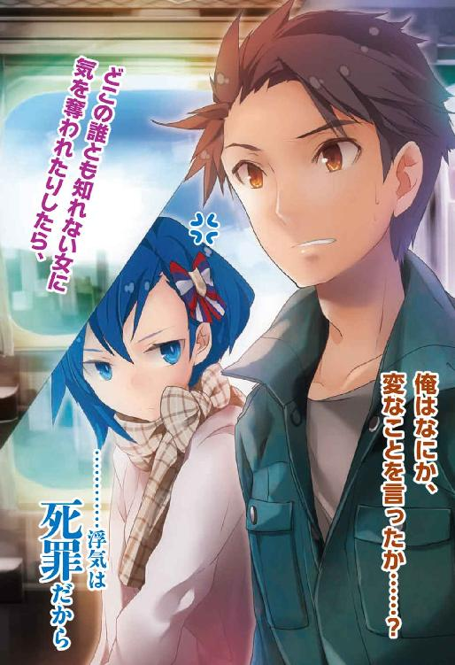
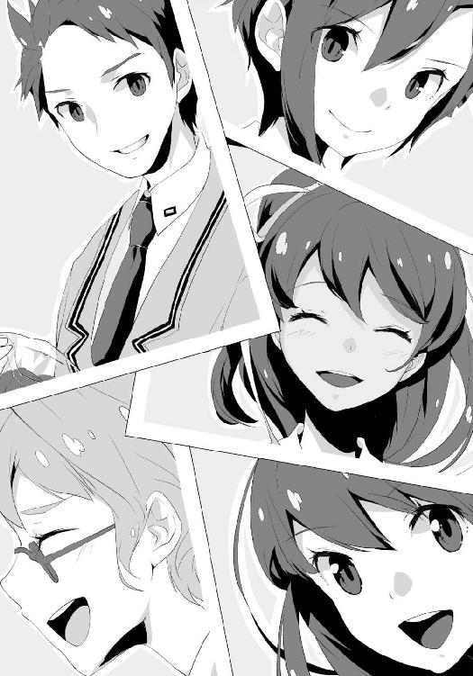

| 放課後四重奏 03 | |
| 高木幸一 | |
| SBクリエイティブ株式会社 (2013) | |



放課後四重奏３
高木幸一

本書に掲載されているコンテンツの著作権等の知的財産権およびその他すべての権利は、ＳＢクリエイティブ株式会社または正当な権利を有する第三者に帰属します。
本書の内容を権利者の許諾なく複製・複写・翻案・放送・出版・データ配信（送信可能化を含む）などすることはできません。
カバー・口絵 本文イラスト
ぜろきち
彼方から、ゆっくり赤い電車が姿を見せ、やがてそれがホームへ入った時──。わっと吹き込んだ冷風が、ひとり待ちきれず、到着を今か今かと白線前でぴょんぴょん飛び跳ねていた女の、長い黒髪と、短いディープスカイブルーのフレアスカートを、おおきく揺らした。
「はーい！ どうどうどーう！ ......すとーっぷ！」
女はジェスチャーをまじえつつ、馬に言い聞かせるように、その止まろうとする鉄の乗り物へ言葉を投げる。後ろで親と並んでいた子供たちも、「すとーっぷ！」「とーっぷ！」と指差し叫んで、自分が止めた気になっていた。
ドアが開くのに合わせ、今度は、「ぷしゅー！」と白い息をはきつつ、閉じた両手を左右へ開く女。子供たちもまた、「しゅしゅー」「しゅーっ」と女を真似て、そのあとすぐ、子ウサギがジャンプするように車内へ乗り込んだ。親たちは、苦笑気味に注意しつつあとに続く。そして、
「ほらほらーっ！ 早くしないと行っちゃうよー!? ダッシュだっしゅー」
と、女はドアの前で、駆け足をしてみせたあと、ベンチから立ち上がった俺たちに、おおきく手を振る。......この、冬空の下で元気いっぱい、ちいさな子供よろしく振る舞う女は、空上深樹。昨年の暮れ、俺が ったＳＬ会という同好会に所属する、私立緑育学院の二年。同級生である。
ったＳＬ会という同好会に所属する、私立緑育学院の二年。同級生である。
振る舞いこそ子供っぽいが、その艶やかなロングヘアに、すらりとした長い脚、豊かな胸といった、女性的な華やかさが周囲の目を惹く。そして男だけでなく、ちいさな子をも惹きつける優しくオープンな雰囲気と、快活な輝きを帯びた美しい瞳。今もホームで、多くの人々の視線を集めていた。
そんな深樹の呼びかけに、いち早く応じて駆け出すも、すぐに転びかけ大赤面、慌てて、「......あっ！」とひらひらの、ピンクのミニを押さえる女は、菜花心月。同じくＳＬ会会員の、一年だ。
恥ずかしさで真っ赤になった顔のまま、きょろきょろと人目を気にしたあと、手早く乱れたセミロングの髪を整えて、ため息。それから早足でドアへ近づき、キャリーバッグをうんしょ、と持ち上げ、深樹と車内へ入った。
心月は、深樹とは対照的に小柄で華奢、性格も基本的に大人しく、引っ込み思案なタイプだが、どこか大胆な面......もとい天然的なところがあって、会における存在感は深樹に引けを取らない。
ちなみに今、心月のバッグにぶら下がっているカメのぬいぐるみは、「シーザー金之助」という。心月は、所持する人形、ぬいぐるみに全部名前をつけており、金之助は「心月ぬいぐるみランド（※あまりにたくさん持っているので、俺が勝手につけた）」から代表者として、旅の道連れに選ばれたのだった。
心月に続いて、「......しまった！ ポッキー買うの忘れたーっ！ ......とほほ」と、コンビニ袋を探りつつ肩を落とす、ベージュのタイトミニをはいた眼鏡の女が、そして、「なにー？ よーっし、先生のを分けてあげよう。代わりに、そのカンガルースナック、おくれ！」と、女の袋をのぞき込み、大人げないことを言う、黒ハイネックの成人男性が乗車する。......最後に、
「......行こ」
と、朝集合した時から、ずっと俺のそばに寄り添っていたショートヘアの女が、優しい笑みで俺を促し、並んで乗り込む。ドアが閉まる際、女の──裾に一本、白いラインが入ったヒザ丈の──青いスカートが、かすかに揺れた。
それから電車はゆっくり、まだ低くかかった太陽の、淡い光を受けて走り出す。きょうは二月九日の土曜日。三連休の初日である。
これから俺たちは、住んでいる県の北隣に位置する古都──西京路へ、二泊三日の旅行へ出かける。
◇
「いーち、にーぃ、さん、しーぃ......、──ご！ ......と３Ｃ！ うむ、ホームで泣いてる子はいないわね。んじゃー席に座りましょーっ！」
数を確認し、何度かうなずく深樹。そしてちょうど空いていた、奥付近の座席を全員に示しつつ、誘導したあと、こほん、と軽く咳払いしてから、続ける。
「......さて皆さん！ 我々は六人いますが、座席は見ての通り四人掛けです。......３Ｃはー、空気読んで隣の車両に移動してくれると思うけどー、五人でどうしよっかなって」
「......隣の車両!? せめて隣の席と言えよ！ ......大人といえど泣くこともあるんだからなーっ！」
そう、深樹を指差して抗議するのは、俺のクラスの担任であり、ＳＬ会顧問でもある三枝隆史先生（35・独身）。まだ若いのにロマンスグレーの頭髪、細目に渋い光を宿す彼は、主に生徒たちから、『３Ｃ』『サンシ先生』などと呼ばれる人気者だ。今の深樹のように、皆、かなりフランクに接している。
彼は、俺たちが学院のお咎めを受けずに、男女混合で旅行するため、「同好会の合宿的な感じでー、顧問の先生が参加したらオッケーじゃない？」という深樹の発案によって、今回、参加を頼まれた立場である。そんなはた迷惑な申し入れに、渋ることもなくふたつ返事で承諾した......にも拘わらず、ひどい仕打ちを受けていた。
「灰堂先生ぇー！ 空上さんがいじめますぅー！」
半泣きで俺のジャケットの襟を引き、首をガクガク揺さぶってくる大人。......先生はあなたでしょうが。
ため息をつきつつ、深樹が示した四人掛けの席の、隣の席にも目をやった。こっちも空いている。
「俺と先生は、こっちにふたりで座るよ。通路を挟んではいるが、隣だから。話もできるだろうし」
「えーっ!? なんで！ ......んじゃーわたしもそっち行くーっ！」
と、すぐさま俺が座ろうとした席へ深樹が移動、足もとに荷物を置き、「ほれほれ、早く座って座ってー！」と、ぼんぼん、自分の隣を叩いて俺を呼ぶ。すると、「はいはい、はーいっ！」と手を上げて、眼鏡の女──峰早樹が深樹にまくし立てる。
「そのっ！ こ、こういう場合は平等にくじ引きとかじゃんけんで決めるべきではないかとっ！ ......って、あ。......とりあえずは、適当に座りましょうか」
そう、こちらをチラチラ見やる乗客の視線に気づき、苦笑して、最後、やや小声で皆を促す。......青い眼鏡に、栗色ショートヘアがトレードマークの峰は、心月と同じく一年だが、ＳＬ会ではなく、今回は俺たちの旅行計画に途中から加わり、参加を希望したのだった。
知り合ったのは、ＳＬ会に悩み事相談を持ちかけた経緯から。以来、俺たちと交流する仲となる。......それ以上の説明は、今は省く。
峰の発案に従い、俺と先生で全員の荷物を網棚に上げてから、まず深樹の向かいに俺（すぐ、「えーっ？」とか文句を言ったが無視）、先生が座る。そして隣の四人掛け、深樹側に峰、その向かいに心月と、......ショートヘアの女が腰をおろした。
深樹は、「くじねえ......。割り箸とかで作るー？」とつぶやきつつ立ち上がり、棚のバッグに手を伸ばそうとした。が、今度は心月が手を上げて、
「──トッ、トランプをくじの代わりにするのはどうでしょうかっ!? 組み合わせを作ることもできますし......。電車に乗ったらすぐしようと思って、ポケットに入れておいたんです！」
そう言いながら、ダッフルコートのポケットから、漫画チックなカメの絵が書かれたカードケースを取り出した。
「あーそれいいかも！ ......っていうかそれならー、もうこのまま、ゲームしたほうがよくない？ さいしょのとこには一時間くらいで着いちゃうし。ちょっとでも長く遊んだほうがいいもんね。......まあ、席決めのヤツは、早く決着がつくのがいいかな」
「......なら、ポーカーがいいんじゃないですか。前にも皆でやりましたから、ルールも把握してるだろうし。──チェンジは一度の一回勝負。役が同じ場合は、数字の大きいほうが勝ち、ということで」
と、ショートの髪に手を入れて、心月の隣、──現在、俺から最も離れて座る──、草ヶ部詩織がつぶやいた。
美しい切れ長の目に、すっと背筋を伸ばして座る佇まい。独特の存在感を示す詩織は、深樹や心月と同じく、ＳＬ会に所属する一年で、快活な深樹や、女子的な趣味満載の言動を取る心月とは違い、冷静沈着、普段はあまり感情をあらわにしない。
しかし詩織はアニメが大好きで、それについては機会あるごとに熱く語った。特に、『太陽の秘剣』という作品の主人公、アデリュート・ブラウニングには並々ならぬ思い入れがあり、彼の魅力について話し始めると止まらないほどだ。
この旅行にも、『太陽の秘剣』のＤＶＤ数枚、及びポータブルプレーヤーと、アデリュートの掲載されたアニメ雑誌を持ってきており、空き時間に宿で見るとのこと。このように、片時もアデリュートから意識を離さないのは、単なるファンという立場に留まらず、彼に恋愛感情を抱いているからであった。......のだが。
俺はぼんやりと詩織を見る。その視線に気づいたのか、電車に乗り込む時のように微笑んだ。......思わず喉の奥が熱くなる。
出逢った当初は、決して見せることのなかった優しい笑み。それを詩織は、俺に「だけ」見せるようになった。
先月、一月十四日の放課後から──。
◇
「私はあなたが好き」
そう、言葉を放った詩織は、視線をそらさぬまま、俺の瞳をまっすぐにのぞき込む。俺は呆然と、ただ一度だけまばたきをする。
詩織は、物言わぬ俺を見据えていたが、やがて目を閉じ、おおきく息を吸い込むと、はき出す。そして瞬き、視線をそらしたまま柔らかい笑みを浮かべた。
「......っ、ふふ......。......ふー......。......実際、すごいんだな、......告白するのって。......エネルギー、空になっちゃった......」
と、顔を上げるとまた俺を見て、苦笑する。俺は詩織を見つめたあと、ちいさく言った。
「......。あのな。俺は......」
「──余裕が──、......ない？」
俺は黙った。詩織はちいさくうなずき、「......分かってる。......今、青が、誰も好きじゃない、好きになれない......ってことくらい。......でももうひとつ」
そう言って、距離を詰める。
「......突き放さないことも。......あなたは受け入れなくても、拒否はしない。峰さんへの態度が、そうだったように」
詩織は、俺のネクタイに手を伸ばし、それをしずかに、上から下へなでた。
「だから、告白した。......あなたの優しさを利用して。自分が傷つかずに、気持ちだけ、すっきりさせたの。......最低でしょ」
「......そんなことはない」
「......。そう言ってくれるのも、分かってた。......だから最低なの」
詩織は、自虐的に笑うと、ネクタイから手を離し、その白く華奢な手を、俺の胸に当てる。
「......あなたは今、誰に対しても平等に、優しい。だけど必ず、いつか、誰かだけが特別になる。......その人しか、見えなくなる。ひとりの男として、ひとりの女を......。......絶対に三次元の男になんか恋しない、って思っていた私が、落ちちゃったんだから。......あなたもきっと、そうなるよ」
「......」
「それがいつかは分からないけど......。目を向けるなら、近くから。......でしょ？」
そう、穏やかな笑顔でつぶやき、俺の胸を押すようにして、離れる。それから背を向けて、しばらく空を見上げたあと、
「峰さんが、......そして他の人が......。あなたの視界を埋め尽くす前に、私があなたを虜にしたい。──青」
詩織は振り向き、優しく微笑んで、言った。
「好きよ。......愛してる。......出逢ってくれて、ありがとう」
◇
「......んじゃーポーカーでっ！ ......ふっふー。きょうこの日までベールに包まれていた、わたしの真の実力を披露する時が来たようね！」
深樹のノリノリ発言によって俺の思考は打ち切られ、気づいた時には心月がせっせとカードを配っていた。俺の分は、隣の先生から一枚ずつ手渡される。
俺はおおきくため息をついたあと、詩織に視線を向けようとしたが、......やめた。
そうして──。
カードが全員に行き渡ると、手にしたそれを見て、
「......やたっ！（峰）」「......えええええ......？（深樹）」「ひょーっ!?（先生）」「あ、ああああ......（心月）」
等々、声を漏らす者たち。ゲーム名を冠した、かの表情になっているのは俺と詩織だけだった。......まあ、心理を読み合い、駆け引きするとか、誰もそんなレベルにないから、単純に配られた役が強いかどうかで決まるだろう。
俺のカードは、クラブの１、クラブの２、ダイヤの３、スペードの４に......５。ストレートだ。なので、
「......替えない。このままでいい」
と、告げる。すると親の心月が、「ええっ!?」と、手にしていたカードの束を置き、慌てて自分の手札と俺の顔を交互に見やりながら、おろおろし始める。......アイツは絶対、駆け引きとか無理だな。
「おおーっ？ ......灰堂ぉー。ちょっといいの、来ちゃったかあー？ 『ふふ......。今この俺に勝てる者は誰もいないぜ......。俺、最強』とか思っちゃったりしてるのかー？ んんー？」
ニヤニヤ鬱陶しく肩をぶつけてくる隣の大人。......俺、この人と宿で同室なんだが。まさか、ずっとこうしていじられるんじゃないだろうな......。
これからの三日間に思いを馳せ、顔をしかめていると、向かいの深樹は、「──ちょっと青！ ......あんたまさか、勝って、す、すすす座りたい席とかっ！ あるんじゃないでしょうねーっ！」と、靴を脱ぎ、その足先で俺のスネを突いてくる。俺はため息をついた。
「......そんなものはない。ほら早く替えろ。どうせブタなんだろ。言っておくが、役が揃いかけている『惜しいブタ』などというものはないからな。ブタはブタだ」
「──なっ!? なななななんでブタって分かっ......、しかも惜しいっていうのまで......じゃなくて!! な、なーんのことかしらおっーっほっほっほ！ ......余裕ちゃんちゃんこだけどーっ、そっこまで言うならー、替えてみよっかなー！」
硬直した笑みを浮かべたあと、目を三角にして、心月に、「一枚っ！」と、カードを突き出す。その迫力に、心月は、「──ひっ！ ......は、はいっ！」と子リスのように怯えつつ、交換した。......が、深樹の表情は仁王像のようになったので、これでひとり脱落か。
「はいはいー！ あたしも一枚交換で！」
仁王像・深樹に怯える心月に、明るくカードを差し出す峰。こっちは替えてから、「......ん。......んー......」と、やや肩を落としたので、狙った役にはならなかったが、ブタにはなっていない、という感じのようだ。
「心月。私は二枚」
そう、淡々とカードを差し出すのは詩織。心月は、うん、とうなずきつつ、ちいさな手で受け取り、不器用に空きケースへ入れると、ヒザの上に置いていた束から二枚、新たなカードを抜き取り渡す。
詩織は細く白い指で、それをつまんで、器用にくるり、自分のほうへ向ける。しかし表情は変えず、無言のままだった。
そんな詩織とは真逆のテンションで、「へいべいびぃ！ 総替えで！」と勢いよくチェンジした先生は、もらった瞬間に石化していた。......深樹コースなのは明白だな。
いっぽう、皆にカードを渡し終えた心月は、
「......ど、どうしようかな......。どうしようかな......」
おろおろと、手札や周りを見る。時折、隣の詩織に助言を求めるようにチラチラ視線をやっていた。......敵同士という自覚がないらしい。
そんな心月に苦笑して、ため息をつく詩織。そして、やや挑発的な笑みを浮かべた。
「......強い役。狙えるんだったら、替えてみたら？ ......座りたい席があるならね」
「......えっ!? そ、そそそそそんな別にっ......！」
心月は、やや顔を赤らめてブンブン首を振る。が、ほどなく動きを止めて、しずかに手札を見つめる詩織に言った。
「......詩織ちゃんは......、......あるの？」
「......」
詩織は、じっと自分をのぞき込む心月を、無言で見返す。それから、目だけ動かして自分を見やる深樹と、真顔になった峰の様子を捉えると、ほんのわずか、唇の端を上げて、
「すぐ、分かるよ。......たぶん私の勝ちだから」
そう、一瞬だけ、俺のほうへ視線を向ける。......深樹はちいさく息をはき、窓の外を見た。峰は、手札を見つめて瞬く。
心月は、そんなふたりの様子に気づくこともなく、何度か唇を動かしたあと、
「......。こ、......このままで、......いい」
と、つぶやくように言い、目を落とした。
「......心月はノーチェンジ......っと。んじゃーほれほれー、皆見せてー」
窓から皆のほうへ顔を戻し、手を振り振り、やや投げやりに言う深樹。落とすよう、ヒザに広げたそのカードは、予想通り、......１が来てたら、ストレートだったという、ブタだった。
俺がチラッとカードを確認したのを認めた深樹は、顔をしかめ、
「......ばっ！ 馬鹿にしたなーっ!? そーゆーあんたはなに......って、──あーっ！ あんたが１持ってたの!? ......わたしの邪魔してどーゆーつもりよーっ!!」
無茶苦茶な言いがかりをつけ、幼児のようにバタバタ足を振り、スネを蹴り続ける。さらに隣の先生は、「......ぶたーっしゅっ！ ぶたーっしゅ！」とわめいて、俺の髪を引っ張り出した。......。
俺は上下から二頭の獣に襲われつつ、隣の三人に、「......こっちは俺のストレートが、最高だ。......誰かそれ以上の役、いるか？」と尋ねた。
「......あたしは、ツーペアっス。フルハウス狙ったんですけどねー。......たはは」
カードを見せ、峰が苦笑いして頰をかく。俺は心月に目を向けた。
心月はゆっくりとカードを皆に見せる。......ハートの２、ダイヤの２、スペードの１０、クラブの１０。それと、ダイヤの６。峰と同じく、ツーペアだ。......それを見た瞬間、深樹が訝しがった。
「......フルハウス狙えたじゃん。なーんで峰っぽみたく替えなかったのよ。ブタになるわけじゃないのにさ」
その言葉に、弱々しい笑みを返す心月。峰は少し、心月を見ていたが、視線を心月から詩織へ移し、それをきっかけとして、詩織は手札を広げた。
ハートの４、ハートの５、ハートの６、ハートの７、ハートの８。......ストレートフラッシュだ。
「......おおっ!? すごいじゃないか草ヶ部！ ......ってかストフラなんて見たの一年ぶりくらいだぞ......」
三枝先生が息をもらす。峰は目を少しおおきめに開いて、詩織のカードを見ていたが、やがて、「は......、は。......す、すごいなー。びっくりだーっ」とぎこちなく笑い、頰をかく。
深樹は無表情。そして心月は肩を落とし、自分のカードを見つめていた。そんな女子組の、どこか曇ったような雰囲気を流すように、
「......そういえば昔なー、俺もあることを賭けてポーカーしたことがあったんだよ。......思えばあの時の勝負は、俺の人生における......」
と、過去話を始める先生。しかも前置きが長い。それで深樹が、「はいはいそーゆーのはー、授業時間を潰してやってちょー。そしたら真剣に聞くからさ」と手を叩き、皆に、お菓子でも食べよっか、などと話しかける。そのぞんざいな扱いに、先生は抗議し始めたが、無視。苦笑する峰と心月を促して、コンビニ袋をさぐり始めた。が、そこで、
「......ちょっといいですか」
詩織が深樹を制し、全員が動きを止める。それを認めてから、詩織は先生に向き直った。
「申し訳ありませんが、先生。十分ほど席を外して頂けませんか。......皆に大事な話があるんです」
先生は、詩織の顔を見る。そして他の皆も、それに倣った。詩織はまばたきもせず、先生の返答を待っている。彼は、ちいさく息をはいて立ち上がった。
「......んじゃ、ちょっくら隣の車両にでも行ってくるか。......きょうはお出かけ日和だからな。思わぬ出逢いがあったりするかも。わっはっは！」
腰に手を当てて笑い出す。深樹は、「ちょっと３Ｃー？ ナンパとかやめてよね。いちおう教師なんだから」と眉をひそめ、「......いちおうとはなんだ！ 俺は骨の髄まで教師だよ！」と言い返し、どうだかねー、教師ですぅー、等々、子供レベルの言い争いをし出したので、詩織は咳払い。先生は、「はいはい、行きますよっと」と、手を上げてから、詩織を見おろして、
「......草ヶ部。『旅行は楽しく』。──な？」
そう、穏やかに告げ、詩織が答える前に、「んじゃ！」とそばのドアを開けて出て行った。
ドアがゆっくり閉まったあと、電車の走行音と、他席の会話が自然に耳へと流れ込む。詩織は、黙って動かない皆をよそに、
「......では、勝ちの権利として、好きな席に座らせてもらいます」
と、峰と心月の間を通り、空いた俺の隣に腰をおろした。
◇
深樹は、斜め前に座った詩織にため息をつくと、腕、そして靴をはかぬままの脚を組んで、言った。
「......で？ 大事な話ってなに。３Ｃが聞いたらヤバい系なの？」
「......あの人なら大丈夫とは思いますけど。念のためです。......それに私が話しやすいので」
詩織は俺を一瞥する。そして、峰、心月と順番に見やってから、深樹へと視線を戻し、しずかに言葉を放った。
「──先月、青に告白しました。......返事はもらえませんでしたが、諦めてませんので。これからそういうつもりで行動しますから、......よろしくお願いします」
深樹は、おおきく目を見開いて、それから唇を震わせる。峰は黙ってうつむき、......心月はまばたきもせず、宙を見ていた。
詩織は、俺には目を向けず、峰に視線をやった。
「......峰さんには、告白する前に、青が好きだってことは、伝えました。......でも告白したことは、言ってません。先輩や心月へと同じように、今、初めてです。......もっと早く伝えるつもりでしたけど、旅行で全員揃うから、ちょうどいいかなって。......話はこれだけです」
そう、口を閉じる。真顔で詩織を見据えていた深樹は、「......。ふーん......。......あっそう」と消え入りそうな声でつぶやいてから、視線をそらす。そのあと俺を見たが、まばたきを多くするだけで、なにも言わなかった。
峰は、白い頰を指でかいて、ほんのわずか、弱々しい笑みを浮かべつつ、言った。
「......まあ、草ヶ部さんに屋上へ呼び出されたあと、帰る時、青さんに会ったから。......告白するんだろうなーって、分かってたけどね。......でもはっきり聞くと、ちょい胸に刺さる感じかな。......あたしも、したから同じか......」
苦笑いになり、頰を軽く叩く。そのあと、おおきく息をはいて、俺を見た。
「......草ヶ部さんに返事をしなかった、というのは......。あたしの時と、同じような......？ それとも......」
「......」
深樹が俺を、子供のようにのぞき見る。心月も同じように顔を向けていたが、俺がそれに気づくと、すぐそらした。
詩織は目を閉じている。俺は淡々と、峰へ言葉を返した。
「......前に話した通り、......悪いとは思っているが、そういうことは俺にとって、......まだ先のことだ」
「......。そう、ですか......」
峰は、うつむく。詩織は無言のままだった。俺は息をはいた。......ら、前の深樹と目が合った。......口を尖らせている。
「......先って、......いつよ」
ちいさく言う。俺は深樹の目を見ながら、返した。
「......はっきりとは、分からん。......死ぬまでないかもしれないし、このあと、西京路で降りた時、ホームで見かけた女にひと目惚れする可能性だって、ないとは言えない。......まあ、これは極端な例だ......」
そこで言葉を止める。周囲から、ものすごい威圧感が襲ってきたからだ。......正面の深樹は、般若のような顔で俺を睨み、いつも穏やかな峰ですら眉をひそめ、心月は顔を赤くして、唇を震わせている。
そしてなにより......。隣からものすごいプレッシャーがかかり、様子を見ることすらできない。......な、なんだ？ 俺はなにか、変なことを言ったか......？
混乱していると、般若面・深樹は、いつの間にか笑顔──ただしまったく感情が感じられない──になり、ヒザにヒジをついて、両手のひらにアゴを乗せつつ、にっこり微笑んだまま、言葉を放った。
「......言っておくけど。この三日間、旅の浮かれ気分でー、どこの誰とも知れない女に気を奪われたりしたら、殺すから。......どぅー、ゆぅー、あんだすたーん？」
「......」
そこか......。どうやら俺は、例えのチョイスを果てしなく間違ったようだ......。
しかし時すでに遅し。峰は、半眼のまま笑みを浮かべて、「......青さん？ あたし、西京路の案内をするとは言いましたけど......。そういう目的があったりしたら、穴場に案内するふりして......帰れないとこに置いて来ちゃいますよ？」と、脅してきた。目が、マジだった......。
心月は、「......灰堂さんのむっつりすけべ」とぼそり、つぶやいて、体ごと窓のほうを向く。......むっつり。......なにがだ......。
ちなみに、心月は他の面子が、俺のことを「青」と呼ぶようになってからも、以前と同じように、「灰堂さん」と呼び続けている。俺が心月と呼ぶことには、抵抗はないようだが......。
そう、少しの間、心月のちいさな背中を見ながら考えていると、隣の黒いオーラがいよいよ強まり、身の危険を感じた俺は、顔を引きつらせ......、恐る恐る、様子を見る。
詩織は完全な無表情。......目は宙を見ていたが、俺の視線に気づいた瞬間──、ゆっくりとこちらへ向き、氷の微笑をたたえて、......わずかに首を傾げると、言った。
「......青。アデリュート様の祖国、ライプラッサ王国では、浮気は死罪だから。参考として心に留めておいてね」
「......」
色々言いたいことがあったが、......とてもそんな空気ではなかったので、俺は黙ってうなずいた。
「......ったく。これだからジャージの戦国時代男は......。最近ちょこーっと、携帯持ったりとか、服のセンスとかさ、色々現代人っぽくなってきたから忘れてたけど。......基本、想像の斜め上を行く男だってことは、頭の隅に置いておかないとね。......これからの三日間、目を離さないようにしないと......」
そう、腕と脚を組んでぶつぶつ言うロングヘアに、詩織はため息をついて、
「......その辺はご心配なく。青のことは私がしっかり監視しておきますかふあっははは！」
......言いかけた途中で、深樹に頰を引っ張られ、中断。深樹はこめかみをひくひくさせ、詩織にたてたてよこよこをしながら、まくし立てた。
「......あんたの決意表明はー、しかと聞き届けたけどっ！ だからってこの三日間、好き勝手にはさせないからね!! 抜けがけは許さ......じゃなく！ ......３Ｃの言う通り、皆で楽しーく、旅行しようじゃないの！ ......おーっほっほっほ！」
低く笑い、真っ赤になった詩織の頰から手を離すと、念を押すようにばしばしと肩を叩く。その女離れした剛力に涙目になりつつ、しかし目の光は決して深樹に負けず、互いに互角の火花を散らし合う。そこへ、やや赤い顔で身を乗り出した峰が、俺に向かって言葉を放った。
「──あ、青さんっ！ ......あなたにいちばん初めに告白したのは、あたしですからっ！ ......そこのところ、忘れないで下さいね！」
大声で、他の乗客が何人かこちらを向く。それで峰は、「──あうっ!! し、しまったっ!!」と頭を抱え、「......どひーっ！ ......あたし馬鹿すぎっ!!」と耳まで真っ赤に染めて、座席上でダンゴムシのように丸まった。
「......ふっ。青いわね峰っぽ。......こういうのは冷静に、クールに、ことを運ぶのが上策なのよ。......詩織もせいぜい熱に浮かされて、大ポカやらかさないようにねー」
「......。ありがとうございます。クールにブタを決めた先輩。......ところで深樹先輩がブタだと、まさに『ブタに深樹』......っふあふあふあふあ!!」
再び醜い争いが勃発する。俺はため息をついて、隣の席を見た。......丸まる峰の前で、いつの間にか心月は、窓際のちいさなテーブルにシーザー金之助を飾り、ぽりぽりぽり......ひとりハムスターのように、クッキーを頰張っていた。......。
ちいさなヒザの上に置かれた、薄ピンクのリボンで彩られた、青色の菓子袋。......それが店で買ったものでなく、手作りであることは、きのう電話で嬉しそうに、「とっても美味しくできたんですよ！ 楽しみにしていて下さいね！」と聞かされて知っていた。......これはもう、もらうのは無理そうだな......。
頭をかき、ふとドアのほうを見やる。すると閉じられたその向こう側で、先生が、「ま」「だ」「か」と悲しそうな顔で、ジェスチャーをしていた......。
俺はすぐに立ち上がり、そばの喧噪を尻目に、彼を中へ呼び入れた。
先生は、自分が座っていた俺の隣に、詩織がいるのを見て、「あーっ！ 俺の席にっ！ ......さてはお前、俺と灰堂の仲をさこうとしてるな～？」などと鳥肌の立つことを言ってから、心月の隣へ腰をおろす。
すると深樹が、「ちょっと、冗談でもそういうこと言うのやめてくれるー？ 下手したらこの男は、どうなるか分かんないんだからね！」などと心外極まりないことを言い放ち、そのまま彼と、俺を置き去りにした論外トークを始める。
そんなふうに冗談めかしたまま、先生は、詩織がなにを話していたかは、一切聞かなかった。
深樹と先生の話はそのままあっちこっちに飛び、皆もじょじょにまざってゆく。そうして、全員で菓子をつまみ、お喋りやトランプなどに興じて時間はあっという間に過ぎ去り......。午前八時三十分、さいしょの目的地への出発点となる、西京路駅へとやってきた。
これから、午後三時頃まで西京路市内の名所をまわり、それから少し......というか、かなり離れた宿まで、また電車で旅をする予定だ。
先月、旅の相談をしていた時のこと──。
◇
「......っと、これでオッケ！ ......ところで皆さん。西京路の、どの辺に行くつもりだったんですか？」
そう、電話を終えた峰が、ＳＬ会女子組に尋ねる。かけていた相手は、西京路で旅館を経営している、峰のおばあさんだ。
峰は、ＳＬ会の西京路旅行計画を聞くと、自分もぜひ参加したい！ と懇願した。その際に、「うちのおばあちゃんの宿なら、お安く泊まれますよ！」ともアピール。なんとそれが一泊二食付きで千円という、破格の値段だった。
もちろん、それに心を動かされたわけではなく、参加をＯＫしたのは、峰の熱心な想いが伝わってきたからだった。......少なくとも、俺はそうだ。
ともかくそういう経緯で、峰も参加することになったのだが、ＯＫした時は、旅の具体的なプランをまだ全員で固めていなかった。なので、おばあさんに予約を頼んだあと、冒頭の質問を峰がした。
それに深樹は、腰に手を当てて返す。
「そりゃーもちろん、まず涼水寺でしょー！ 次に......ってか、さっきネットで見てたんだけどー、いい感じのコースがあったの！ ......これこれ」
深樹が、携帯を峰に見せる。峰は、一度、二度......とうなずいて、それを見たあと、やや苦笑気味に、頰をかいて言った。
「......あのですね......。実は、おばあちゃんの宿っていうのが、......海側にあるんですよ。西京路の」
「......えっ？ 海側......って。......もしかして、すっごく遠くない？」
「もしかしなくても、遠いですよ」
と、詩織が呆れつつ、携帯をちょいちょいいじり、深樹と心月に見せる。
「......ここが涼水寺。最寄りの西京路駅までは......、私たちのとこからだと、電車で一時間と十分くらいですかね。そして例えば、海側のこの辺の駅までなら......西京路駅からでも四時間はかかるでしょう。......たぶん、一時間に一本とかの駅もあるだろうし」
詩織の説明に、峰は苦笑したまま、
「あー......、で、でも二泊三日の予定なんだよね？ ......な、なら！ 宿へは晩に着くよう連絡しておくから、初日の朝早くに出て、涼水寺から、さっき空上先輩に見せてもらったルートをまわって......。三時頃に西京路を発てば、いいんじゃないかな？ 次の日は、水鏡橋とか......辺りにもけっこう、──って、そうそう、宿は水鏡橋のすぐそばなんだよー！」
そう、まくし立てる。水鏡橋とは、西京路北部、戸津湾と内海の風美海を隔てる、湾口砂州の有名な景勝地だ。......それを聞いた深樹は、
「──水鏡橋？ ......見たい行きたいなんか美味しいもの食べたい！」
と、大賛成。心月も、目を輝かせている。峰はそれで、ふーっ......と安堵の息をはいていた。
いっぽう詩織は腕を組み、なにやら考えていたが、ゆさゆさ深樹に肩を揺さぶられ、「ねえねえ、あんたは行ったことあるー？」ときゃいきゃい話しかけられて、考えるのをやめたようだった。
◇
俺たちは、「荷物はひとまず、コインロッカーだな」と先生に促されて、それぞれしまうことにした。それで俺はしまう前に、旅行鞄の中から、茶のボディバッグを取り出して引っかける。
これは以前、ＳＬ会で何度目かのショッピングに行った時、リュックを背負って来たら、「次からこーゆーの！」「......使って」「下さいねっ！」と、三人に買わされたものだ。......確かに使い勝手はいい。しかしリュックのなにが悪いんだ。なんでも入るし動きやすいんだぞ。
眉をひそめて思い出していると、深樹は薄いグリーンのハンドバッグ、詩織は朱色のショルダーバッグ、そして心月はピンクの、カメとウサギのマークが入ったポシェットを提げてやってきた。心月の手には、すでにカメラがある。これも、ピンクだ。
ちなみに俺のバッグの中にも、心月から借りている青のカメラがある。......皆で使って下さい、と心月がＳＬ会に寄付したものだが、深樹も詩織も自分のを持っているため、ほぼ俺専用になっていた。
「よーっし。んじゃー行くか！ いやー久しぶりだな涼水寺も！ 思えば初めて来たのが、ちょうどお前らくらいの歳だっ......」
「はいはーい！ セカンドバッグのおじさんは置いてー、ちゃっちゃと行くよー！ 効率的、かつ、じっくりと！ ......西京路の名所を満喫しましょー！」
「おーっス！」「やっ、やーっ！」「......」
それぞれ言いつつ を上げて、隊長・深樹に倣う女子軍。そして、「おい！ セカンドバッグのなにが悪い！ 見ろこの上品な肌触り......」と抗議を始めた先生を無視して、涼水寺行きのバス乗り場へ、さっさと歩いた。
を上げて、隊長・深樹に倣う女子軍。そして、「おい！ セカンドバッグのなにが悪い！ 見ろこの上品な肌触り......」と抗議を始めた先生を無視して、涼水寺行きのバス乗り場へ、さっさと歩いた。
土曜なので人は多く、すでに列をなしていた乗客が乗り込むと、席は埋まり、全員立つこととなる。......ただ峰によると、ここらは人気観光地なので、普段も人の絶えることはなく、それほど変わらないとのこと。「もうちょっと早く並べばよかったスね......」と、苦笑いしていた。
走行中は深樹を筆頭に、小声に押さえてはいたものの、案の定、窓を指差しきゃーきゃー騒ぐ。しかも降りる時には、「小銭がなーい！」「なんですぐ確認しないんですか......。ほら早く両替を」「あ、あたし持ってますから立て替えましょうか？」「......ああっ！（チャリンチャリンチャリーン）」......ばたばたと、慌ただしいことこの上なかった。
そうして涼水寺手前のバス停で降り、他の観光客にまじって、寺を目指しゆるやかな坂道をのぼり始める。年配の人たち、外国人、制服姿の学生の集団......、皆、わいわいと話しつつ、楽しげに歩いていた。
寺に近づくにつれ、道の両端に、飯屋や、みやげ物屋が増えてくる。予想通り、「ねえねえちょっと見てこーよー」と深樹が皆を促して、雑貨屋に歩み寄る。財布やハンカチを中心に、バッグや置物など、すべてが和風のデザインのそれは、深樹たちを始め、観光女子の興味を惹くようで、早い時間にも拘わらず、すでににぎわっていた。
俺はそんな女子らの背中を見ながら、店の外でだるまの置物などを手に取っていたが、ぽんぽん、と先生に肩を叩かれた。
「飲むか？ 温まるぞ」
いつ買ったのか、缶コーヒーを差し出して、勧める。なので、ありがとうございます、と頭を下げてそれを受け取り、缶を開けた。
先生はうむうむ、と、その様子を見届けたあと、奥で騒ぐ深樹たちを見やって、言った。
「......ところで灰堂。ひとつ聞きたいことがあるんだが」
「......なんでしょう」
「本命は、誰なんだ？」
「──ぶほっ！」
俺はコーヒーをはき出して、顔をしかめつつ、ハンカチで口を拭く。先生は、ぬぐったそれをしまうヒマすら与えず、俺の首に腕をまわすと、小声で話した。
「......知り合って、二ヶ月半ってとこか。そろそろ、ちょっとは気になる相手がいるだろう。......ほら、話してみな？ 協力してやるからさ」
「......先生に恋愛相談する気はありません......というか、そういう感情は今、ありません！」
「はあっ？ うそだろ？ 毎日放課後一緒に過ごして......って、お前、アイツらがどんだけ人気あるのか知らないのか!?」
彼は目を見開いたあと、ちいさく首を振り、指を一本立てて、講義よろしく続ける。
「いいか？ 俺が相談を受けた、......っちゅーか、話を聞いただけでもなー。空上なんか入学直後から数えたら三十人くらいいるぞ？ 峰も十人は聞いたな。草ヶ部や菜花は、五人くらい。......こっちのふたりの相談は、真剣なものが多かった。......ってな感じで、灰堂。お前の悪口もそいつらから、かなり聞いてるんだぞ。......しかもお前、先月空上と色々やってたろ」
半眼で俺を見やる。気まずくなってそらすと、「......俺の情報網をなめるなー？ ネタは上がってんだよ。うそっこの恋人ごっことかなあ、例えどんな理由があっても、俺は否定的な立場だな。......愛の行為は、いついかなる時も誠実でなければならん」
と、言葉を紡ぐ。俺はやや、後ろめたい気持ちが芽生えるも、素直に肯定することもできず、横を向いたまま、返した。
「......相談を受けてるのなら、彼らの味方をしなくていいんですか。なぜ俺......僕をあおることを言うんです」
「阿呆」
次の瞬間、骨で軽く額を殴られる。そして、顔をしかめる俺に、さらに寄ると、言った。
「俺は教師だ。そしてそれ以前に、男でもある。だから男子には先達として男の道を、女子には女の道を、男なりに示す。......その姿勢で、相談をしてきた連中の話も聞き、ちゃんとアドバイスもしたよ。......うじうじしているヤツにはケツを叩き、鼻息の荒いヤツは戒め、ちょっと変な方向に行きそうなヤツには、軽ーいジャブを入れておく。......あとは本人次第。もう味方は十分してるんだよ。......で、次はお前と、空上たちの番だってことだ」
先生は、店内で楽しそうにお喋りしながら品を選ぶ深樹らをチラ見して、また、俺に顔を向けた。
「......お前はちっとも相談してこないからな。ちょくちょくこっちから鎌をかけて、色々引き出しておかないと、抱え込んで自滅する恐れがある。......確かに頭もいいし、精神力も強いが、まだ十七だ。......どんどん大人を頼って利用しろ。......恋愛だけじゃなくてな」
「......」
「......ま。そんな素直さがあったら、俺も苦労しないんだけどねー」
そう苦笑して、俺の頰を引く。そして、続けた。
「......明確に誰とは言わんが、お前、......好意を持たれてるだろ。......それでも、なんとも思わないのか？」
俺は黙る。先生はしばらくじっと、俺の顔を見つめていたが、やがて息をはくと、「......ともかく。困ったことがあったら、ひとりで抱えずに言えってこと。......いつでも待ってるぜ」と、抱いたほうの手でぽんぽん、と肩を叩いた。......そこで、
「......。あんたたち、なにやってるの......？」
背後から、怪訝な声がして、同時に振り向く。すると、顔をひきつらせた深樹と、眉をひそめる詩織が立っていた。な......なんだ？
「......そんなに密着して......って、ま、まさかあんた......！ ３Ｃにちょっかいかけられて、マジそっちに目覚めたんじゃないでしょーね!? ......じょっ！ ──じょじょ冗談じゃないってーのっ!!」
青い顔で、引き離しにかかる。ようやく状況を理解した俺は、「......阿呆かっ！ ふざけたことを言うな！」と、深樹に引っ張られるのと同時に、自分も先生から離れようとした。......が、それを彼に制され、ついでに深樹も腕をつかまれて、引き寄せられる。
そうして、俺と深樹を眼前に引き寄せると、真顔で先生は言った。
「......おい空上。お前、灰堂のこと、どう思う？」
「......はあっ!? なっ......、なななななななななに言ってんの急にっ!?」
「......はい、よく分かった。んじゃー次に草ヶ部」
先生は立ち上がり、深樹だけを解放して、俺を肩に抱いたまま、尋ねる。
「......お前は、この男が将来的に結婚とか、できると思う？ なかなかの難物なんだが......」
「......ええ、もちろん。たぶん先生よりも早く、とてもいい相手と、ゴールインすると思いますよ」
そう、にこり。彼は、「......結構」と苦笑して、今度は、何事かと寄ってきた峰と、その後ろでおろおろする心月へ、同じように、俺を示して言葉を放つ。
「峰と菜花は......。一学年下だけど、灰堂が卒業したらどうする」
「えっ？ ......そ、それはもちろん！ 会いに行くっス！ ......そんなことで、終わりにしたい縁じゃ、ないですから......」
峰は、俺を見つめた。先生は、一度だけうなずき、それから最後に......、うつむく心月へと視線をやった。
「......。灰堂と空上が卒業したら、お前と草ヶ部で会をやっていくわけだけど。......続ける気、ある？」
彼は、心月の目をのぞき込む。心月は、ややひるんだ。
しかし目をそらすことはなく、コートをきゅっとつまむと、何度か唇を動かしたあとに、言った。
「......い、今まで活動して、色々な人の悩みを聞いてきましたけど......。......ＳＬ会は、皆さんが必要としています。それにとっても、とっても大事な......、私の居場所です。......ま、まだ力はぜんぜん及びませんけど！ ......がんばってずっと、やっていきたいと思います！」
「......そうか。なら来年もよろしく。──な？」
先生は、詩織のほうへも視線を向けた。詩織は、無言でうなずいた。
「......よーしよし、よし。......よーっく分かったぞ。......これはあれだな。『プランＢ』だな」
彼は、首をさする。そして俺を解放して、言葉を放った。
「......灰堂。これからお前を数時間、グループのリーダーに任命する。俺はヤボ用で離れるから、三時になったら、西京路駅で落ち合おうぜ」
俺は顔をしかめる。それでなにか言おうとしたら、また、ずいと近寄って、
「......ちなみに、この旅行はプライベートのそれでなく、同好会の、社会科見学の一環として、学院にも、父兄にも伝えているものだ。つまりお前らになにかあれば、俺の首が飛ぶ。......ってことを踏まえつつ、よろしく頼むな？」
ぽんぽん、と肩を叩く。俺はますます顔をしかめて、「......ならなんで、単独行動なんてさせるんですか！」と言い返した。
彼は皆を見まわし、息をはくと、
「──授業だ。お前たちにとって、必要な。......な」
そう、淡々と言った。
「そうするのがいちばんいいと、今、話を聞いて俺は思った。......特に灰堂、お前には」
先生は、俺の胸を小突いた。俺は訝しがる。
「......どういうことですか。ちゃんと説明して下さい」
「......だめー。そしたら授業にならないだろ？ ......まあヒントだけ示すなら、きっかけをやるってことだ。......ハメを外すためのじゃないぞ？ 心を解放するためのだ」
彼は、俺から視線を皆に移し、また俺を見て、続ける。
「......空上らは、抑え込んでいる気持ちを、もうちょっと。そして灰堂。お前は、お前自身も気づいていない気持ちに向き合うため。......もしお前らが、一歩、今より進んでいたのなら、逆にずっと、付き添うよ。間違った方向に行かないようにな。だが、どうもそんな段階ではないと判断した。......そういうことさ」
そう言って、わずかに微笑み、
「......最近お前は、いい顔になった。旅が終わる頃には、もっとよくなるだろう。......んじゃ、なにかあったら、携帯によろ～」
俺から離れると、全員に手を振って、坂をおりていった。
◇
残された俺たちは、顔を見合わせてから、しばらく黙っていた。しかし、そのうちに深樹が、ため息をついて首をなで、言葉を放った。
「......ったく、いっつもわけ分かんないんだから......。......でもまあ、幾らあの人が生徒寄りで、フレンドリーって言っても、......気を利かせた、って感じじゃないよね。自分の首、かかってるわけだし」
「......ですね。ハッタリではなく、ほんとうに、あの人流の授業でしょう。......でもヒントからすると、少なくとも私たちは、思ったまま行動すればいいってことじゃないですか」
そう言って、詩織は俺を見ると歩み寄り、
「......行こ。私、涼水寺は初めてだから。一緒に色々まわりたい」
手を取ろうとした......が、
「......はいはーい詩織ちゅわーん！ 旅行は皆で楽しーく、──ねっ!?」
「......あ、あたしは初めてじゃないスけど、青さんと一緒にまわりたいです！」
硬い笑顔の深樹と、頰を赤らめる峰に阻止されて、引き離される。それで詩織がぶつぶつと文句を言ったので、深樹だけでなく、峰をも巻き込み、また争いが勃発した。
俺は、ため息をついて三人から視線をそらす。するとやや離れて、そんな様子をじー......っと見ていた心月と目が合った。しかし、ぷいっ、と横を向かれる。......もしかして、まだ電車でのことを、怒っているのか。
俺は心月に近づき、言った。
「......おい。電車で俺が言った、一目惚れ云々ってのは、ただの例え話だ。......俺がそんなに、誰彼構わず惚れっぽかったら、こんな人間になっているわけがないだろう」
「べ、別に怒ってません！ ......で、でも惚れっぽくなくても、誰彼構わず思わせぶりなこと言う人です！ ......だから不安なん......！」
心月は、そう言いかけて唇を閉じ、やや赤くなった頰をぷー......っと膨らませる。まさにハムスターが、ひまわりの種を含んだようなそのさまに、俺は苦笑した。
「......ともかく。せっかく旅行に来たんだから、楽しくやろうぜってことだよ。......また、写真も撮ろうな」
「......！ は、はい！ もちろ......！ ──とっ......！ ......撮りますけどっ！ 撮っちゃいますけど！ 灰堂さんが詩織ちゃんとか峰さんとか深樹先輩と楽しくしてても、ひとりでも、撮っちゃいますけどーっ！」
いーっ！ という顔をして、叫ぶ。なので俺は半眼になり、マシュマロの頰を、両手で引っ張った。
「いははははは！ はひふふんへふはーっ！」
「......しつこい。お前を置いて、よろしくやるわけないだろうが。せっかく可愛い格好してるんだから、ちょっとは可愛い態度になれ」
「可愛い格好ねえ......。ふーん......。ちゃんと見てるんだー......」
と、背後から低い声。振り返ると、深樹が腰に手を当てて、かち、かち......と歯を鳴らしている。隣には詩織も立っていて、「......私がきょう、このスカートをはいてきた意味。......分かってる？」と眉をひそめる。
ふたりが、ずいっ......、ずいっ......と詰め寄ってきたので、俺は心月から手を離し、後退する。......が、いつの間にかそばに来ていた峰に、
「涼水寺には、有名な縁結びの神社もあるんですよ！ ......一緒におみくじ引きましょうっ！」
腕を引っ張られ、よろめきながら坂をのぼり始めた。そして、「ちょっと峰っぽ！ そーゆーのはー、全員で！ だからね!?」「......そのあと、ふたりで引こっと」「──はあ？ なんか言ったー？」等々、騒ぐ深樹と詩織らもあとに続く。いっぽう心月は、「......灰堂さんの馬鹿」と口を尖らせて、スタスタ先へ歩き出した。......。
◇
やがて巨大な門が見えてきて、全員足を止める。これは『視門』と呼ばれる、涼水寺の正門だ。その紅塗りが施された、美しく堂々とした佇まいに、訪れた人たちは見入っていた。
深樹は、「でっかーい......、......って、マジでかくない？」と啞然とし、峰がそれに、「えっと、幅は十二メートル、高さが十六メートルということです！」と解説し、そのまま門のエピソードなどを話し始める。詩織は無言でカメラを取り出すと、シャッターを切り始めた。
そして、さっきまでふくれ面だった心月はぽかん、と口を開け、呆然としている。それからカメラを構えている詩織にハッとして、「......かっ！ 灰堂さんっ！ ととと撮りましょうっ!!」と、俺の袖を引き引きしたあと、慌ててぱちぱちやり始めた。
すでに大勢の人が出入りしていて、中には詩織や心月のように、門を撮影する人も多い。俺たちはそんな、ごくありふれた観光客の一群として、ふたりに倣って全員で門を撮りつつ、わいわい言いながら中へ入った。
広い道を行き、短い階段を何度かのぼり、拝観料を払って、本堂へ。そして、小学生や年配の人たちにまじって、お経が聞こえてくる堂内を幾らかのぞいたあと......。ほぼ、ここが目的と言ってもいい、かの有名な『涼水台』へ進んだ。
そこは本堂から数メートル張り出した、開けた舞台で、西京路の街を一望できる。今も木造の欄干から身を乗り出さんばかりに小学生の集団が、きゃっきゃと騒いで、引率の先生を困らせていた。そんな子供たちに負けじと、心月たちは、
「......わーっ！ すっ、すごいですね！ ......あっ！ あれはなんでしょう！」
「あれは西京路タワーだよー。あたしが子供の頃はなかったんだけどねえ」
「......すっごい高さ。......造るのにどのくらいかかったんだろう」
等々、お喋りを始める。俺は少し離れたところから、その様子を見ていたが、急に振り向いた深樹に、
「ほらほら青ーっ！ もっと近くで見なさいよ！ ......ってもしかして、また、怖いの!?」
と、でかい声で言われたものだから、他の三人も一斉に振り向いた。そして、「......そういえば青は、観覧車で動けなかったんだったっけ」と、淡々と詩織に、峰には、「......だ、大丈夫っス！ あたしがついてますから！」と、深樹並みの大声で言われて、周りの中学生や、カップルなどの視線が俺に集まる。......さ、最悪だ......。
俺はドスドス舞台を踏み鳴らして欄干に近づき、心月と深樹の間に割り込むと、わざとらしく身を乗り出して、景色を眺める。街並みの奥までじっと見つめてから、チラッと下に視線を向ける......が、すぐ戻した。
「おーおー無理しちゃってー」
そう、にやにやして肩を突く深樹。......俺は横目で見やる。
「......もうお前とは、観覧車に乗らないからな」
「......えっ!? な、なんでよーっ!! そ、そんなの駄目だからね!?」
急に、眉をハの字にしてゆっさゆっさ揺らしてきた。......コイツは学習しないのか......！
「......だから高いところで危ないことをするなって言ってるだろうがっ！ ......別に怖いんじゃないぞ！ あくまで危ないと言っている！」
大声で主張する。......しかしそれは、詩織たちをあおる結果となっただけだった。
「......怖いなら、怖がっていいよ。私がついてるから」
「あーっ！ 草ヶ部さんっ！ それ、あたしが先に言ったことだってば！ ......ずるい！」
ふたりして、腕やら背中やらにくっつき、それでまた深樹が、「......も、もしかして気を引くために、怖がってるふりしてるんじゃ、ないでしょうねーっ！」と、犬歯をむき出し、見当違いも甚だしいことを言いだした。......なので俺は心月の手を取って、さっさと欄干から離れて歩き出す。
「ちょっ！ か、灰堂さん!?」
「いいから行くぞ。......ったく、付き合ってられん」
けっきょく、すぐ追いつかれて、わいわいとやられたが、立っていた案内板を見て、「......こっちの細道に行ってみない？ 抜けた先にー、甘いもののお店、あるらしいよ！」「けっこう距離あるみたいですが。あと勾配も」「お年寄りは大変だけど、あたしらなら大丈夫だよー」と、話したあと、深樹が、
「......んじゃーお店まで、競走！ 負けた人が、ぜんざい奢ることね！ ──よーい、どんっ!!」
そう叫び、細道に入るといきなり走り出した。その突然の行動に、一瞬啞然としたあと、詩織と峰が、
「......まったく、めちゃくちゃなんだから......！」
「......ちょっ、ちょっとちょっとーっ！ あそこのぜんざい、けっこう高いんスよ～!?」
慌てて走り出す。心月は案の定、「あっ！ あのっ......、──きゃっ！」とこけそうになりつつ、あとを追う。俺は隣を、併走した。
「......はぁ......はぁ......。さ、先に行って下さい！ 最後になっちゃいますよ！」
「......男の俺が本気になってどうする。まあ、深樹に勝てるかどうかは分からんが......」
アイツの身体能力は、ずば抜けてるからな。......そもそも今だって、ぶっちぎりだし。
走り、ぼんやり前を見ていると、心月が息を切らしながら、「あ、あのっ......」と話しかけてきた。
「......か、灰堂さんは、高いところが、ほんとうに苦手なんですか......？」
「......。別に苦手じゃない。不安定で危ない場所が怖......、ちょっと気になるだけだ」
ブスッ、として返す。心月は、危なっかしい足取りでカーブを曲がり、続ける。
「......で、ではあの時......、私を助けて......くれたのは......。怖いのに......だったんでふへへへへへっ！」
足を止めずに心月の頰を引き、言葉をさえぎる。そして、
「......元々、シャツとズボンを取り返しに行ったんだ。......そのあとはなりゆきで......、自分でも......」
言いかけ、口を閉じる。
俺は、去年の暮れ──。屋上から飛び降りようとしていた心月を......助けた。
その時俺は、はっきりと人間が嫌いで、心月に近づいたのは、俺が干していた洗濯物を勝手に取って、ジェイムズ太郎（※人体模型。心月の親友）に着せようとしていたのを、取り返すためだった。
人が、目の前で落ちようとしていたら、とっさに飛びつくものだろう。......動けない、という例もある、が......。
けっきょく、心の奥のことは、分からないので、反射的に、なにも考えず、ただそうしたと結論づけている。......そのあと、処置したのも、保身のため、と。
......ただ、もし今、コイツが飛び降りようとしたのなら......。
「......？ 灰堂さん？」
心月は少し先を行ってから、足を止めた俺に気づき振り返った。そうして、息を整えて、近づく。
俺は、目前で瞬く心月に、真顔で言った。
「......もう絶対に、飛び降りようとするんじゃないぞ。......ついでに家出もだ」
「......あっ......。......あの時は、ほんとうに......」
責められたと勘違いした心月は、しゅん......とうつむく。俺は、「そうじゃない」とかぶりを振って、心月の肩に手を置く。そして、顔を上げた時、言った。
「......俺が嫌だからだ」
「......。......灰堂さん......」
心月は、しばらく俺の目を見る。そのうち、目がわずかにうるんでくる。
「あの......。......それは......」
「......どうしたの？」
振り返ると、少し息を乱した詩織が立っていた。詩織は、俺と心月を見て、そのあと心月の肩に置かれた、俺の手に視線を向けた。
しかし特になにも言わず、さっさと俺に歩み寄ると、腕を絡める。
「......先輩が怒ってるよ。早く行こ。......私も、最下位でいいから」
そう言ってから、心月を見る。心月は、二度、まばたきしてから、ちいさく足踏みすると、俺たちより先に駆け出した。
◇
「遅いっ！ 遅い遅い遅いっ!! ......それでもあんた、スポーツテストの成績上位者なのーっ!!」
怒り狂った深樹に、胸ぐらをつかまれ揺さぶられる。相変わらずの、女子離れした剛力に顔をしかめ、なんとか振り解き反論しようとしたが、
「......どーせ、『男が女相手に本気なんか出せるか』──みたいなこと考えてたんでしょ!? ......っとにこの戦国時代を駆け抜けた男ときたら......。最下位とかじゃなくてー、そーゆー考えに対して、奢りの刑の、罰っ！ ばーっつ！」
と、ばってんを突きつけられる。......図星だったので言い返す言葉もなく、ただただ責められていた時、詩織が俺の前に立った。
「......青は、心月を待ちながら走ってたんですよ。......だから遅れたんです。......だよね」
そう、心月を見る。俺は、「いや、違う。深樹の言う通り......」と言いかけたが、心月が、
「そ、そうです！ だから私が奢りますから......」
カメ模様のがま口を、ポシェットから取り出そうとする。しかし詩織がそれを止めた。
「......この場所に、最後に来たのは、私と青だから。......ふたりで奢る」
「......。......詩織。あんた、ちょーっと青を甘やかしすぎじゃない？ ......そういうの、優しさって言わないと思うけど」
深樹が、腰に手を当てて、詩織を見る。詩織は、まったく動じることもなく、淡々と返した。
「甘やかすとか、優しさとか、そういうのはどうでもいいです。......私がしたいと思うことを、しているだけですから」
互いに、冷ややかな目で、見つめ合う。それで峰が、「......あ、あのあの！ 時間がありますから、とりあえず行きませんか？ ......ここのおしるこ、ちょー美味しいっスよ！」
苦笑いしつつ、皆を促した。......深樹は、ため息をつき、不敵な笑みを浮かべた。
「......んじゃー奢ってもらいましょーか！ 言っとくけど、手加減とか、しないわよーっ？」
「ええ。私は体型維持のために、抑えますから。先輩は豊かな体を維持するために、存分にどうぞ」
次の瞬間、お馴染みの羽交い締めで詩織は攻撃される。......が、雰囲気はいつもの感じに戻ったため、峰はほっとしていた。いっぽう心月は、がま口を持ったまま、やや肩を落として、詩織を見つめていた。
その後。宣言通りに、深樹はぜんざいにおしるこ、だんご......見ているだけで口を押さえたくなるほど平らげた。......おかげで俺は、ほとんど食べていない。
ちなみに、「お昼には少し早いスけど、ここのご飯も美味しいですよー」と、甘いものを食べる前に、峰より勧められた俺たちは、昼飯も食べていた。......その上での、話である。
伝票を見て、啞然とする詩織に、「ふっふっふ......。甘く見たわね。......甘いものだけに！」と、くだらないことを言い、深樹は上機嫌で腹を叩いた。
俺は、引きつった顔の詩織と一緒に、全員分の金を払うため、伝票を持って立ち上がろうとする。......そこで、「待って」と、詩織に制された。
「......これからのことだけど。２グループに分かれない？ 電車での席決めみたいに、また、トランプで勝負して。......西京路に集合の、三時まで、二対三で行動するの」
「......えっ？」「そ、それって......」
心月と峰は、詩織と俺を交互に見て、なにか言いかけるが、口をつぐむ。深樹は、腹を叩いていた手を止めて、ふーっ......と息をはいた。
「......なに考えているか、丸わかり......ってか、隠す気もないって感じー？」
「......先輩は、反対ですか？」
と、座敷席で脚を崩す深樹を、やや挑発的に見おろす。それで深樹は口の端を上げて、テーブルから爪楊枝を五本抜き取り、「......やるなら、これよっ!!」と、示した。
「......印をつけて、引く。......トランプよりも手っ取り早いでしょ？ それに運、っていうのはー、けっこう、何事においても重要な要素だと思うんだよね。......ある意味実力より」
そう言って、深樹はコートからちいさなペンを取り出して、二本にだけ印をつける。それを隠すように持ち、シャッフルしたあと......。全員に、差し向けた。
「......いいですね。私もその考え方、正しいと思います」
詩織は臆することもなく、にやり、と笑う。峰は唾を飲み込み、ふたりを交互に見た。
心月は、爪楊枝を見つめていたが、急に、「あ、あのっ！」と、手を上げた。
「......こ、これをする前に......。え、縁結びの神社っ！ ......で、皆一緒に、おみくじを引いたほうがいいと思うんですが......。......その、分かれちゃったあと、別々に引くのだと、なんだか、淋しい感じですし......」
そう、少しだけ俺を見ると、そらす。
「......。そういえば、そうかもね。──んじゃ、これやる前に、行ってみよっか」
「──待って下さい。一緒に引くのはいいですけど、こっちの勝負を済ませてからのほうがいいと思います」
詩織が、深樹の持つ爪楊枝を見やる。それから、続けた。
「......気持ちをすっきりさせてから、......おみくじは引きたいですから」
少しちいさな声になりつつ、話す。深樹は、そんな詩織の顔を見て、肩をぽんぽん叩き、
「ん！ 私もそう思うわ。......んじゃーとっとと、こっちを済ませちゃいましょ！」
と、皆に爪楊枝を差し出した。
◇
『涼水台』のある本堂から、少し離れたところにある、『天見神社』は、全国有数の縁結びの神社として、多くの人たち......主に若い女性や、カップル......が訪れていた。
長い階段を、女子の波を避けながら、周囲と同じくきゃいきゃい騒ぐ深樹らに反して、やや肩身の狭い思いをしつつのぼる。
そして拝殿でのお祈りもそこそこに、社務所へ。......ここも人だかりができていて、なかなか前に行けなかったが、数分後、先頭に出ることができた。
「......わーっ！ た、たくさん可愛いのがありますねっ！ ......このお守りとかっ！」
「あたし的には、これがお勧めだよー！ ほら、ちょっと変わったデザインでしょ？」
「......これ、ストラップにもなるよね。......買おうかな」
「ねえ峰っぽー、この中で、いちばん効き目あるのどれー？」
と、楽しげに、お守りやグッズを買ったあと、本命であるくじを、皆で引いた。
「......さーってと！ ......なにが出るかなー？」
軽い口調ながら、表情はやや硬い。そんな深樹を始め、皆でチラチラ、お見合い状態で、ほぼ一斉にくじを開いた。......俺は、大吉だった。
「あーっ!! あ、あんた大吉なのっ!? ちょっ、ちょっと交換してっ！ これいらないからっ！」
と、深樹が俺に押しつけてきたのは......小吉。そして、ムスッとした顔で、詩織が同じく、小吉と書かれた紙を見ていた。......いっぽう、
「ふふっ......。ふふふ」
じっと紙を見つめ、自分で声を漏らしていることにも、恐らく気づいていないだろう心月。満面の笑みで、もはや確認する必要もなかった。しかし、その隣で、
「......んぎゃーっス！ ......なかったことにしよ！ ──なかったことにする！」
そう、わめくのは、峰。......凶を引いたらしい。
「ま、まあこういうのはー、運だから！ 実力と関係ないって！」
「......おみくじの大前提を崩すようなことを言わないでもらえますか。そもそも店で言ってたことと違うし......」
深樹と詩織が、また言い合いを始める横で、にこにこおみくじを見続ける心月。俺はため息をつきながら、頭を抱える峰に言った。
「......じゃ。行くか。......集合は三時なんだよな」
その声で、峰は目を見開き、体を起こす。それと同時に、深樹はため息、詩織は視線をそらし、心月は顔を上げ......笑みをゆっくり、消した。
さっきまでの落ち込み具合はどこへやら、峰は、爛々と目を輝かせて、たんたんっ......とステップすると、俺の隣に寄り、
「......えっと。で、では！ 先ほどの、グループ分けのくじの結果により、今から青さんと行動を共にさせて頂きます！」
と、言って、ほんのわずか、顔を赤らめると......、にっこり、俺に微笑みかけた。
俺たちは、天見神社、そして涼水寺をあとにして、のぼってきた坂をゆっくりと下る。坂の左右にある店々は、昼近くになり、ますますにぎわいを見せていた。
俺の隣を、らんら・らんらららん♪ と、鼻歌まじりにおおきな歩幅で歩く峰。風で、栗色の短い髪が、しずかに揺れていた。
しばらく歩いたのち、それまで笑顔だった峰が、急に足を止める。そして、やや唇を震わせて、俺のほうを見た。
「......なんだ。どうした」
そう、怪訝になる。峰は、赤い顔で、やはり唇を震わせたまま、半笑いでつぶやいた。
「......も、......もしかして......。......これは、デッ......！ デデデートじゃないですかっ!?」
「......。そういえば、......そうだな」
俺は、苦笑した。峰は、「あああああああっ！ そんなこととも露知らずっ!! 十五分ほど過ごしてしまったああああああああっ!!」と頭を抱え、周りの視線を集めていた。......ので、俺は慌てて、坂の隅のほうへ引っ張った。
そこで、はーっ、はーっ......息を整える峰に、尋ねる。
「......ところで、これからどうする。......西京路駅へ戻る時間を考えると、二時間半くらいか。まあ、行く場所にもよるが」
「......あっ、......時間のやりくりとかなら任せて下さいっ！ あたし、小学校の時まで、西京路っ子でしたから。ローカルなとこは友達との遊びで把握してますし、観光地とかも、お母さんお父さんにほぼ、連れて行ってもらってますし。効率的に、色々まわれますよ！ ......行きたいところがあったら、どんどん言って下さい！」
胸をどん！ と叩く。俺はうなずいて、返した。
「......お前は行きたいところは、ないのか？」
「あたしは、もう行き尽くしてますし、それになにより......、あ、あなたと一緒なら、どこでも楽しいですから......」
はは......と照れくさそうに笑い、頰をかく。その顔と、行き交う観光客たちを見やり、俺は少し考えると、言葉を紡いだ。
「......じゃあ、......そのローカルなところに案内してくれないか。......名所名跡じゃなくて。お前が子供の頃、遊んだ場所とか」
峰は、ぽかん、と口を開く。それから瞬いた。
「な、なんでですか？ その、つい知ってるって意味で、言っちゃいましたけど......。どうせなら、有名どころのほうがいいんじゃないかと」
「......有名どころなら、ひとりでもまわれるが、お前の知ってる場所は、お前としか行けない。せっかく一緒にいるんだから、そっちのほうがいい」
「......。は、ははは......。っと、青さんって......」
峰は、くすくす、おかしそうに笑う。俺が訝しんで、「な、なんだ......」と尋ねても、「いーえ、べっつにー？」と、笑みをこらえたまま、一歩、二歩と先へ進んだ。そうして、振り返る。
「......ではっ！ お望み通り、あたしの過ごしたあちこちにー、ご案内しまーっす！ ......お代は見てのお帰りーっ！」
と、おどけながらお辞儀をし、体を起こすと、歯を見せて笑った。
◇
俺が峰に連れられて、さいしょに訪れたのは幼稚園だった。
「......あたし、ちいさな頃は泣き虫で、よく幼稚園も、ぐずって行かないこともしばしばで。小学校に上がってからは、百八十度変わったんスけどね。眼鏡をかけてからかなあ」
そう、くすっと笑みを浮かべて、水路の向こうに建つ園舎を見る。ゾウやキリンの絵が描かれた園舎の前に広がるグラウンドには、土曜で休みなのか、誰もいない。
「......小学校六年の夏、ここを離れる時に、お世話になった先生たちへ挨拶しに来たんですけど、......誰もあたしだって、分かんなかったんスよ。見た目も、性格も変化しすぎて。『早樹ちゃん？ うそっ!?』『いえ、ほんとうっス。チョーあたしっス』『ほんとうっス？ チョー？ ......なんだか話し方までハイカラになって』とか。ははは......」
峰は苦笑して、水路の前にしゃがみ込む。そのまま、しずかな音を立てて流れる水に、耳を傾けていたが、急に立ち上がり、
「......ばっ！ ......なんちゃって」
水路へ飛び込む身振りを見せて、にやり。思わぬ行動にぎょっとして、体勢を崩していた俺は、そのいたずらな笑みを見て......全身の力が抜けた。
「ははは！ 驚いた、驚いたーっ！ ......きょうは、青さんの色んな顔、見せてもらいますからねーっ！ 覚悟、しちゃって下さいよー？ ──んじゃ、次、行きましょっか！」
峰はくるりとターンして、水路沿いをおおきな歩幅で歩き出す。俺は息をはいてから、あとを追い、隣に並ぶと軽く頭を小突く。
峰は、「あいたっ。な、なにするんスかー！」と、ぶーぶー文句をつけ、しばらく言い合いつつ、細道を歩いた。
水路から離れ、峰の案内のもと住宅街へと入ってゆく。そして路地裏を通ったり、かなり急勾配の坂を、体を前に倒しながら必死にのぼったり......。小学生、峰早樹の遊びルートをたどって、あちこち歩きまわる。
「......これだけで、お前がいかに活発だったか、分かるな......」
「......そうっスね。じ、自分で言うのもなんですけど......。今、久々にまわったら、しんどーっ！」
やや息を乱しながら、笑う。「......でもさすが青さん！ 鍛え方が違うっス！ 小学生のあたしに、ぜんぜん負けてないですよねー」と、ヒジで突く。俺は頭をかいて、右手にある、フェンス越しに見える小学校へ目を向けた。
「......もしかして、あれが通っていた学校か？」
「えっ？ いえいえ......。あれは隣の地区のです。あたしのは、こっち」
そう、左側にあるフェンスの向こうを指差す。そこにも学校が見えた。
「このフェンスの道で、学区が分かれてるんですよね。だからここ通ると、両方の学校の子が行き帰りとか、放課後とかに会うんですよ。......きょうは休みだから、誰も通んないスけど」
隣の学校が見えるよう、峰は右手のフェンスにもたれ、ぼんやり眺めた。
「......実はあたしの初恋の人とも、ここで会ったんスよ。......隣の学校の子。背が高くてスポーツマンっぽくて、頭もよさそうな感じ......。......雰囲気はちょっと、青さんに近いかも」
と、笑った。俺はポケットに手を突っ込み、峰の視線に倣うようにして、学校を見る。峰はまた、話し始めた。
「......小学校三年の時、出逢って。それから卒業するまで話しかけることもできなくて。......ただ見てただけ、っていう情けない感じで。あしたこそ、あさってこそ、しあさってこそ、......って先延ばししまくってたら、あたしのうちが引っ越すことになって。......中学は地元......ここのに行けなくなったんですよね」
苦笑して、ため息。
「その子が、ここの中学に進むかどうかは、知りませんでしたけど。ともかく、最後になるから、もう告白するしかないー！ ......って。とうとう話しかけて、告白しましたよ。『好きです。付き合って下さい！』......。......初めて話しかけたのが、告白だったんです。......向こうは、啞然としてましたよ」
「......」
「......で、まあ当然、『キミのこと、よく知らないから。......ごめん』って。......でも小学生男子がそうはっきりと返事できるのって、今考えたら、すごいなって。......やっぱりその子は、見た目だけじゃなく、中身もしっかりしていて、大人だったんだなーと。......あたしの周りの男子なんて、っとにガキばっか......というか、それにまじって、あたしもよく遊んでたんスけど。......だから、さっきのルート」
は、は......とまた、苦笑い。そして、続けた。
「......そういう感じで、あたしの初恋は終わったんですが......。後悔はないんです。順序もなにもなく、めちゃくちゃでしたけど、想いを伝えることをしなかったら、ずっと引きずって......新しい恋にも気づかない......か、気づいても、動けなかったろうし」
峰は、俺に向き直る。
「ちなみに中学の時は、誰にも恋しませんでした。......あの子以上にときめく人がいなかったのか、......色々忙しかったからか、......実は失恋を引きずってたのか。......でももう、いいんです。......あなたに出会えたわけですから」
そう、まっすぐ目を見て、言った。
「......あたしはあなたが好きです。これからまた、振られても。......もう子供じゃないスから。追いかけ続けます。......『迷惑じゃない』って言ってくれた、あなたの言葉に、甘えちゃいますから」
「......峰」
「もちろん、嫌なら嫌って言って下さいね。好きな人が嫌がってることを、分かっててするなんて、......そんなの恋じゃなく、ただの自己愛ですから」
「......分かった。......嫌はともかく、......好きな女ができた時は、はっきりと伝える」
「......たはは。......それってやっぱ、今も、ぜんぜんあたしに気持ち、行ってないってことっスよね。......胸いったー......」
唇をかみつつ、何度目かの、苦笑。俺が、「すまん......」と謝ると、峰はちいさく息をはいて、また目を見つめ、言った。
「......ならひとつ、お願いがあります。......聞きたいことがあるんです。......いいですか？」
「......ああ。なんだ」
峰は、両方の小学校へ視線をやってから、言葉を放った。
「......前に。あたしが、顔色が悪いのを隠すために、お化粧したのを、青さんは見抜いて。......昔、同じようなことをした人間を......しかも男で知っている、......って」
俺は、黙って峰を見返す。峰は、視線をそらさず、続けた。
「......それってもしかして......、......あなた自身のことなんじゃ、ないですか......？」
冷たい風が吹き抜ける。それで少し、フェンスが鳴った。
「......あのこと。ずっと考えてたんです。......ただそういう話を、自分の周りで聞いたっていうには、なんか、生々しい感じで。......なにより、実感があるから、あたしのことにすぐ、気づけたんじゃないかなって。......そう思いました」
少しうつむいて、手を見る。
「きょう。こうして色々、あたしの昔の場所を案内して、......初恋の話もしました。......詮索とか、ぜんぜん好きじゃないんですけど、でも......。好きな人のことは、知りたいって気持ちは、あります。......もしよかったら、......教えて下さい。......あなたのことも」
そう、顔を上げると、真剣な面持ちで、俺を見据える。......俺は、じっとその目をのぞき込んでから、ちいさく息をはくと、言った。
「......あまり昔のことを、人には話したくない」
「......。そ、そうですか......。......じゃ、じゃあ、無理にとは......」
「......だが。俺に似たようなヤツのことなら、話してもいい」
峰は瞬く。俺はまた、小学校のほうを見やって、淡々とつぶやいた。
「......俺っぽくするために、『あお太』という名前にする。あくまで、境遇が似ているヤツの話だ。......それでもいいか？」
峰は、うんうん、とおおきくうなずいた。......それで俺は、話し始めた。
「......。あお太は、小学校三年の時に、親を交通事故で亡くした。それから、親戚中をたらいまわしにされて、......あっちこっちでやっかい者扱い。殴られ、叩かれ、文句を言われ、......炊事洗濯、買い出しに掃除。どこへ行ってもやらされたし、自分から進んでやった。......居場所がもらえないからな。......そして時には、怪我や、精神的ストレス、栄養不足からくる顔色の悪さを、外の人間から隠すために、こっそり家にあった化粧品を使ったこともあった」
峰の顔はこわばっていた。俺は淡々と、続けた。
「......親が死ぬまで、友達だった連中も。......引っ越しを繰り返したということもあるが、せっせと手紙を書いたりしても、じょじょに、皆、ひとり残らず離れていった。......それであお太は、『自分には、さいしょから友達はひとりもいなかった』と決めた。......それからもできなかったから、......その決めつけで、不都合はなかった」
「......」
「中学になって、あお太は必死に勉強とスポーツに打ち込み始める。成績がよくなれば、親戚も、自分をやっかいには思わないかもしれない。......もしかしたら、誉めてくれるかも、と。......そして、人も......。集まってくるんじゃないかと。......盛大な勘違いを、した」
「......それは、......？」
「......不器用で、経験がないから遊びの話題にも乗れず、ひたすら勉強やトレーニングをしている人間......しかもそれで好成績を収めて、教師に誉められている人間なんて、......誰も、友達になりたいなんて、思うわけがない。......それは世話になっている家でも同じ。愛敬ひとつ振りまけない上、自分の子供よりもいい成績を取ってくるなんて......面白くないわけさ。......それであお太は、自分の阿呆さ加減に気づいたが、もう遅かった」
俺は、ぼんやり空を見た。
「......中学三年の夏。最後に世話になった家の叔母さんから、ある学校のことを聞かされた。『全寮制で、授業料や生活費を、全額貸し付けてくれる』と。あんたは成績『だけ』はいいから、受かるはずだ。ぜひ受験しろ、と。......あお太に選択の余地はなかった。叔母さんの願い通り受験して、合格。......その後、叔母さんから連絡はなく、こちらからも連絡せず、人付き合いを嫌い、中学と同じように、勉強と、トレーニングに明け暮れて、学校生活を送った。......こんな話だ」
息をおおきくはいて、髪をかき上げた。しばらくそのまま、空を見続けていたが、どすっ、と音がして、胸になにかがぶつかる。
......峰が額を押しつけて......泣いていた。
「......すみません......。......でも。......でも......」
「......。だから、あお太の話だって言ったろうが。......それにあお太は、今、幸せに暮らしてるんだぞ」
峰は、涙を流しながら、顔を上げた。俺は少し、微笑んで、言った。
「......友達もできて。......告白までされて。......阿呆で不器用で、なんの経験もないから......。受け入れることは、できなかったが。......それも、そのうちに、できるようになるだろう。......いつか人並みに、なりたいな」
「......なに言ってんスか......。......あたしよりめちゃめちゃ成績いいじゃないですか......。それにずっと大人で......。......優しくて。......。......馬鹿なこと言わないで下さいよ......」
峰はそう言って、また俺の胸に顔をうずめて、泣いた。
◇
その後、涙を拭いてから......。峰は、濡れた俺のシャツを見て、「......す、すみません！」と、慌ててハンカチで拭き取ろうとしたが、それがすでに自分の涙で濡れていたものだということに気づいて、「ああああーっ！ もーあたしは馬鹿かっ!!」と、頭を抱える。俺はその様に思わず笑い、「わ、笑わないで下さいよーっ！」と、赤面した峰に叩かれる。
俺は叩かれた腕を軽くさすり、腕時計に目をやった。......もうそろそろか。
「......ちょっと早めだが、駅に移動するか？ その近くで、また少し話してもいいし」
「......あっ！ そのっ！ ......じゃあ最後に、あたしのお勧めのお店に案内しますよ！ ......って言っても、お洒落な喫茶店とかじゃないですよ？ 小学校の時の、行きつけの、駄菓子屋さんっス......」
と、ちょっと恥ずかしそうに、つぶやく。俺は微笑みながら、うなずいた。すると峰は、
「じゃあそこへ！ でもちょーっと、その前に、近くの公園に寄らせて下さい。......その、顔がぐしゃぐしゃなんで、洗面所に......」
「分かった。......じゃあその公園に行くか」
「はいっ！ ......実はそこも、けっこう思い出深いところなんですよ。その話も、しますね！」
そう言って駆け出す峰。俺は、そのあとを歩きながら、また、ふと考え事を始める。昔の......。遠い昔のことを。久しぶりに、過去に触れたからかもしれない。
◇
両親が生きていた、まだ俺が七歳の頃──。
夏に、羽香県の堤ヶ丘にある、今はもういない祖父母の家へ遊びに行ったことがある。三日間過ごし、そこでいとこたちや、祖父母の近所に住む子供たちと遊んでいたのだが、その中に、ひとりだけ女の子がいたのだ。......いとこではないのは確かだから、たぶん、近所の子だったと思う。
その子が俺と同い年だったか、上か下だったか。顔も、そして名前も......、もはや今となっては思い出せないが、......ただ、明るく元気で、俺を含めて男たちに負けず、ボール遊びや駆けっこ、魚捕りなどをしていたことは、覚えている。
さっき峰が、昔、男子にまじって遊びまわっていたということを聞いて......、ふと、その子のことがよぎった。今はどうしてるのか。やっぱり元気に走りまわっているのか。......それとも、まったく......。
「......青さーん！ なにしてんスか!? ほら、ここです、ここ！」
いつの間にか、数メートル先に立っていた峰に、大声で促される。指差す方向を見やると、ちいさな児童公園があり、子供たちが縄跳びしていた。
俺はそんな子供たちを少し見てから、峰に手を上げて、そばに駆け寄った。
◇
それから──。
峰に公園で思い出話を色々聞いたあと、行きつけだったという駄菓子屋に行き、菓子を頰張りつつ、またたくさんのことを聞いた。峰は話す間中、ずっと笑顔で、俺もそんな明るさ、楽しさに、穏やかな気持ちに包まれていった。
そして時間が来たので、ふたりで西京路駅へと、約束の時間ぴったりに戻った。......三枝先生を始め、すでに全員集まっていて、先生が、
「おーっす。無事でなにより。......俺におみやげとか、ない？」
と、笑いながら肩を叩いてきた瞬間、
「遅ーいっ!!」
「......約束の時間の、十分前に来るのがマナーよ」
「......た、楽しかったみたいですねっ！ そ、そうですかっ！ ......うう」
同時に詰め寄られ、なんだかんだとまくし立てられ苦笑するが、それは、困惑の笑みではなく、どこか心地よいものだった。
「よーっし。全員揃ったし、これから宿に向かうぞー。......ちょい長旅だが、皆、元気にやっていけるかーい!?」
「......皆いい？ 旅の醍醐味は、目的地だけじゃなくて、道中にもあるんだから！ まだまだ旅を楽しむぞーっ！」
「おーっス！」「や、やーっ！」「......」
「──あれ!? 俺が先にあおったのに！」
無視されてショックを受ける先生を尻目に、深樹たちは、わいわいと、ホームへ向かって歩いていく。俺はそのあとを、半泣きの先生とゆっくりついていった。
◇
そうして。電車を乗り継いでゆき──。
ある駅では一時間近く待ち、途中で先生がトイレにこもったりもして、予定より三十分ほど遅れたが、午後七時を過ぎ、辺りが真っ暗になった頃......。俺たちはようやく、峰のおばあさんが経営する旅館、『澄江の家』に着いた。
「......皆さん、お疲れさまでしたー！ ここがおばあちゃんの宿っス！ 中々風情があって、いいでしょ！」
笑顔で皆を、中へ促す。『澄江の家』は、昔ながらの日本建築で、その旅館というより大きな家という感じからも、どこか家庭的な温かさがあった。
玄関にある下駄箱に、「三枝様ご一行」と書かれたボードがかかっており、「靴はそこに入れて下さい。中は素足で！」と、峰に言われるまま、俺たちは靴を脱いで、しまう。それから、すぐ隣にある、空の受付所を見やっていると、
「まーまーよくいらして下さいました。......早樹の祖母、朝子でございます。いつもお世話になっております」
薄緑の着物を着た、上品な白髪の女性が奥から現れた。先生が、「や、これはどうも。三枝です。お世話になります」と頭を下げ、幾らか談笑しているうちに、
「はい、これが宿帳です！ 住所とか電話番号は、全員学院のにしますから、名前だけでいいんで、書いちゃって下さい！」
そう、峰に差し出された古い帳面に、皆で名前を記す。そのあと、「......んじゃ、部屋に案内しますねー！ ......こっちです！」
峰はてきぱき俺たちを誘う。その様子を見て、おばあさんが、「早樹！ もうちょっと落ち着いてご案内差し上げなさい。......それと大股で歩かない！」と、注意。峰は、「は、はーいっ」と、恥ずかしそうに、急に小股になってこけかけて、皆の穏やかな笑みを生んだ。
部屋は、二階にある百号室と、同じ並びで一部屋空けて、百二号室。前者が三～六人部屋で、深樹、詩織、心月、峰が、そして後者の百二号室が、一～三人部屋で、俺と先生が泊まる。
俺たちがその六畳間に入ると、向こうから、すぐにきゃーきゃー、部屋の様子や、窓から見える夜景......といっても、辺りは明かりも建物もほとんどなかったので、恐らくなにも見えてないだろうが......で騒いでいた。
そんな女子たちの声を耳に入れつつ、俺たちは荷物を置く。先生は、うーん、とおおきく伸びをして、「よーっし！ 宿に着くまで我慢に我慢を重ねていたが......ビール飲んじゃうぞーっ!! ......いいよな？」と、俺に半笑いで聞いてきた。俺は、「同好会の顧問としては、駄目だと思いますが、『三枝さん』なら、いいんじゃないですか？」と、苦笑して返す。
「......いいこと言った！ ......んじゃーここにいる間、俺は三枝さんな？ よろしく、生徒じゃなくて友達の灰堂君！」
そう、わっはっは！ と笑って握手をしてくる。俺はなすがままに、それを受け止める。やがて峰が、
「ご飯の用意ができてますからー、集合してくださーい！」
と、呼びに来たのに合わせて、ふたりで部屋を出た。
二階の奥にある、俺たちが泊まる部屋とは別の、十畳ほどの和室には、すでに料理が並んでいた。来る二時間前に連絡を受けたおばあさんが、準備を始めていて、すぐに食べられるようにしてくれていたのだ。
俺たちは、中央に置かれた、落ち着いた木の座卓に並び、温かなカニすきを囲み、......座るなり、
「おいひーっ!! ......カニッ......、美味しいカニーッ!!」
「ほっ、ほうへふへっ！ ──あひひっ！」
「......（黙って食す）」
......という感じに、飯の豪勢さと、長旅の疲れからくる空腹もあって、全員食べまくる。......確かに美味いが......。コイツら鍋料理好きなんだな。
峰はにこにこ、食べるよりも皆に、「野菜もすっごく美味しいんですよー？ それにこのあとの雑炊も！ ......あ、デザートのプリンは、おばあちゃん自慢のお菓子なんです！ その分もお腹空けておいて下さいねー！」と、接待する側として声をかける。いっぽう、先生は、
「あ、あの～、ビ、ビール......なんて頂いちゃったりするというのは、......やはり問題ありますよね。ははは、冗談ですよ」と硬い笑いで、おばあさんに言っていた。......冷静に考えたら、孫の先生として来ているわけだからな。その辺、忘れてた。
が、おばあさんはにこにこ笑い、さっとその場を去ると、すぐお盆に瓶を載せて戻ってきて、「先生も『先生』としてお疲れでしょうから。どうぞここにいる間は羽を伸ばして下さいな」と、ウインクした。......ものすごい融通の利く人だった。そして、この明るさは......。峰は、おばあさんに似たのかな。
それで感涙し、「うおおおおありがとうございますっ！ ──美味いっ!!」とビールを飲み始める先生に、「っとにこの不良教師はーっ！ ......ひと口ちょうだい！」
と、手を差し出す深樹は、おばあさんに、めっ、されていた。......線引きもきっちりしていた。
「わははは！ お前も早く大人になることだな！ おいちーおいちー」
唇を尖らせる深樹に、美味そうに飲んではグラスを見せつける大人。深樹は、「......わたしはー！ 永遠の十七歳だから！ 大人になんかなりませんよーだっー！」とあかんべーをしてやり返していた。
その言葉に詩織が、「......永遠の十七歳。......ぷっ」とぼそり。......が、それを聞きつけた永遠の地獄耳・深樹によってすぐさま成敗され、ひどい目に遭っていた。
「......大人かあー。あたしは格好いい女になりたいっスね。おばあちゃんみたいに！」
部屋を出るおばあさんに、手を振る峰。峰の隣に座り、もぐもぐハムスターのように白ネギを食べていた心月は、ハシを置くと、
「わ、私も格好いい女の人になりたいな......。お仕事もばっちりで、お料理のレパートリーも多くて......。......なんでもてきぱきこなせるような」
恥ずかしそうに言う。それから、正面で黙々、カニを食う俺と目が合うと、やや眉をひそめた。
「......なんだ」
「い、今......。『お前にそんなのは無理だ』とか、思ったでしょう......」
ほんのわずか、頰を膨らませる。俺はため息をついた。
「......別に思ってない。できれば、今だけじゃなく、大人になったお前も見てみたいもんだな。いったいどんなふうなのか......」
「......えっ？」
心月は、ぽかん、と口を開けたあと、一瞬で赤くなって目を泳がせる。俺の隣で争っていた詩織と深樹は動きを止め、こちらを半眼で睨み始めた。......な、なんだ？
「──ちょっ、ちょっとあんた！ それどーゆー意味よっ！ ......も、も、もしかして、『ずっと心月のそばにいたい』......ってことじゃないでしょーねっ!?」
「......は？」
真っ赤になって言い放つ深樹に、啞然とすると、今度は詩織が、俺の腕を取り、「......。......どうなの」と言わんばかりに、真顔でじっと見つめてくる。......。
「あっ！ あたしはどうですかっ!? 大人になった......っていうか、──青さんっ！ 今はこうして一緒にいますけど、ほんとう、これからも......、卒業しても連絡取り合って下さいよね!? ......いきなり音信不通とか、絶対嫌ですから!!」
峰は立ち上がって、ぶんぶん手を振りながら、赤い顔でまくし立てた。それで深樹も、「......この男は、マジそういうことあり得るからね......。電車でも言ったけど、想像の斜め上を行く男だから、......こっちがしっかりしていないと！」
腕を組み、うんうんうなずくと、詩織も峰もそれに倣う。俺は顔をしかめてなにか言おうとするが、「......かい・どーん！」とのしかかってきた先生によって、それをさえぎられる。危うく顔をお碗に突っ込みそうになった......。
深樹たち三人は、そんな俺のリアクションに、「「あははは！」」「......ぶっ」と爆笑し、また、たわいないお喋りと、食事を再開した。
「......ったく」
俺は先生に乱された髪を整えながら、そう、つぶやくと再び心月と目が合う。心月は俺の視線を受けた瞬間、
「......おっ！ おネギもたくさん食べて下さいね！ ......とっても美味しいですから......」
鍋からひょいひょい俺の碗に移し、ぎこちない笑みを見せたあと、さっと席へ戻る。そして頰を赤らめたまま、うつむいて、もぐもぐと白菜を食べ始めた。
◇
そんな感じで、食べては話し、話してははしゃぎ、はしゃいでは飲み......。まさに宴会と呼ぶにふさわしい時間が、続いた。
そして、皆でデザートのプリンを食べている時、すでに赤ら顔の先生が、俺の肩に手をまわし、絡んできた。
「......おい灰堂ぉー。......電車では散々、はぐらかしてたがあーっ......。実際きょうは、どんなふうに過ごしたんだあーっ？ ......ひひっ」
「......普通ですよ。いつも通りの感じです」
淡々と返すと、絡めた腕の力が強くなり、俺の首を絞め始める。
「うっそこけっつーの!! （ものすごい小声で）......だから誰が本命なんだよ教えろってっ！」
俺はため息をついて、酔っ払いを無視。ぱくぱくプリンを口に運ぶ。すると俺の隣に座っていた詩織が、しずかに言った。
「......青。このあとのことだけど......。お風呂に入ったら、一緒に散歩でもしない？ ......ひとりだと怖いし、寒いから。......寄り添ったら、暖かいでしょ」
返答に困っていると、体を寄せてきて、「......ほら。......暖かい」と、俺を見上げ、くすりと笑う。その悪魔のような微笑に、俺は思わず顔をそむけると、眼前に先生の顔があって、危うくキスするところを回避、しかし、「おおー、マイ、教え子よっ！」と抱き締められて、全身から血の気が引く。
「──だから『そっち』に行くなって言ってるでしょーがっ!! 離れろーっ!!」
向かいから深樹がだだだだっ！ と走り寄り、先生を引き離す。酔っ払いの三十五歳は、そのまま倒れ込むと、「あー気持ちいいにおいだーっ！」と目を閉じて、畳に体をゆだねた。
深樹は先生を放り、息をはくと、今度は俺にくっつく詩織を見て、「......あんたもくっつきすぎだっつーのっ！ ......あとなにが『......ほら。......暖かい』よ！ そ、そんなので夜道を散歩とかふしだらすぎるわーっ!!」
そう叫んで、思いきり割り込む。詩織は舌打ちするも、深樹の剛力にかなわず後退。割り込んだ深樹はそのまま俺の横にくっつき、じろりと睨んだ。
「......それと言っておくけど青っ！ あ、あああああんたお風呂とかのぞいたら駄目だからねっ！ い、幾ら旅先で解放されてるからとか言っても、わたしの体にめろめろになったら、駄目なんだからーっ!!」
と、訳の分からないことを叫び、しかも矛盾するかのように腕に抱きついてくる。......俺が呆気に取られていると、正面に座る心月と峰が、にこっ......、と感情の伴わない笑みを、同時に浮かべた......。
「灰堂さん。お胸、すごく当たっちゃってますけど。まったく振り払おうとしませんね。......気持ちいいんですか？」
「......青さん。おっぱい大好きなんスね。......へー。ふーん。......ははは。......そう」
「──違うっ！ ......というか離れろコラ！ お前も酔っ払ってるのか!?」
俺は必死に深樹を離そうとするが、相変わらずの力によって動けない。心月と峰はもはやこちらを見ずに世間話を始めてるし、先生は寝てるし、おばあさんはいないし。......頭を押さえていると、
「先輩、クモがいますよ。......そこ」
そう、淡々と詩織が、深樹のヒザの上を指差す。......なにやら黒い物体が見え、その瞬間、
「──っ!? ......きゃああああああああああああっ!!」
と、深樹が大絶叫、慌てて飛びのき部屋の隅までばたばた後退、何事かと心月や峰も立ち上がる。俺は、深樹のいた畳を見やるが......、そこにはマジックで色を塗られた、ミカンの皮があった。
「......ああ、すみません。勘違いでした。どうも」
平然と言う詩織は、黒い皮を拾い上げ、マジックとともに、ひらひら深樹に揺すって見せる。......呆然としたあと、深樹は激高して立ち上がり、なにか叫ぼうとするが、動きを止める。
そして、ふー......っ、と、おおきくため息をつくと、腰に手を当てて、低い声で笑い、詩織を見据えた。
「......ん争？ ......戦争、する？ ......わたしと。......。──おーっほっほっほ！ ......いーわ受けて立ってあげるわよっ！ ......あんた、今夜は寝かさないんだからーっ!!」
深樹は思いっきり詩織を指差し、ぎゃーぎゃーまくし立て始めた。詩織はそんな罵声を右から左、「私、宇宙語、分かりませーん」という様子で、聞き流していた。
そのまま俺たちは、対立する深樹と詩織に巻き込まれるように、トランプやオセロ、将棋にすごろく、持ってきたもの、宿にあったもの......あらゆるゲームを、風呂に入れる時間ギリギリまですることになる。
風呂に入り、それぞれ部屋に戻ったのは、十二時を過ぎた頃だった。......それで詩織は散歩を諦め......というか深樹に阻止されて、じゃあ、またあした、......と言って、別れた。
◇
「......っと。......これでいいか......」
俺は、酔っ払った先生を布団に寝かせて、ひと息つく。それから、隣に敷いた自分の布団に、腰をおろした。......まだ寝ようにも、神経が高ぶって寝られないのだ。
今まで人とほとんど交わってこなかった人間が、こうして大人数で旅をして、飯を囲み、ゲームをして、笑い、騒ぎまくっているわけだから。......平静でいられるわけがない。
「......楽しかった......、な」
そう、ぼそりつぶやく。......自然に、出てしまった。
「......そうか。それはよかった......」
背後から声がして、ぎょっとする。恐る恐る振り返ると、先生が寝転がったまま、顔だけこちらへ向け、うなずいていた。......その表情は普段と変わらず、あまり酔った感じではない。俺はため息をついた。
「......寝てなかったんですか。......なら自分で布団に入って下さいよ」
そう、ごまかすように、言う。彼はすまんすまん、と言いつつ、視線を天井へ向ける。
「......なあ灰堂」
「......。なんです」
「......俺は、高校の時はひとりぼっちでなあ。......だからお前の気持ちは、よく分かるんだ」
思わず、先生の顔をのぞき込む。彼は、天井を見たままだったが、視線に気づいて、「......意外か？ けどそんなもんだぞ人間なんて。......誰でも、生きてたら色々ある。表に見えているものがすべてじゃない。過去と現在はつながってもいて、つながってもいない。......人は、変われるし、変われない」
淡々と、話した。それから、ふふっ......と笑って、こちらを向いた。
「今だって、ほんとうの友達だって呼べるヤツは、ひとりしかいないぞ。......ただ時間を過ごすだけの相手なら、それなりにいるが。......お互いに、淋しいから、そうして時を埋め合っている。......ともかく、灰堂」
先生は、起き上がってあぐらをかく。目は、まっすぐ俺を見ていた。
「......失敗しても間違っても、......なにをしても、いいから。......したいのになにもしない、という選択だけは、するな。自分の心に素直になれ。後悔と反省は、あとでしたらいい。......俺がお前に構ったのは、人と交わりたいように、見えたからだ。......その手助けを、したかった。......それだけだよ」
「......先生」
しばらく、無言で向き合っていた。それから、彼は立ち上がり、浴衣を脱ぐと、服に着替えた。
「......ちょーっとお喋りが過ぎたから、飲みに行ってくるわ。......実は女将さんに、いいところを教えてもらっててな。......皆には、内緒だぞ？ ......あと夜間の外出は、禁止な！」
びしっ！ と指を差す。なにか言おうとしたら、「大人はー、自分のことを棚に上げて、いいんだよーん！」
と、あかんべーをして、笑い......、彼は部屋を出て行った。
◇
そのあと、一時間くらい、俺はぼんやりとして布団にもぐったが、やはり眠れなかった。なのでまた、起き上がり、浴衣のまま外へ出る。
廊下はひっそりしている。......そういえば別れてから少しは、話し声がしていたが、もうぜんぜん、深樹たちの声は聞こえない。......さすがに疲れて、寝ているようだ。
俺は、ゆっくりと薄暗い廊下を歩き、手すりに触れながら階段をおりる。宿の外へ出るのではなく、玄関からすぐの広間にある自販機へ、お茶を買いに行くためだ。
広間はひっそりしていて、誰もいない。自販機の明かりだけが、煌々と灯っていた。俺は手にしていた小銭を一枚一枚、放り込んでいき、すぐに光った赤いボタンの中から、ひとつを、押し、がたんっ！ と落ちてくる音が響く。......すると、
「──っ？」
なにか、声が聞こえて振り向く。......しかし誰もいない。が、どうも気配がするので、しばらく階段のほうを見ていたら、ひょっこり......誰かが顔を出した。
「......か、灰堂さん......？」
そう、恐る恐るつぶやいたのは、心月だった。
心月は、しばらく顔だけ出してじーっ......と俺を見ていた。なのでお茶を開けながら、しずかに言った。
「......いつまで生首状態を続ける。......お前もなにか買いに来たのか？」
「えっ？ あ、......はい！ ......ちょっと、お茶を......」
そう言って、ようやく体を見せて、おりてくる。浴衣に、茶羽織姿の心月は、ひょこひょこと俺の立つ自販機のそばへ寄ってくる。風呂上がりの髪は軽くとかしただけで、いつもと少し、雰囲気が違って見える。
「......灰堂さんは浴衣の上になにも羽織ってないですけど、寒くないんですか」
「......すぐ戻るつもりだったからな」
つぶやいて、自販機から少し離れた。それを合図に、心月は自販機に寄って、手にしていたがま口を開くと、小銭を取り出そうとした。......が、
「......ああっ！」
ちゃりんちゃりんちゃりーん......、辺りに数枚、落としてしまう。俺は苦笑しつつ、それを一緒に拾った。
「......す、すみません......」
縮こまって、小銭を受け取る心月。そして、俺と同じお茶を買った。ただし、俺は冷たいので、心月は温かいのだ。
心月はもじもじしながら、俺を見る。なので言葉をかける。
「......少し。話していくか？ ......どうせ部屋に帰っても、俺は寝られないし」
「あっ！ は、はいっ！ ......じゃあ、少しだけ！」
そう、笑顔で言って、缶を開けて、ちびちびと飲み始めた。
「......。出るとき。やけにしずかだったが、もう皆、寝たのか？」
「はい。やっぱり疲れたんだと思います。......先輩と詩織ちゃんは、ずっと喋っていましたし、峰さんは、色々お世話してくれましたから」
両手を温めるように缶を持ち、話す。それから、俺を見た。
「あの......。......そ、その......」
「......なんだ」
「......。きょうの、峰さんとの自由行動......、の、ことなんですけど......」
心月は、目を伏せ気味に、つぶやいた。俺は、缶をあおると、ぼんやり玄関のほうを見る。
「......実は、観光名所とかじゃなく、アイツの過ごした場所に、案内してもらってたんだ。......小学校まで、西京路にいたって言うからさ。......せっかく一緒にまわるなら、見てみたいと思った」
「......そ、......それはその......。峰さんのことに興味が......あったからですか？ ......」
少し、不安げに尋ねてくる。俺は、淡々と返した。
「そうだが、......お前の想像しているような意味じゃない。......安心しろ」
「そ、そうですか......」
ほっ、とする心月。それを見て、俺も息をはく。......が、ふと、自分の言ったことを思い返し、「......ん？」と首を傾げる。......安心しろ......って。なにを言ってるんだ、俺は......。
心月のほうは、俺を見ると、「あっ！ い、いいい今のは違いますよっ!? 別に灰堂さんが思っているようなことで、ほっとしたわけじゃありませんからっ!!」とぶんぶん首を振りまくる。それで俺も、咳払いして、「分かっている。......言わなくていい」と、言った。
そうして、互いに微妙な空気をかもし出し、その居心地の悪さに、俺たちは、笑う。......ただ、深夜なので、抑え気味に。それでもしずかな広間に、声は響き渡った。
「......はあ。なにをやってるんだろうな、こんな夜中に......。しかも旅先まで来て」
「......灰堂さんって、ほんとう......、いつ、どこでも、変わらないですよね......」
「......お前だってそうだろうが」
「そ、そんなことないですよっ！ ......会室とか、学院の近くで会う時とは、違うはずですっ！ そ、それに見た目とか......。今だってお風呂上がりですし！ ......こんなの、男の人に見せたことないですっ！ ......よく見て下さいっ！」
ずいっ......と寄ってくる。きゅっと閉じたちいさな口に、ちいさな鼻、きらきらと、独特の輝きを放つおおきな目......。セミロングの髪......の様子や浴衣で、確かにいつもとは違う雰囲気があるが......。
「変わらん。......いちばんお前らしいところはな」
そう、言ったあと、俺は顔をそむけた。......なんかきょうは、調子が狂っている。
「......なっ、ななななんで横を向くんですかっ!? ──ひょっ、ひょっとしてなにか、におったりします!? ......あれ？ あれあれ？」
こちらの気も知らず、心月は半泣きで、自分の袖口や髪に鼻を近づけたりし始める。俺はため息をついて、心月に向き直ると、「においは、シャンプーとか石けんの、いい香りしかしない。......安心しろ」と、言った。
心月は袖をおろすと、「......ま、また安心しろ、ですか......」と、口を尖らせ気味に、つぶやく。......頭をかくしかなかった。
そんな俺をじっと見て、心月は、深呼吸したあと、......言葉を返した。
「......。なら、安心します。......不安になるたび、......安心させて、下さいね」
「......」
俺たちは、しばらく見つめ合ったが、俺がちいさく、ほんのわずかにうなずいたあと、心月は満面の笑みを浮かべて、横を向いた。
「......そろそろ戻りませんか？ ......たぶんあしたも、早いでしょうから、寝ておきたいです。それに......、今の、とってもいい気持ちのまま......、お布団に入りたいですし」
「......？ 最後、なんて言った？」
「......なんでもありま、──せんっ！」
そう、こちらに振り向くと、べーっ......。ちいさな舌を出して、また、笑う。そして、階段へ向かって歩き始めたので、俺もゆっくりあとに続いた。──が、
「......そうだ。......そういえば、『くまっきー』のビデオのことなんですが。......ちょっと思い出したんですよ」
と、足を止めて、言った。......『くまっきー』とは、先月、俺と一緒に会室で見た、『くまっきーの大冒険』という、子供向けの短編アニメだ。
俺は、心月の隣に並ぶ。
「......そうか。......ところでそれは、長い話か？ 俺は別にいいが、早く寝たいんなら、あしたにでも聞くが」
「......いえ。そんなに長くないですから。......歩きながら話します」
俺たちは並んだまま、狭い階段へと進み、手すりに触れつつ、音を立ててのぼり始める。
「......五歳の時。夏に親戚の叔父さんの家へ、家族で遊びに行ったことがあるんです。一週間くらい泊まって、最後の三日間は、叔父さんの家の、近所の子とも遊びまして。......その遊んだ子のうちのひとり──その子は、私と同じように、その辺りへ泊まりに来ていた子なんですが──、約束をしたんです。......『わたし、とってもたのしいアニメを、もってきてるんだ。かえるまえに、みせてあげるね』って」
「......それが『くまっきー』か？ ......。......しかし、それと、俺と見たかった......というのと、どういう関係があるんだ」
そう、訝しがる。......心月は、俺と出かけた時に、『くまっきー』を見たがったのだ。
階段をのぼり切り、ふたりで部屋へと進んでいく。
「......それは......。......たぶん、その子と、灰堂さんの雰囲気が、どこか似ていたからじゃないかな......って。......けっきょく約束は、最後の日、私が熱を出しちゃったから、果たせなかったんです。......だから、似ている灰堂さんと見ることで、無意識に、約束を果たそうとしてたんじゃないかなって。......そんなふうに考えました」
やがて、心月の部屋の前に着く。俺は、しずかに尋ねた。
「......そうか。......だが、お前の口ぶりだと、もうそいつのことは、なにも思い出せないみたいだな。......それとも、名前とかを伏せて話したのか？」
「いえ。......名前は知らないんです」
心月は、ドアのプレートを見つめて、続ける。
「聞いたのは、『あーくん』っていうあだ名だけで。今、どこで、なにをしているかも分かりません。......そもそも、あーくんのことを思い出したのは、つい最近ですから。......それも、灰堂さんと、雰囲気が似ていたから、かもしれません。......あ、ち、ちなみにお顔とかは、ぜんぜん似ていませんからね。そういうのじゃなくて、ほんとう、空気感といいますか、印象が......」
そう、わずかに笑いつつ、言いかける。──が、硬直する俺を見て、表情を変えた。
「......ど、どうしたんですか？ 私、なにか変なことを......」
「......ところで。......お前の叔父さんの家はどこにあるんだ？」
さえぎるように、言い放つ。心月は、怪訝な顔をしつつ、俺が真顔なのに気づいて、すぐに返した。
「あ、......つ、堤ヶ丘です。羽香県の。......けっこう山のところです。......それがどうかしましたか？」
俺は口を押さえる。そして、唾を飲み込むと、言った。
「......五歳の時の夏、ということは、その年の十二月に、......お前は六歳になるということだな」
「は、はい......」
「......そうか。......分かった」
俺は口から手を離すと、深呼吸する。......俺が七歳の夏に出逢ったのは......。
「あの......。......灰堂さん？」
心配そうな様子で、のぞき込んでくる。俺はちいさくかぶりを振って、言った。
「なんでもない。......じゃあ戻るか」
「......はい」
そうして、俺たちは、各々の部屋へと、戻った。
◇
俺はひとり、布団の上で、当時の、その子の姿を必死に思い出そうとしたが......。思い出せず、その子の振る舞いと、心月のそれとも、どうしても重ならず......。やはり人違いかもしれない、と思ったりもしたが、......なぜか胸の奥で、そうであるという確信があった。
いや、そう思いたかったのかも、しれない。......しかし、その理由は、分からなかった。
◇
翌日。二月十日の日曜。朝六時──。
俺はジャージ姿で、まだ夜明け前の暗い中、宿の前で体をほぐしていた。......日課としてジョギングや、筋力トレーニングをしているので、勝手に目が覚めて、着替えていた。
考え事をしていたため、あまり寝ていないが、テスト前なども同じだったから、特に負担ではない。ほぐし終わると、ぼんやりと辺りを見まわした。......外灯もまばらで、宿の前に走っている道路は分かるが、他ははっきりと見えない。
きのう着いたのも晩で暗かったので、ここらがどういう風景なのかは、まだ分からなかった。暗がりの中、ただ波のしずかな音が、遠くから聞こえてくる。有名な水鏡橋は、すぐそばにあった。
全長四キロほどの、細長い湾口砂州であるそれは、戸津湾と内海である風美海に囲まれていて、松並木に挟まれた砂州中央は、砂利道となっている。
観光客は基本的に、ケーブルカーなどで高所にのぼり、そこから水鏡橋の美しさを眺めに来るわけだが、直接降り立って、戸津湾に面した海岸を歩いたり、砂利道を散歩したり、自転車で走ったりすることも多い。......なにが言いたいかというと、その砂利道は、
「......ジョギングにうってつけよね。......水鏡橋って」
俺は突然、うしろから聞こえてえきた声に振り向く。そこには、コートを羽織った詩織が、白い息をはきつつ立っている。そしてその横には、赤い自転車があった。
「......たぶん日課だから、ここでもするんだろうなって。......きのう女将さんに、自転車貸してもらえるよう頼んだの。レンタルサイクルも近くにあるけど、朝早いから開いてないし。......ぴったり、読み通りでしょ？」
にやっと笑う。俺が頭をかいていると、「......それに朝早くなら、誰も来ないだろうし」と、付け加える。そして、自転車を押しながら、進み始めた。
「......行こ。......あと、お願いもあるの。......聞いてね」
少し恥ずかしそうにつぶやいた。俺がきょとんとしていると、胸元から笛を取り出して、ぴぴーっ、とちいさく鳴らす。
「......さ！ い、いいから行くの！ 皆が起きてくる前に！」
「あ、ああ......」
俺はそうして、突然コーチと化した自転車の詩織とともに、水鏡橋へ向かって走り出した。
◇
幅四、五メートルほどの砂利道を、左手に波の音を聞きながら、走る。途切れぬ松林のそばに、等間隔を空けて外灯が並び、まだ暗い道を照らしていた。
「......いつも、こんなペースで走ってるの......？」
「ああ。......だが普段は住宅街の入り組んだ道で、こんな直線が続く場所は、あんまり走ったことがないから......。少しスピードが出てるかもしれん」
そう、返す。詩織は、そうなんだ......、としずかに言うと、少し黙った。
それから十五分ほど走り続け、ほんのり、海側の空が白んでくる。俺たちは、松林からのぞく空と海を時折見ながら、先へと進んでいたが......、淡い光の線が水平線に走った頃、詩織がブレーキをかけた。
「......？ どうした。......なにか落としたのか？」
俺は足を止め、振り返り、ゆっくりと詩織に近づいた。詩織はううん、とかぶりを振ると、自転車からおりる。
そして、ハンドルを持ったまま、なにやらもじもじし始めた。そのうちに、どんどん海側からの光が増してくる。......口を開いては閉じ、閉じては開き......。俺が訝しんでいると、急に突進してきて、危うくぶつかるところだった。
「お、おいっ！ どうしたんだよ！ 危ないだろうが！」
「......わっ、分からないの馬鹿っ!! ──ふっ......！ ふふふふたり乗りしたいって言ってるのーっ!!」
俺は啞然として、真っ赤な顔でうつむく詩織を見おろした。......一瞬、その態度と、言われた内容のギャップで、なにを言われたのかが分からなかったが、......分からない俺のほうがどうかしていたことに、......少ししてから、気づいた。
「......。すまん。......なんというか。......すまん」
「──もっ、もっと謝れーっ！ 馬鹿馬鹿馬鹿っ!!」
自転車を俺の体に預けたまま、大赤面のまま、ぽかぽか俺の胸を叩いてくる。しかし、とうとう太陽がのぼり始めたのに気づくと、「──は、早くっ！ 後ろに乗るから、こいで！」と、俺を促し、慌ててまたがった。
詩織は、後ろに横座りし、......俺の腰に手をまわすと、体と、頭を預けた。
「......青。汗かいてる」
「......体、くっつけないほうが、いいんじゃないか？ そんなに早く走らないから、別に......」
「......また、馬鹿って言われたいの？」
「......すまん」
そのまま、俺たちは走り出す。ゆるやかに、砂利でタイヤがこすれる音と、波音と、風で松林がささやくように鳴らす音を聞きながら、誰もいない道を進んでいった。
外灯がひとつ、またひとつと消えていく。そして空が、海が輝きをいっそう増して、冷ややかな空気に、まぶしい光が散りばめられ、自然から祝福を受けているように、ふたりだけの時間を過ごしていた。
「......青は、ふたり乗り......。したことある？」
「......ない。聞くまでもないだろう」
詩織は、背に押しつけた顔を、左右に動かした。......それから、「私は、......女子とはあるけど、男子とはない。......だからこれが、初めてなの。......嬉しいな」と、つぶやく。
「......重くない？」
「ぜんぜん。羽みたいだな」
「......ありがと。......。......羽、か。それ、ちょっと面白いかも」
「......？ どういうことだ......、──って、おい！」
抱きついていた詩織は、後ろでなにやら動き出す。口を挟む間もなく、荷台の上に立ち上がり、そして、そのままおぶさるように、俺に抱きついた。
「......今、私のコートが揺れてるから！ ......羽みたいでしょう!?」
「お前......。お前なあ......」
絶句しつつ、皆の前でとは違う顔を見せる詩織の、その無邪気さに、なんとも言えぬ笑みが漏れる。そして詩織は、抱きついたまま、「なにがおかしいのー!?」と、耳元でおおきく言ったあと、......子供のように、笑った。
◇
「......ねえ、青」
「なんだ」
太陽がはっきり姿を見せた頃──。俺たちは道を引き返し、自転車を押しながら、ふたりで歩いた。
海がきらきらと輝き、松林の長い影が伸びる。その、横断歩道のようになった影の上を進みつつ、詩織は続ける。
「......私が、三次元の恋愛に興味がない......って、言ったのは。ほんとうなの。今でもアデリュート様が好きよ。......でもね」
手を後ろにまわし、組む。そして、歩を止めぬまま、輝く海を眺めた。
「......今、とても気持ちがあふれてくる。......こんなに素晴らしいことが、この世にあったんだなって。......光も、風も、木も草も、海も空も......、すべてが違っていて......、生きてるって心から思える。......恋って、いいね......」
それから、俺の顔をのぞき込むと、
「......青はたぶん、まだそれを知らない。......だから先に、教えておいてあげる。......分かったら、......教えてね」
少し淋しそうに、つぶやいた。
◇
そのまま、たわいない話を続けて、十数分後には水鏡橋を抜ける。そしてしばらく歩いて、宿の前に戻ってきた。......ら、
そこには深樹と、峰と、心月が、すでに着替えて立っていた。
「......おはようふたりとも。朝帰り......っていう言い方もできる......かな」
深樹は、白い息をはきながら、冷ややかに言った。詩織はその言葉を無視して、峰に、「これ、女将さんに借りたの。あとでお礼、言っておくから」と、自転車を端に停める。
それから、全員に向き直り、言った。
「......。実は朝ご飯を食べたら言おうと思ってたんだけど......。くじとか、勝負とか、そういう提案は、もうしない。......私、きょうはずっと青とふたりで過ごしたい」
「......。あんたがいつも言ってる、会の結束とやらは、どうでもいい感じなんだ。ふーん......」
深樹は無表情に、言葉を返す。逆に詩織は、少し顔を赤くして、言葉を放った。
「......さっき、青と朝の散歩をしたんです。......ず、ずっとしたいと思っていたふたり乗りも。......それで気持ちがあふれて止まらないんです。......私は、『青が好き』って、ちゃんと告白しています！ ......だから......」
「......なに？ 遠まわしに批判してるわけ？」
深樹は、真顔になった。場の空気が一変し、心月と峰は、顔から血の気が引いていた。
詩織は、俺を見たあとに、また、深樹に向き直ると、まっすぐ背筋を伸ばして、言った。
「......はっきり言って、そうです。......この旅行だって、先輩が計画したものですけど......、目的はひとつ、......でしょう？」
深樹を見る目は、まばたきもせず、そらしもしない。深樹は、表情を崩さぬよう、下唇をかんでいた。
「......先輩は、ずっと安全地帯で、そうして......、......これからもリスクは負わずに、いい思いだけして、過ごしていくんですか？」
「......。......はぁ？」
深樹の体は震えていた。目が見開かれ、手は、固く握りしめられている。......俺は、なにか言おうとするが声は出ず、......脚が動かなかった。
詩織は、しずまり返った皆や、怒りで顔を赤くする深樹に臆することもなく、......前に踏み出し、言い放った。
「......なにか言いたいのなら、峰さんや私みたいに......想いを告げるべきでしょう!? 先輩は卑怯だと思いま......」
次の瞬間、詩織は深樹に平手打ちされ、体勢を崩した。深樹は、真っ赤な顔で体を小刻みに震わせて、歯を食いしばる。
やがて、詩織が体を起こした時......、深樹はうつむき、長い髪を前に垂らしたまま、ふっ、ふっ、ふっ......と笑い、顔を上げると、無理やり作った笑顔で、高い声で、言った。
「......はいはいはーい！ そうでーっす！ わたしはー、青が好き、大好きー！ ......ってかばればれでしょ？ ......しょっちゅう焼きもち焼いてるしさー、......これで分かんないヤツとか、いないでしょ。......にぶちんのご本人様以外、ね。......。......さあどう？ これでいい？ リスク背負いま......っ、──っ!! ......ううう......、ぐっ......、......うわあああああん......!!」
深樹は天をあおぎ、大声を上げて泣き始めた。詩織は青い顔で体を震わせ、心月も峰も、同じようになっていた。俺は硬直した脚を殴り、深樹に一歩近づこうとしたが、その刹那、深樹は駆け出した。
「──っ！ ......おい待てっ!! ......くそっ!!」
俺は、すでにはるか向こうまで駆けていった深樹の背を見て、青い顔の三人にも目を向けるが、うまく言葉をかけることができず、舌打ちして、ともかく深樹のあとを追うため、走り始めた。
◇
深樹は、水鏡橋の海岸に座っていた。スカートが汚れるのも構わず、三角座りをして、ぼんやり、泣きはらして赤くなった目で、波が打ち寄せる様子を眺めている。時折、洟をすすっていた。
俺は、砂に足を取られながら、一歩、また一歩と深樹に近づいた。
「......。ごめんね......」
俺が隣に立った瞬間、海を見たまま、つぶやいた。俺は黙って腰をおろす。
「......っと、ガキだよね......。詩織にも謝らなくちゃ......。......皆にも。せっかくの旅行をめちゃめちゃにしてさ......。どんな先輩よ......。......最悪」
洟をすすり上げ、「でも、もう嫌われちゃったよね......。どうしよう......」と、漏らす。俺は深樹を見つめ、しずかに、しかし強く言った。
「大丈夫だ。嫌ってなんかない。......アイツらがそんな、ちっぽけな心の人間だと思うか？ むしろお前を心配してるはずだ。......くだらない心配するな」
「そうかな......」
「そうさ」
「......。......そうだね。......うん」
深樹は、うなずいた。それから、ハンカチを取り出して、目をぬぐう。
それを折り畳みながら、続けた。
「......ねえ。......あんたには、なんて言えばいい？ ......どう、振る舞えばいい？ ......どうしたら、わたしを、前と同じように......受け入れてくれるの？」
震える声で、言う。俺はかぶりを振った。
「......なにもしなくていい。......お前の気持ちは、嬉しかったよ。......ありがとう」
「......そう。......。でも、......。......断るんだよね」
俺は少し黙ったあと、
「......すまん」
と、言った。
「......。......そっか。......やっぱそうだよね。......だって峰っぽも、詩織も、駄目だったんだから。......そこでわたしだけ、オッケーになるなんて......。......ホント、誰があんたを射止めるのかな」
そう、ちいさくなる声で、言う。そのあと、また海を見る。
「......ねえ青。......ひとつだけ、お願いがあるんだけど......いい？」
「......ああ。なんだ」
「さっきの......。やり直させて、くれないかな。......お願いします」
深樹は立ち上がって、スカートの砂を払うと、折り畳んだハンカチをコートのポケットにしまう。俺も、立ち上がった。
「......返事はもう聞いたからいい。......っていうか、二回も聞くの、きついし。ただ、告白をやり直させて。......これでも、『こういうふうに言うんだ』っていうのが、あったのよ」
恥ずかしそうに笑う。波が打ち寄せて、互いの靴を少し濡らした。
俺はゆっくり、一度だけうなずく。それを見て、深樹は、「......んっ、んんん！」と咳払いすると、言った。
「......灰堂君。わたし......」
「......灰堂君？」
俺は、ぽかんと口を開ける。深樹は、「......な、なによ！ なにか文句あるー!? いいから黙って聞くっ！」と、軽く胸を小突いてきた。
そして、手を引っ込めると、後ろにまわして、微笑みながら、言った。
「......わたし、Ｇ組の空上深樹っていいます。......灰堂君のことは、入学した時、廊下で見かけてからずっと、気になってました。......好きです。......よかったら、お付き合いしてくれませんか？」
「......」
「......呆気に取られるなっ!!」
次の瞬間、俺は深樹の正突きを腹にくらい、砂浜にヒザをつきそうになる。......相変わらず、なんという力だ......。
顔をしかめつつ、深樹へ視線をやると、赤い顔で口を尖らせながら、海を見ていた。長い髪が、風でおおきく揺れ、朝日できらきらと輝いている。
「......あんたと出逢ったのはさ。『彼氏が欲しい』っていう、......ぶっちゃけないな、っていう相談をしにきたことが、きっかけじゃん？ まあどんなきっかけでも、出逢えたことには感謝してるけど......。......けど、それでも」
深樹は、こちらを向いた。
「......もしタイムマシンがあって、過去に戻れて、それで今言ったみたいな出逢い方をして......。一目惚れっていうか、運命の出逢いみたいな感じで、好きになれたらよかったな、っていう......。そういう気持ちがあったの。......だから告白するなら、それをちょっとやってみたかったのよ。......でもこれだけじゃ、意味分かんないよね。......だから、現実で出逢ったあんたに対して、もう一回」
そう、言って、おおきく息をはくと、
「......青。好きだよ。......あなたがわたしの初恋です。......世界でいちばん、大好き」
光を受けながら、微笑んだ。
◇
そうして──。
俺は、詩織たちに電話をして、不安げに歩く深樹に寄り添い、励ましながら、宿へと向かった。すると、水鏡橋を抜けてすぐの開けた道で、心月と峰、......詩織と会った。
三人は俺たちの姿を認めると、互いに顔を見合わせ駆け寄って、一メートルほど手前で、足を止めた。
深樹は、皆の顔を見る。特に、詩織の顔を。少し体が震えている。......俺は、深樹の肩を叩き、そして押した。
一歩前に出て、詩織と相対する。深樹は少し体勢を崩しつつ、......しかし背筋を伸ばして、おおきく息を吸い......、はくと同時に頭を下げた。
「......ごめんっ！ ......ホント、ごめんね......。わたしがガキだった。......痛かったでしょ？ わたし......」
詩織は唇を震わせて、瞬きながら、......頭を下げる深樹を起こし、その目を見つめて、......声を絞り出した。
「......違います。......私が悪いんです。......先輩はなにも悪くありません。......恋に浮かれて、......デリカシーのない、最低なこと言って......。......ほんとうに、すみませんでしたっ......！」
深く頭を下げる。深樹は少し、その姿を見つめたあと......、詩織を抱き締めて、泣いた。
詩織も泣いていた。......心月も、峰も。
◇
そのまま、四人はその場でしばらく泣き続け、......ようやく泣きやんだのは、深樹が腹の音を鳴らして、皆の笑いを誘ったからだった。
当の深樹は、恥ずかしさで真っ赤になり、ごまかすように、笑うしかなかった。
「......は、ははは......。......そういえば、起きてからなにも食べてないしね......。そろそろ宿に、戻ろっか」
そう、赤い顔のまま、皆を促す。すると峰が、
「......おばあちゃんには伝えてますから、帰ったら、すぐ食べられますよ！ 皆で食べましょう！ ......あ、でも先生はまだ寝てるそうなんですけど」
と、苦笑する。......顔つきからすると、おばあさんから、先生が、なんで寝てるか聞いたようだな。......なんとなく今頃、二日酔いの薬とか料理とか、準備してそうだ。
「......たぶん、きのうの晩、お酒飲みに出て行ったんだと思う。......きょうは昼過ぎまで、起きてこないんじゃない？」
詩織が、ため息をついてつぶやく。......事情を聞くまでもなく、バレバレだった。
「んっとにあの不良教師は......。っていうかー、きょう、どうする？ あの人起きるまで、待ったほうがいいのかな。......やっぱちょっと、可哀想だしね」
深樹は頭をかいた。詩織はそんな深樹を見て、「あの......」と、おずおず声を出した。
「......先生が起きるまで、待つのはいいんですけど......。......ともかくきょうは、......全員で、ずっと過ごしませんか？ ......私が、なに言ってるんだ......、って感じですけど......」
声をちいさくしつつ、うつむく。それを見て、深樹は、
「はあ～？ 当ったり前でしょそんなの！ これはねー、ＳＬ会、あーんど峰っぽ、プラス３Ｃの、楽しい旅行なんだから！ ......誰かひとりでも、欠けたら駄目なの。......分かった？」
と、詩織の顔をのぞく。詩織は、「はい......。......ですね」と、笑顔を取り戻した。
「......ってかね。......抜け駆け禁止だから！ 青に関してなにかアクション起こしたい時はー、このわたしを通してもらわないとね！ おっほっほ！」
「......意味が分かりませんが。......この人はなにを言ってるの？」
一瞬で、さっきまでの笑顔を消して半眼で、詩織は俺を睨みつける。......なぜこっちに怒りを向けるんだ。
深樹は、詩織の怒りも無視して、俺の腕に抱きつくと、微笑みながら、しかし真剣な目で......詩織に言った。
「......さっき、告白し直した。......あんたたちの前でしちゃったのは、最低、最悪の、......だったから。......それで詩織。あんたたちにも言い直す。──わたしは青が好き。大好き。......誰にも渡したくない」
じっと、詩織を、......そして峰を見据えたあと、ほんのわずかだけ、心月へも視線を走らせる。心月は、うつむいた。
そのあと、深樹は腕に抱きついたまま、俺を見上げる。
「......今回は、振られちゃったけどね。それは峰っぽも、詩織も同じ。......まだ誰も、あんたを射止めていない。......だからなにも、諦める必要なんて、ないってこと。......分かリル？」
そう、くすりと笑う。俺は、なにか深樹に返そうとしたが、そこで、黒い物体が、抱きつく深樹の腕に乗っかった。
「──っ!? なななななああああああっ!!」
すぐさま俺から離れ、半泣きで、その物体を見やる深樹。......きのうの、ミカンの皮だった。
「......こっ！ このおおお......！」
怒りで、顔を引きつらせる深樹をよそに、詩織は平然としたまま皮を拾うと、言った。
「......その通りです。諦める必要はありません。だからこれからも、どんどんアタックしていきますから。......さしあたっては、十四日のバレンタインデーですね。......青、楽しみにしていてね」
「はーっ!? バレンタインなんてー、前に皆で、会室で話したのだけじゃなく！ 個人的に、ちょー計画しまくりだっつーのっ!! ......今回の旅行はともかく！ ......もう、そっちは合同ではしないからね！ ──分かった!?」
と、手をぶんぶん振って指差す。......近づいてこないのは、詩織がまたなにか投げてこないか、警戒してるからか。
「──あ、あのっ!! バレンタインについて、ひとつ言いたいことが、青さんにありまっす!!」
そう、峰が手を上げて突然叫んだ。なので全員振り向くと、峰は、
「じっ......実は！ バレンタインはあたしの誕生日なんですっ!! ......だ、だから青さんっ！ よ、よよかったらあたしと一緒に、誕生日を過ごして下さいませんでしょうか!!」
と、まくし立てる。......そうなのか。
それに、俺が言葉を返そうとすると、深樹と詩織が峰に寄る。
「そ、そーゆーことを言うのって、どうなの!? フェアじゃないんじゃない!?」
「峰さん！ ＳＬ会全員で、お祝いするから、会室に来てね！ 会室にっ!!」
ふたりにぐいっ、ぐいっ......と寄られて、「あうっ！ あううう......」とたじろぎながら後退する峰。俺はそんな様子を呆然として見る。
そして、なんとなく心月へも視線を向けると、心月もこちらを向こうとしていて、目が合う。......が、すぐにそらされた。
「......あっ！ おばあちゃんから電話です！ 皆さん、ひとまず宿に戻りましょう！ 今後のことは食べながら......」
峰が、携帯を見ながら言った。それで深樹は、「りょーかいっ！ もーお腹ぺっこぺこー。......で、食べたら海に行って写真撮らない？ 皆でさ。天気もばっちりだしね。......心月、撮りたかったでしょ？」
と、言葉を放ち、心月は、
「えっ？ は、はい！ もちろんです！」
そう、慌てて笑顔を見せた。
「──うむ！ じゃあそれで！」
深樹は、心月にウインクしてから、歩き出した。そのあとを峰が、そして詩織がぶつぶつと、「さっき、カメラ持っていけばよかった......」と言いつつ続く。
心月は、最後に歩き出す。俺がその隣に並ぶと、少し体を震わせ、しかしこちらは向かずに、喋らずに、ただ歩いた。
◇
朝飯を食べたあとは、深樹の提案通り、水鏡橋の海岸に行って、皆で何枚も写真を撮った。集合したものも、それぞれのも。......誰と誰が、どのように撮るか、ということで、かなり揉めたりしたが......。その内容は、頭が痛くなるので割愛する。
ちなみに俺個人の写真も、幾らか撮られたが、その際に、
「青。もっとにこやかな感じで」「青ーっ！ ちょっとそこに座って......、ああ、あぐらかいてくんない!?」「青さん！ 波が来たらジャンプして下さい！」
とか......。注文が多く、そして一度でオーケーが出たことはなかった。そして極めつきは、
「......灰堂さんっ！ 次はその右手の角度を三十度だけ曲げて、かつ、自然な感じでお願いしますっ！」
......というような、細かいことこの上ない注文を続ける、アマチュアカメラマンだった。......ただ、明るく元気な感じに戻ったことに、俺はほっとしながら、楽しそうにシャッターを切る、その笑顔を見ていた。
そんなふうに写真を撮って、皆で海岸を歩いたり、話したりして、昼頃に宿へ戻ると......。先生が頭を押さえながら、乱れた浴衣姿で出迎えてくれた。
「......ぅおーっす......。言っておくが、高い声、でかい声、揺さぶり等々は、禁止......」
「３Ｃ遅いっつーのっ！ ......ってかお酒くさっ！ ......それになんなの？ そのだらしない格好......！ もー最悪っ！ お風呂入ってこないと、一緒に行動してあげないからっ!!」
深樹が高く、でかい声を出し責め始める。しかも思いきり揺さぶられた先生は、すぐ深樹を振り解き、頭と口を押さえて、どたどた奥へ駆けていった。......心から、同情する。
けっきょく──。先生は体調不良により、彼抜きで、静寂公園へと向かった。
そこは宿のすぐそばにあるロープウェイ乗り場から、ケーブルカーに乗って上昇、十分ほどのところにある場所で、水鏡橋が一望できるのだ。
静寂、という名前とは裏腹に、俺たちが着いた頃には、すでに大勢の観光客で騒がしく、公園の端......栅にはびっしりと人が立ち並んで、水鏡橋の美しい姿を眺めていた。
心月はそんな人垣の後ろから、ぴょんぴょん跳ねて見ようとしていただけでなく、「とうっ！」「やあっ！」とか言いつつ、シャッターまで切ろうとしていた。......ピントが合う合わないとかは、考えていないようだ。
「心月ーっ！ こっちあいたから、おいでー！ 正面じゃないけどさ、いい感じだからーっ！」
離れたところから、深樹が叫ぶ。峰も一緒だ。それで、「あっ！ は、はいっ！」と、心月はふたりのそばへ駆けてゆく。
いっぽう俺は、待っていたら空くだろうと、後ろのほうのベンチに腰掛けている。そして、詩織も同じように、俺の隣に座っていた。
「......団体の人たちが多いから、もう少ししたら、一度に空くのにね。......でも、待てないって気持ちは分かる」
詩織は、ひと口、温かなコーヒーを飲みながら、つぶやく。それから、ぼんやりと心月たちのほうを見る俺に言った。
「あのね、青。......バレンタインのことだけど」
「......？ ああ」
視線を詩織に移す。詩織は、俺のきょとんとした顔を見て、少し不満そうにした。
「......今、誰を見ていたの？」
「いや......別に。バレンタインがどうしたんだ？」
そう、返す。詩織は珍しく、ぷー......っと、心月がするように、頰を膨らませた。......が、すぐにそれをやめる。
「......。青は、甘さはどのくらいがいいの？ ビターな感じのほうがいいのかなって」
「ん......。そうだな。ちょっと苦いくらいのほうが好きだな。......まあ俺は、特に嫌いなものはないが」
「......嫌いなものがない人ってね、特別好きなものも、ないんだって。......知ってた？」
「......いや。そうなのか......」
「そう」
詩織は、ため息をついて、向こうできゃいきゃい騒ぐ三人を見る。そして、なにか言おうとしたが、深樹と目が合ったため、大声で呼ばれる。有無を言わさぬ迫力だった。
「......行かないと、また羽交い締めとかされそうだから。......行こっか」
詩織は立ち上がった。俺も、それに倣おうとする。......が、その時携帯が鳴ったので、動きを止めた。......先生から、電話だ。
「なんか先生から、かかってきたから。先に行っててくれ」
「うん。......じゃ、見てくるね」
俺は、叫ぶ深樹にゆっくりと近づく詩織の姿を見ながら、電話に出た。
「はい。灰堂です」
《おー......。先生だよーん......。いちおう、先生だよーん......》
「......分かっています。......なので用件をお願いします」
俺は息をはきながら、死にそうな声の先生に、返す。
《......そうか。うん、用件はな......。まあ、きょうもお前を、リーダーとして任命するから、よろしくなー......ってこと。......俺は夕方まで寝てるから、なにかあったら、電話してくれ。......それだけだ......》
「......分かりました。あした帰るので、きょうは体調が戻っても、お酒は控えて下さいね」
《......っと、よくできた生徒だな、お前は......》
呆れたような、声。それから咳払いが聞こえて、そのあと、少し普通に戻った声が、聞こえてくる。
《ところで灰堂......。少しは......分かったか？》
「......？」
《......授業だよ、授業。......きのうから、きょうにかけて......。アイツらと過ごしてさ。......お前自身でも気づいてない気持ちは......、少しでも、......胸を叩いてきたか？》
俺は黙る。先生も同じように黙っていたが......、返答を待っているという感じではなく、どこか俺の無言に、耳を傾けているようだった。
やがて先生のほうから、言葉を放った。
《......ま。授業はきのうきょうだけでなく、ずっと続くから。......お前なら、そう遠くない日に、気づくだろう。......なにせ優秀だからなあ》
しっ、しっ、しっ......と笑い声。俺が咳払いすると、先生は、《......んじゃな。きょうもお前にとって、そしてアイツらにとって、いい一日でありますように！》
と、言って、電話は切れた。
◇
俺は、黙って携帯をしまう。そして腰を上げると、向こうから心月が走ってきた。
「はあ......、はあ......。......あのっ、深樹先輩が......」
「......分かってる。今行くよ」
「いえ、その......。......『コーヒー買ってきて』......、と」
そう、ちいさな手を開いて小銭を見せた。......あの女は。
俺は心月の手に、自分の手を伸ばし、「......なんでもいいな？ 文句言うなら自分で行けって言っておいてくれ」
しずかに言って、小銭をつかもうとする。が、突然心月が手を閉じて、つかみそこねる。......？
「あっ!? す、すすみませんっ!!」
慌てて、また開く。俺は少し首を傾げたあと、同じように手を伸ばし、小銭を取った。
「......あ、あの......。......灰堂さん」
「......どうした」
「......。......バ、バレンタインのことですけど......」
顔を赤らめて、小銭を載せていた手をおろす。そして、ちいさな声で、話し始めた。
「......し、深樹先輩も、......お、お誕生日だという峰さんも、......そして、......詩織ちゃんも。皆、灰堂さんに、こ......告白......して。......だから、とっても、心を込めたチョコを、作ると思うんです......。......だから......」
「......だから？」
「......あ、......そ、......わ、私のチョコとか......。......いらないですよね」
「いる」
俺は即答した。心月は、「はい。やっぱりそうですよね。......だから......」とつぶやいたあと、目を見開いて、顔を上げた。
「......。えっ？ い、今なんて......！ ......だって私のチョコですよ!? そんなもの......」
「いると言ったんだ。くれるならくれ。食べるから。......いいな、約束したぞ？」
心月は、呆然とする。俺はそんな心月を尻目に、自販機に向けて歩き出した。すると、しばらくのちに、
「......は、はい......。......──はいっ!! きっ、きっと作ります！ ぜっ、絶対に作りますから!! だから......楽しみにしていて下さいねーっ!!」
と、背中越しに聞こえてくる。そして、俺が振り返った頃には......、すでに心月は、深樹たちのほうへ、勢いよく駆け出しているところだった。
◇
その後──。俺たちは公園内のレストランで、窓からのぞく雄大な景色を眺めながら昼食を楽しみ、またぱちぱち記念の写真を撮る。それから下におりたあと、深樹の提案で、サイクリングすることになった。
「......せっかくレンタルサイクルが、宿の近くにあるしね。水鏡橋はもちろん、色々景色見ながら走って、途中でお茶したりさ。......『おかしのいえ』も楽しみだし！」
深樹は、にやーっ......と心月を見る。それで心月は恥ずかしそうに、「も、もう先輩！ いい加減にして下さいっ！」と真っ赤になって、うつむいた。
さっき公園からおりてきて、さあ次はどうしようか、という話になった時......。心月が、辺りの観光地図を取り出して、「あ、あのっ！ ......私はここの、『おかしないえ』というところに、行ってみたいです！」
珍しく、主張してきた。そして、きょとんとする皆を尻目に、話し始めた。
「......実はきのうから、楽しみにしてたんです。......や、やっぱり『おかしないえ』というからには、忍者屋敷みたいに、からくりがたくさんあるところなんでしょうか......」
唾を飲み込み、アゴを押さえて想像し始める。......その真面目な様子に、峰が苦笑しつつ、しずかに言った。
「あの......。それってもしかして......、『おかしのいえ』じゃない？ 『お菓子の家』。......美味しいお菓子が売りの、カフェだよ。......おかしな、じゃなく......」
「......えっ？ ......」
心月は、隣の部屋に間違えて入った人のように固まり、それから何度も地図上の名前を確認したあと......、真っ赤になって、「......あ、......ああああああ！」と叫んだ。
「──ぶっ！ あはははははは！ おかしなって......ぶふっ!!」
深樹は爆笑し、詩織も、必死に口を押さえて笑いをこらえる。峰は淡々と、「あー......、でもそういうふうに見えなくもないよねー。ひらがなだし」と、冷静に慰め、それがますます恥ずかしさを増したようで、隣でちいさく笑っていた俺が、標的にされて、ぽこぽこ殴られた。
そんな珍発言もあり、サイクリングすることになったのだが......。宿の前に揃えた自転車は、三台。俺たちは五人いる。......つまり、「ふたり」「ふたり」「ひとり」......を、何度か組み合わせを替えつつ乗る、ということだった。
「だーれかさんが、水鏡橋でふたり乗りを満喫したって言うしぃー。わたしもー、青とふたり乗りしてみたいなーって！」
深樹は、俺の腕に抱きつきながら、詩織を見やり、「......あ、あんたはもう一回したから、さいしょは駄目よ。おっほっほ！」と片手でしっしと追い払う仕草をする。
詩織は歯ぎしりして、無理に笑みを浮かべると、「いいでしょう。先輩の豊かな体は、さぞかし青のトレーニングになることでしょうし。私の青のために、惜しみないご協力、誠にありがとうございますでぶ」と言い放ち、もう第何次か分からない戦争が勃発する。......平和を愛する俺は、深樹を振り解くとひとりで自転車にまたがり、さっさと先へ進んで行った。
「──あっ！ な、なにしてんのよーっ！ だ、大事なものを忘れてるってばーっ!!」
慌てて追いかけて来て、後ろに飛び乗ってくる。思わずバランスを崩し、「......オイコラ！ いきなり乗るな！ 危ないったら......」と文句を言うが無視、「わーい青とふたり乗りだー！ うらやましいかべろべろばー！」と、後ろの詩織を挑発していた。......ったく。
そのまま、俺は深樹を、峰は心月を乗せて、詩織がひとりで乗る......という組み合わせで、水鏡橋に入ると、中央の砂利道を進んで行った。松並木に囲まれた広い道を、三列になり、午後の日差しを浴びながら、全員きゃっきゃと騒ぎつつ、ペダルをこぐ。
「......ちょっと先輩！ 胸を押しつけすぎ！ ......そういう下品なアピールってどうなんですか!?」
「下品ー？ これはー、『豊かな愛情表現』っていうものなのー！ ......あ、詩織ちゃんはできないのかー。......ぷぷっ」
「......青っ!! 青はほんとうに巨乳が好きなのっ!? ──正直に答えてっ!!」
俺たちの右側で立ちこぎをしながら、真顔で、息を乱しつつ、でかい声を放つ詩織。他の観光客が、通り過ぎる時、くすくす笑っていたのが、目の端に入る。......か、勘弁してくれ......！
詩織と深樹の言い争いを聞き、左を走る、峰がぼそりとつぶやいた。
「そういえば、よくおっぱいってもまれたらおおきくなるって言うよねー。......ねえ菜花さん。きょうの晩さー、お風呂でもみ合いっこでもしてみよっか」
「......えっ!? そ、そんなのっ！ はははは恥ずかしいからいいっ!!」
真っ赤な顔で、ぶんぶん首を振る心月。すると今度は、右と後ろから、すぐさま俺に対して、「......今なにを想像したの青っ!!」「ちょっとえろすぎ!! 戦国時代を駆け抜けつつ、そーゆーところだけはしっかりしてるんだから......!!」と訳の分からない罵声が飛んできて、頭痛がした。
そんなふうに、ひとときも落ち着くことなく、景色を見ては騒ぎ、見てなくても騒ぎ......。水鏡橋を抜けたあとも、向こうのみやげ物屋が立ち並ぶ通りで、色々品を見てまわり、わいわいと、楽しく時を過ごした。
そして海を横手に見ながら走り、海沿いにある、くだんのカフェ、「おかしのいえ」に着くと、
「......消費した分、しっかり取り戻すぞーっ！」「「「おーっ！」」」
という具合に、ケーキやらパフェやらばんばん注文しまくり、食べまくる。......俺は見ているだけで胸焼けがして、コーヒーだけ飲み、海を眺めていたが、「なーに気取っちゃってんの！ ぱうっ！」とか言って、時々ケーキのかけらを突っ込まれたりした。
宿に帰った頃にはすっかり日も落ち、あれだけ菓子を食べたにも拘わらず、女子たちは、昨晩と同じように、おばあさん自慢の鍋料理に舌鼓を打ち、先生も懲りずに晩酌を楽しみ......。旅行最後の夜も、楽しげにふけていった。
そうして、翌朝九時──。俺たちはおばあさんにお礼を言って、宿を出ると、帰路につくため駅へ向かった。
◇
「あー......。これが名酒のつけか......。うめいっしゅけど、ひどいっしゅ......」
頭を押さえ、ぶつぶつくだらないことを言う先生を、深樹が罵倒、詩織が呆れ、峰が気遣うようにして、四人が先へ行く。
その後ろを、先生の荷物を持った俺がため息をついて歩き、隣に、心月が並んでいた。
「......そんなに酒って美味いのか。......しかし幾ら美味くても、あんなになるんじゃ、俺はごめんだな......」
キャリーバッグを引きつつ、ひとりごとのように、言う。心月は少し笑いながら、返す。
「......でも灰堂さんは、お酒、強いような気がします。なんとなくですけど」
「......体力ありそうだからか？ ......それは関係ないと思うぞ。......意外と、お前が強かったりしてな」
「えっ？ そ、そんなの絶対ないですよっ！ だ、だってお父さんもお母さんも飲みませんし！ ......あ、でも叔父さんは、強い人ですね......」
そう、ぽつりと漏らす。俺は、淡々と尋ねた。
「......叔父さんって、......おとといの晩、寝る前の話に出てきた人か？ 『くまっきー』のビデオの話の......」
「......は、はい。......今は、外国のある街に住んでるんですが、それも、あっちの美味しいお酒目当てかも......、ってお母さんが、冗談まじりですけど、言ってましたし。......もし叔父さんに似てたら、私も酒豪になっちゃうかも、しれませんね」
少し、楽しそうに笑う。それから、今度は恥ずかしそうに、
「......お、大人になって......、もしかしたら......ですけど！ どこかで、い、一緒にお酒を飲んだりしてるかもしれませんね！ ......か、灰堂さんとっ！」
顔を赤らめ、俺を見て、すぐそらす。......俺はちいさくうなずいた。
「......。そうだな。......それで俺が、先につぶれて介抱されたりして」
「......ふふっ。だったらいいなあ......。だって灰堂さんに、ひとつくらい、勝ちたいですもん」
くすくすと笑う。そしてまた、なにか言おうとするが、前から、「こら遅いぞーっ！ ちゃっちゃと歩くーっ！」とお馴染みの声が聞こえてくると、
「は、はーいっ！ ......行きましょう！」
慌ててキャリーバッグを持ち直し、心月は駆け出して行った。
◇
叔父さんの話をして、おとといの晩考えていたことを、ふいに思い出したからか......。
あるいはほんとうに、だからか。......もしくはその両方か。......ともかく心月の、ゴムまりのように駆けてゆく後ろ姿を見た、その時──。
初めて、七歳の夏に出逢った女の子と心月が、俺の中で......重なった。
二月十二日、火曜日の朝──。六時半。
ジョギングと筋トレを終え、西棟の自室へ戻った俺は、シャワーで汗を流したあと、下着一枚のままヤカンに水を入れ、ガスレンジで沸かし始めた。......シャワーを浴びる前に、ストーブを入れておいたので、部屋はすでに温かいのだ。
髪の毛を拭きながら、きのうまでの旅行のことを、思い出す。
西京路からこっちへ戻ったのは、きのうの午後三時くらいなのだが、先生が、
「ほいお疲れー。......ちなみにあしたから学校だから、さっさと帰るように。──はい解散！」
と、宣言して、先に帰ったあと。......俺も続こうとしたら、
「......まさかあんた、このまま帰るわけ」「ない」「っスよね？」「......ね？」
という四名に、半ば拉致されるように、あちこち連れまわされ......。けっきょく晩飯まで食べることになり、部屋にたどり着いたのは、夜八時。......まあ、全員楽しそうにしてたから、よかったのだが......。アイツら、遊びに関しては明らかに俺より体力あるぞ......。
髪を拭き終えて、タオルを首に引っかけると、ヤカンの火を止めにいく。......きょうからまた、授業を受けて、放課後は会の活動がある。......すっかり普通のこととなったが、去年までの俺の生活と比べたら、考えられないことだ。
......ならまた、こうしてこの先、......考えられないことが、起こるのかもな。
「──おっはよーん！ 青大好きな深樹ちゃんだよー！ 朝ご飯、一緒に食べよーっ!!」
◇
突如、開かれたドアの向こうから、でかい声がしたと思うと、制服姿の深樹が、満面の笑みで立っていた。......が、パンツ一枚で、首にタオルを引っかけただけの俺を、見た瞬間──、
「──っ!? いっ!! やあああああああああああああああああああああああああっ!!」
と叫んで後退──ではなく、真っ赤な顔のまま部屋に突っ込んできて俺に体当たり、その剛力と不意をつかれたことで、俺は部屋の端まで吹っ飛び、思いきり簞笥にぶつかって、止まった。......がっ！ ......なっ......！
「なっ！ ななななんであんた、裸なのよこの変態ーっ!! ......あれなの!? ねっ......、狙ってたの？ わたしが来るから、そーゆーこと、......狙ってたの......っ!?」
「──ふざけるなーっ!! ......ここは俺の部屋でどんな格好しようが自由だろうがちなみに今は風呂上がりだこの阿呆がーっ!!」
腹の底から怒鳴りまくり、半泣きでぶつけた頭を押さえる。......そしてそのまま立ち上がり、座椅子にかけていたズボンをはいた。
深樹は顔を赤くしたまま、目を泳がせて、俺の怒りなどお構いなしに、「かっ、鍵かけてないあんたが悪いんでしょーっ!? ......ってか、上っ!! 上も早く着てよっ!! ──馬鹿っ!!」
またずいずい近寄ってきて、同じく座椅子に引っかかっていたシャツをつかむと、俺の胸に押しつける。......俺は顔をしかめたまま、それを頭からかぶり、下まで引きおろした。
「......くそ。......俺がまるで、変態みたいじゃないか......」
舌打ちしてかぶりを振ると、ヤカンを手に取りポットへ移す。深樹は、しばらく突っ立っていたが、俺がパンの用意など始めると、「な、なにか手伝うからっ！ 卵とか焼く？」と、おずおずと尋ねてくる。......なので目玉焼きを頼んだ。
パンとコーヒー、目玉焼きと、オーソドックスな朝食が、ふたり分できあがり......。俺たちはちゃぶ台に向き合って、「「いただきます」」をした。
「......。あの......。......ごめんね」
「......もういい。こぶにもなってなかったし。......しかし前に言っただろう。いきなり開けて、俺が着替えでもしてたらどうするって。......その時お前は、『水泳部で男の裸は見慣れてる』とかなんとか......。ぜんぜんじゃないか......」
ぶつぶつ言う。すると深樹は、赤い顔で、机をばしばし叩き、
「ちっ、違うの！ うそは言ってない！ ......ただ、好きな男の裸を見たのは初めてで......。......それが想像以上に耐えられなかったの！ ......それだけ！」
ぷいっ、と横を向く。俺は息をはいた。
「......。ともかく。今度からノックをしてくれ。いつ、どんなことしてるか、分からないからな。......俺にもプライバシーっていうものがある......」
「そ、そんなら鍵かけたらいいでしょー？ ......っていうか、なんでかけないのよ」
そう、不満そうに、口を尖らせる。俺は淡々と返した。
「......閉じ込められている気がして、好きじゃないからだ。......言っておくが、深い意味はない。それにここは、俺しか住んでいないんだから、かける必要なかったし。......これからもかける気はない」
深樹は、じっと俺の顔をのぞいていたが、......すぐにそれを、やめた。
「......そ。......まあ、嫌なら仕方ない、よね。......じゃあノックすることにする。......でもさ、そーゆー、あんたの色々なこと......。これからちょっとずつ、教えてよね。......いいでしょ？」
「......。まあ、問題がないようなことなら、な」
「うん。ありがと」
深樹は、笑顔になる。それから、ぱくりっ......パンにかぶりつくと、食べながら、旅行のことなどを、楽しそうに話し出した。
◇
「......しかしお前、なんで来たんだ？ きのうはぜんぜんそんなこと......」
食べ終わり、部屋を出て......、西棟の階段をおりながら、俺は深樹に尋ねる。すると深樹は、あっさり、
「え？ ただ急に、来たくなったから」
と、言った。......。
啞然としている俺を見て、少し笑うと、「......えっと、まあ半分うそだけどね。......きのうから、考えてはいたのよ。あんたに言わないだけで。......これからどんどん、青のこと知っていきたいし。できるだけ長い時間、触れ合って......いたいし......って。......駄目かな」
そう、少し恥ずかしそうに言った。俺は、ちいさく首を振る。
「そうか。......別に駄目じゃないし、来てもいい。......が、連絡は、してくれたほうが助かる」
「えーっ！ 突然行くのがいいんじゃん！ あんたの普段の姿とかー、見られるわけだし」
「......やっぱ来るな」
「やーだよーっだ！ もう行くって決めたもんねーっ！ ......っと、わたし一時間目体育だった。......ちょっと急ぐね！ んじゃ！」
と、風のように現れた深樹は、また、風のように去って行った。
それから、一時間目が終わったあとのこと──。
俺は、教科書などを片付けてから、トイレにでも行こうと立ち上がり、教室の外に出た。......ら、
「おはようっス！」「おはよう、青」
今度は峰と詩織が、揃って来ていた。
「......どうしたんだ。......まさかお前らも、『ただ来ただけ』......、か？」
「いえいえ、用はあるっス！ でも、お前らも......っていうことは、空上先輩か、菜花さんが来てたんスね......」
峰がつぶやく。俺が、「ああ。深樹が部屋にな。......朝飯食べに」と、うなずくと、
「だから言ったじゃない。あの人は必ず行くって」
詩織がため息まじりに、峰に言った。峰は、「やー......。幾ら空上先輩でも、いきなりお部屋に特攻はないかなーって、思ったんだけどねえ......」と苦笑い。
詩織は、わずかに首を振り、「それが、あの人だから。......まあでも」と、続ける。
「......気持ちは、同じだけどね。私は、朝早くから部屋に押しかけるなんて、息苦しいと思ってやめただけだし。......ところで用件は、これ」
詩織は、提げていた袋から、なにやらパンフレットのようなものを出した。そこには、色々チョコの写真が掲載されている。
「......味の好みは聞いたんだけど、形のほうは聞いてなかったなって。......よさそうなのがあったら、教えて欲しい」
俺は、そのカラフルなパンフレットをめくり、すべてに目を通したあと、星形のものを指差して、「......これかな」と、言った。
「......星。......なんで？」
詩織は、俺の顔を見る。俺は頭をかきつつ、「......特に理由はないが......。なんとなく、クリスマスの飾りっぽいからじゃ、ないか。......去年、会室のパーティで飾り付けただろ？ ......それが印象に残っているのかもしれん」
と、返した。
「......。そう。......参考になった」
詩織はパンフレットを受け取ると、しずかに袋へ戻す。それを合図に、峰が前に出てきて、話し始めた。
「あ、あの......！ あたしももちろん！ 作りますけど......、......その、旅行の時に言った、誕生日のこと、で......」
「ああ、覚えてるよ。......なにか欲しいもの、あるか？ 前に西京路のおみやげももらったし、いい機会だから、プレゼントしたいと思うんだが」
「ええっ!! ほっ......！ ほほほほんとうっスか!? じ、実は厚かましいと思いつつ、そ、そのお願いに来たんですよ......。その......、なにか青さんから、形になるものが、もらえたらな......って」
そう、もじもじと、赤い顔で言った。俺は、うなずく。
「......分かった。......で、なにがいい？」
「──鉛筆をっ!! ......くっ、下さいませんでしょうかっ!! い、いつも青さんが使っている......。あ、シャーペンとかなら、シャーペンで！」
俺は、ぽかんと口を開ける。詩織は黙って峰を見ていた。
「......俺は、鉛筆を使っているから、それでいいなら......。使いかけの......、ということか？」
「はいっ！ えっと、長いのでも短いのでもいいです！ ......なんていうか、青さんのがんばりを、分けてもらいたいなーって。......それと、旅行の時、......聞いたこと」
俺は、小学校が見える道で、峰に昔話をしたことを思い出す。
「......ずっと、ひとりで勉強して、がんばってきた『あお太君』の想いを、感じたいんです。......そしたらもっと、『青さん』のことも、理解できるような気がして......。ははっ、......なんだが変スよね、あたし......」
そう、頰をかいて苦笑する。俺はゆっくりと首を振った。
「そうか。......もらってくれたら嬉しい。......用意しておくよ」
「......──は、はいっ！ ありがとうございますっ!!」
峰が、おおきく頭を下げた。そして、やや頰を染めて、にこにこと笑う。そこで詩織が、「おほん、おほん！」と咳払いしたため、峰は、「あ、あはは......。ごめんね、いっぱい話して」と、一歩下がる。
詩織は、時計を見て、
「......もう時間だから行くけど。十四日は、ちゃんと空けておいてね。楽しい日に、したいから。......それと、『あお太君』っていうの。......いつでもいいから、話せる時が来たら、ちゃんと、......私にも聞かせてよね」
少し頰を膨らませて、俺の胸を指で突く。俺は苦笑して、「......分かった」と、返した。
「そ、それならあたしから......！ あ、青さん、お話ししても、いいですか!?」
峰が慌てて、言葉を放つ。......が、俺が答える前に、詩織が、「駄目。たぶん青についての話だと思うけど......。青から聞いたのは自分だけっていうの、守りたいんでしょ」と、半眼で峰を見る。
「うぐっ!! ......そ、そそそそそそんなことないってば！」
硬直した顔で、ぶんぶん首を左右に振る峰。詩織はそれを尻目に、再度時計を見ると、
「......ほらほら、授業始まるから行くよ」
背を向けて歩き出す。そのあとを、「......違うんだってばーっ！」と手をばたばたさせながら峰が追い、チャイムの音が響くと同時に、ふたりは帰っていった。
◇
そんなふうに、朝は部屋に深樹、一時間目が終わると詩織と峰がやってきて、なんとなく、二時間目の終わりには、心月が来るんじゃないかと思ってたら......、
「やっぴー！ 青の正妻、深樹ちゃんだよー！」
「......ちょっと、めったなことをおおきな声で言わないでくれますか!? ......教室での青の立場を考えて下さい！」
「あ、青さん！ やっぱりあたしも、チョコの好みとか聞いておきたいんですけどもっー！」
心月以外が、全員来た。
◇
俺の席は、廊下側から二列目、前から二番目にある。......出入り口から近いので、三人は戸口を横一列に並んでふさぎ、そこから俺におおきな声で呼びかけている。案の定、クラスメイトは、俺と皆を交互に見やって、ひそひそなにやら話し始めた。
俺は慌てて立ち上がり、さっさと皆のほうへ行くと廊下へ押し出し、なおもお喋りを続ける三人に、頭を押さえつつ、言った。
「......お前ら。まさか毎回、休み時間ごとに来るんじゃないだろうな......」
「え？ ううん。だってわたし、一時間目の終わりには来なかったじゃん」
「私は、朝は来ませんでした」「同じくっス」
「......」
どうしたもんかと、額に当てた手を動かしていると、深樹が腰に手を当てて、言った。
「あのさ、青。......確かに、押しかけてばっかで悪いとは思ってる。だけど、止まんないの。......好きなんだもん。......自分でもさ、なんかタガが外れてるのは、分かってるっていうか......。......告白したら、ここまで変わるとは思ってなかった」
「......それには同意ですね。私も、気持ちを伝えてから、なにか違う生き物になったような気さえします。......今までの自分は、なんだったんだろうって」
「そうそう！ だよねー！ 好きって気持ちを、胸に秘めたままだったら、きっと悪いほうに色々流れてたと思う。......って青さんには、ご迷惑かもしれないスけど」
そう、峰が苦笑いする。俺は、息をはき、
「......よく分かった。......別に迷惑とは思っていない。......が、今は、俺も旅行から帰ってきて、少し疲れているのと、色々考えることもある。悪いが、このあとは放課後まで、ちょっと外してくれないか」
と、頼んだ。
すると、三人は顔を見合わせて、
「......そっか。......そうだよね。......ごめん。......わたしらからしたら、青だけだけど、青からしたら、三人相手にしてるんだもんね。......その辺、抜け落ちてた」
「......。淋しいけど、嫌がることはしたくないから......」
「うん。......放課後、会室に寄りますね。その時に、チョコのことも、聞きますから」
そう、つぶやいて、揃って教室をあとにした。
◇
昼休み。俺は教室を出ると、ひとりで西棟へ向かった。そして自室に戻り、てきぱき昼飯の準備をしながら、アイツらが帰ったあとの、クラスメイトの反応を思い出して息をはく。
俺がＳＬ会会長で、深樹や詩織は会員、そして峰も、会によく出入りしていて、全員親しい仲の人間である──ということは、以前より訪問者たちの世間話、うわさ話等で、クラスの人間の何割かには、知られた事実だった。
しかし実際に、ＳＬ会の外で、クラスメイトの前で、仲のよいさまを見せたことは、あまりない。（※先月の、深樹との一件は、すぐ雲散霧消して、俺のクラスまでは届いていない）
なので、いつもクラスで誰とも交流せず、黙々と授業を受けている俺とは、イメージのギャップがあっただろうことは、容易に想像できた。......そのせいか、三時間目以降、周囲の席の連中が、俺へ視線を多く送るようになっていた。なにか、話しかけたそうな感じだった。......けっきょく、話しかけられることも、俺から話しかけることもなかったが......。
パンにマヨネーズを塗り、ハムを挟み......簡単なサンドイッチを作ると、コーヒーをステンレスボトルに注ぐ。そしてそれを持って、屋上へと歩いた。......なんとなく、外で食べたくなったからだ。
屋上は、いつものようにおおきな空に包まれていて、冷たい風が吹いている。......正直、冬に飯を食うような場所ではない。......しかし、ここなら誰にも会わず、色々考え事ができるし、なにより落ち着ける、馴染みの場所だったからだ。......が、
「......。......か、灰堂さん......？」
そう、端のフェンスにもたれる女が、言った。......心月だった。
◇
心月は、ひとりフェンスにもたれて、ヒザの上に弁当を広げていた。卵焼きに、ミートボールに、ポテトサラダ。飯には桜でんぶがかかっていて、なんというか、心月らしい弁当だ。
俺がじっと弁当を見ていると、心月は、「あっ......！ そ、そんなに見ないで下さいっ！」と、赤くなってふたをする。それから、言った。
「ど、どうしたんですか？ こんなところに......。いつもはお部屋ですよね」
「......ちょっとな」
俺は、そのまま心月の隣に腰をおろした。心月は、なにか言おうとするが、俺が、「......飯粒がついている。口の端」と指差すと、「えっ!? ちょっ、ちょっと待って下さい！」
そう、慌ててブレザーのポケットから手鏡を取りだし、それを取る。......それで、鏡をしまうと、おおきく息をはいた。
「......なんだか灰堂さんには、みっともないところばかり、見られちゃってる気がします......」
そのまま、ゆっくりふたを開けて、また弁当を食べ始める。俺もパンをかじり始めた。
「......お前のほうこそ、どうした。教室で食べないのか？」
「......。ちょっと。考え事がしたくて」
「......そうか。......なら一緒だな」
俺は、持ってきていたステンレスボトルから、ふたにコーヒーを注ぎ、ひと口飲む。心月は、その様子をぼんやりと見ながら、つぶやいた。
「......ひょっとして、詩織ちゃんたちのことですか？」
「......どうかな。......自分でもはっきりとは、分からない」
コーヒーを置くと、「お前も飲むか？ 寒いだろ」と、ステンレスボトルを差し向ける。心月は、「ご、ごはんですから」とちいさく首を振る。......そして、
「......あの、きょう、深樹先輩......」
「......ん？」
「......い、いえ......。なんでもありません......」
なにか言いかけて、やめる。俺は、コーヒーを下に置いた。
「......きょうの朝。深樹が来たよ。朝飯一緒に食べようって。......お前、それ知ってたのか？」
「あ......。......その。......はい。......きのう、寮に帰ってから、ちょっと皆で......」
心月は、ちいさい声で、返す。俺はまた、パンをかじる。
「......具体的に言ってたのは、先輩だけでしたけど......。詩織ちゃんも、峰さんも、......あしたから積極的に動くんだ、......って話してました」
そう、肩を落とす。それから、俺のほうを少しだけ見るが、視線を戻し、桜でんぶの広がる飯に、目を落とす。
「......皆、ほんとう......、すごいですよね。告白してから......。お話ししてると、圧倒されるっていうか......。......それに、ますますきれいになってます。......さいしょに会った時と比べて、峰さんも、深樹先輩も、......詩織ちゃんも。......元々、とっても美人さんですし。......」
そこで心月は、再び俺のほうを見た。
「あのっ！ 灰堂さん！ ......聞きたいことがあるんですが！」
「......。なんだ」
「そ、その......。灰堂さんは、......恋をする余裕が、まだない、......って仰ってましたけど、付き合うとか、そういうことは置いて、......皆のこと、......と、ときめいちゃったり、しないんですか？」
やや、頰を赤くして、興奮したように、......そして、不可解だというふうに、言った。
「だ、だってだって......。深樹先輩なんか、明るくて、優しくて、美人でスタイルもよくて、すっごくもてる人で......。灰堂さんだって、先輩のお胸にだらしない顔、してたじゃないですか！」
「......おい。最後に変なものをまぜるな。事実無根だ」
俺は顔をしかめた。......そんなに俺は、巨乳好きな男に見えるのか......？
「無根じゃありません！ 絶対でれでれして......！ ......こ、この件はまた、別の機会に。......ともかく！」
心月は弁当を置いて、俺にずいと近寄った。
「峰さんだって、可愛くて、フレンドリーで、会話が上手で楽しい人で、とってもお洒落さんですし、お料理もすごいですし......。......詩織ちゃんなんか、ほんとう美人で、頭もよくて、落ち着いていて、大人びていて......。──な、なんで誰にも、反応しないんですか!? お、おかしいですっ!!」
興奮して、半ば怒りを含んだ真っ赤な顔で、両手を地面につき......、前屈みで俺に迫る。下から、そうして睨みつける心月に、俺はたじろいだ。
「......おかしいとか言われても......、──というか、待て！ 距離が近い！」
「──答えて下さい！ ......じ、実は平然としている感じで、──どっ！ どきどきしちゃったり、してるんじゃないですかっ......!?」
心月はこちらの様子に構わず、さらに寄る。俺が耳を熱くしながら胸を押さえ、体を硬くしていると、なにかに気づいたように、おおきく目を見開き、言った。
「──!? も、もしかして......！ 灰堂さんは、......女の子に興味が持てない人......なんですかっ!?」
「──違う！ それだけは断じて違うっ!!」
必死に弁解する。......そもそも先生がべたべたくっつくから、変な想像を......。今度から一メートル離れて話そう。
そんな俺を尻目に、心月はますますヒートアップ、俺のヒザに上半身が重なり、顔は、二十センチに満たない距離まで近寄っている。そして恐らく、興奮してそれに気づいていない。俺が離れないと......、......離れないとなにか、ヤバい。
俺は、あぐらをかいた体を、ゆっくり、そのまま、後ろへずらそうとした。──が、「に、逃げないで下さいっ！」と心月が同じ距離だけさらに寄る。......それで、
「......きゃっ！」「......！」
心月がこけて、俺におおいかぶさった。
◇
しばらく......だったのか、一瞬......だったのか。正確な長さは分からない。だが実感としては、長い間......俺たちは重なり合っていた。そして、どちらのものなのか分からない、激しい鼓動が、互いの胸を打っていた。
ゆっくり、俺は心月を抱えたまま、体を起こす。そして、しずかに体を離し、座らせる。......心月は呆然として、桜でんぶのように、頰をピンクに染めていた。
俺は心月から目をそらし、フェンスにもたれかかり、言った。
「......あのな。......これは、あるヤツから聞いた話なんだが」
「......。......えっ？」
声を聞き、そのまま、振り向かずに、続ける。
「......そいつは......。ずっと好きだった相手がいたんだが、ある日......別の人間に恋をした。元々好きだった相手を、嫌いになったとかではなく。新たに出逢った人間に、より惹かれたらしい。......理由は、『自分には、その人が必要だったから』だ、そうだ」
「......」
「好きだった相手は、見た目も、性格も、あらゆる面で優れていて。......しかし新しく出逢った人間は、それをまったく超えていないという。......だが、惹かれた。......自分に必要だったのは、新しく出逢った人間のほうだったから。......ということだ」
俺は、空を見た。
「......それに倣うなら......。美人であるとか、スタイルがいいとか、性格がいいとか、明るいとか社交的とか、大人びているとか頭がいいとか、......人を好きになる理由は、そういうことよりも、自分が欲しているものを持っているかどうかじゃないかと、......俺は思っている。......今のところ、俺が欲しているものを......アイツらは......。......そういうことだ」
静けさが場を包む。俺は心月のほうを見た。
いつの間にか、頰のピンクは消え、真顔になり......脚は崩しているものの、背筋をぴんと伸ばしている。
「......今の。......詩織ちゃんのお話ですか？」
俺は、黙った。しかし構わず、心月は続けた。
「......たぶんそうですよね。だって灰堂さんが、そんな深いお話を聞く相手といったら限られていますし。......そうですか。......そんなことを」
少し、うつむいて、自分のちいさな手を見つめる。やがて、また顔を上げて、俺を見た。
「で、では......。今現在、灰堂さんは......。......灰堂さんが必要としているものを、持っている人に、めぐり逢ってはいないんですか？」
「......それは、......」
俺は、心月の視線を受け止める。心月も、目をそらさない。そうして、冷たい風で互いの髪が揺れても、動くこともなく、見つめ合っていた。
けっきょく、二分くらい過ぎた頃......。心月は目を伏せ、ちいさくため息をつくと、つぶやいた。
「......分かりました。やっぱり......誰とも出逢っていないんですね......」
しずかに、食べかけの弁当箱にふたをする。そして、一度、二度、まばたきをするとうつむいて、......垂れた美しい髪が、俺からその表情を隠した。
そのまま、ぼそりと心月は言った。
「......私。......灰堂さんはさいしょ出逢った頃に比べて、今はもう......、大分心を開いてくれていると思ってました。......けど、それは私の思い込みで......。......あなたはずっと、あの時、屋上で出逢った時のまま......。心の奥底では、誰にも......。......まして私のことなんか......」
消え入りそうな、声。俺は痛む喉から、言葉を出そうと何度か口を動かすが、それを作り出す前に......、心月が、
「......戻ります。お昼にお付き合い下さって、ありがとうございました」
軽く頭を下げ、弁当箱をさっさと巾着袋に入れて、立ち上がる。そして、風で短いスカートを揺らしつつ、俺を見おろすと、
「......バレンタインのチョコのことですけど。......なんだか私、灰堂さんに渡せるかどうか、分からなくなってきました。......では」
そう、淡々と言ったあと、少し小走りで、出口へと進んでいった。
翌日。二月十三日、水曜日。
きのうと違い、朝に深樹が来ることはなく、授業合間の休憩時間にも、詩織や峰が尋ねてくるということもなかった。......俺が言ったことで遠慮したのだろう。
ちなみに、きのうの放課後は、訪れた峰も含めて、会室では三人とも普段通りだった。しかし心月は......。
会室に顔を出し、訪問者、相談者に茶や菓子を準備したり、ぬいぐるみを整理したり、......こちらも普段通りではあったが、......俺に対する態度は、ぎこちなかった。
そのまま、また、きょうの放課後を迎えた。
◇
会室へ赴くと、いつものように深樹が、菓子を食べながらテレビを見ていて、隣で詩織と心月がコタツに入り、それぞれ雑誌をめくっていた。まだ誰も、訪問者はいなかった。
俺は隅の机に歩き、荷物を置く。それで自習するために、鞄から教科書やらノートやらを取り出し始めた。すると向こうから、そろり、そろりと深樹が音を立てぬように、近づいてくる。
「......。なんだ。どうしたんだ」
俺は訝しげに、前に来た深樹に尋ねる。深樹はおずおずと、俺の顔をのぞきながら、言った。
「......あのさ。......もう、疲れ......。......取れた？」
「......はっ？」
思わず口を開ける。すると深樹が、手をばたばた振り、
「だ、だってあんた言ってたじゃん！ 旅行の疲れがあるから、とかなんとか！ ......だから遠慮してたの！ ......ねえ、もう取れた？ 取れた？」
軽く体を揺すってくる。......俺は苦笑して、うなずいた。
「ああ。......取れたよ。......すまなかったな」
「詩織ーっ！ 青が元気になったってー！」
でかい声で、呼ぶ。すると音こそ立てていないが、かなりの速度で詩織がこちらへ寄ってきた。
「......よかった！ ならこれからいっぱい構っていい？ ......あのね、きのう聞きたかったことがあったんだけど......」
と、まくし立ててきた。それに合わせて、深樹も。俺はそんなふたりのパワーに押されながら、コタツのほうを見たが、心月はそこから出て、訪問者のための、お茶の準備などを始めていた。
◇
それから峰が来て、ひとり、またひとりと訪問者が会室を訪れて......。きのうと同じように、俺たちは彼や彼女らの話を聞いたり、具体的な相談に乗ったりした。
峰には、チョコのことを、詩織のようなサンプル写真を用いてではなく、自身が描いた何点かの絵によって、色々と好みなどを聞かれた。
そんなこんなで、時間はあっという間に過ぎていき、最後の訪問者が帰った五時半頃、俺たちは、帰る準備を始める。
いつもは、準備をしながら六時過ぎまでお喋りしたりして、遅い時には六時半に解散......ということもあるのだが、きょうは、
「......じゃ、帰るね！ チョコ、作らないといけないからさ！ ......楽しみにしててよー？ おっほっほっほ！ ──ばいばい！」
「私も帰る。......もしかしたら、あとで電話するかも。......すごく美味しいの、作ってくるから、......期待しててね」
そう、深樹と詩織は、早々に会室を出て行った。
残された俺は、勉強机に残った鉛筆を、ペン立てに、からん......、と戻して、片付けを終える。そして鞄を引っかけると、同じく残って、コタツを拭いていた心月のそばへ歩み寄る。
「......帰らないのか」
ひとことだけ、かける。心月は、こちらを見ないようにして、台拭きを折り畳むと、
「これを洗って、帰りますから。......鍵は、私が先生に返しに行きますので、先に帰っていて下さい」
と、半ば逃げるように立ち上がり、会室を出て行こうとしたので、俺は思わずそのちいさな肩をつかんで、制止した。
「......待て。ちょっとお前に話があるんだ。......洗うのを待ってるから、終わったら、そこまで一緒に行かないか」
「......。お話なら、今聞きます」
心月は明らかに不機嫌な顔で、俺を見る。......俺はため息をつくと、ゆっくり心月の肩に置いた手を、離した。
「......お前。いったい、いつまで怒っている。......きのうの昼のこと......。......俺はどうしたらいいんだ」
「......べ、別に怒ってません！ それに灰堂さんに、なにかして欲しいとか......そんなものも、ないです！」
心月は、怒りで頰を赤くして、台拭きを持ったまま、外へ駆け出していく。靴もはいていなかった。俺は心月の鞄と、上靴を拾うと、会室に鍵をかけて出る。
ぺたぺたと音を立てながら、暗い廊下を駆けていく心月は、俺に追いかけられたせいか、台拭きを洗うための手洗い場も通り過ぎ、ようやく止まったのは......俺の部屋の前だった。
「......。ほら、靴だ。......それに鞄も」
しずかに、その後ろ姿に言った。すると心月は、少しずつ振り返り、俺のほうを見る。......俺が、上靴を下に置くと、そこに足を入れた。
「......すみません」
ぽつり、うつむいたまま、言う。俺は鞄も差し出し、心月が受け取ったあと、言葉を紡いだ。
「......あのな。話っていうのは......。旅行初日の晩に、宿で昔の話をしたろ。......『くまっきー』の」
心月は、顔をゆっくりと上げる。こわばっていたが、目をそらすことはなかった。
俺は少し息をはくと、続けた。
「......実はあれについて、もう少し、聞きたいことがあるんだ。もしかしたら......。いや、たぶん、俺の考えは......合っていると思う」
「......えっ？」
心月は、瞬く。その表情からは硬さと怒りが消え、......普段の色が戻っていた。
「......ちょうど、部屋の前まで来てるから、......よかったら、中で話さないか？ コーヒーくらい、出すぜ」
そう、少しだけ笑みを浮かべて言う。......すると、心月は、
「......。......コーヒー牛乳が、いいです......」
と、恥ずかしそうに、言った。
◇
心月は、俺が食器棚へ近づくと、それより先に、そこからコーヒーカップをふたつ、持ってきたり、冷蔵庫から牛乳パックを取り出したり、......俺がしようとしたことを、すべてやった。なので黙って任せて、俺はちゃぶ台前に座り、これから話すことを頭の中でまとめていた。
「......はい。お砂糖は、ほとんど入れないんですよね？」
「ああ。ありがとう」
温かな湯気が立ちのぼるカップを、持ち上げて、ひと口飲む。ほどよい苦みが、口の中に広がった。
心月は自分の入れたコーヒー牛乳を、ちびちびと飲み始める。その姿に、さいしょ、俺が心月を部屋に入れた時のことを、少しだけ思い出す。
「......？ どうしました」
「いや、なんでもない」
「......じゃあなんで、笑ってるんです」
「笑ってない。......なにを言っている」
「笑ってます！ ......というか、ちょっと小馬鹿にしたような雰囲気ですっ！ むうう......！」
カップを置いて、つんつん肩を突き始める。俺はそれを避けるように、少し横へ移動する。そして、それでも上半身だけこちらへ寄せて、手をなんとか当てようとする、不安定な心月に言った。
「......で、あの話のことだが。......いいか？」
「......あ、は、──はいっ！ よ、......よろしくお願いしますっ！」
そう、さっと体勢を元に戻し、居住まいを正す。それを見届けてから、話し始めた。
「......聞いた話だと、お前が五歳の夏......その年の十二月に、六歳になる......に、羽香県の堤ヶ丘にある叔父さんの家へ、一週間、遊びに行った。......ここまではいいな？」
「......はい、合っています」
こくん、と真顔でうなずく心月に、俺は続ける。
「そして、滞在していた後半の三日間、自分と同じように、堤ヶ丘へ泊まりに来ていた男の子と知り合って遊ぶようになり、お前が帰る最後の日、『くまっきーの大冒険』を一緒に見ようと約束した。......しかし、お前はその日に熱を出して、その約束は果たせなかった」
「そ、そうです......」
「......。で、その相手の名が、『あーくん』......という」
「......はい」
「......あのな、あーくんというのは、たぶん俺だ」
◇
「......。......えっ？ ......。......なんですか？」
「だから、俺があーくんだと言っている。......恐らく、間違っていない」
心月は、呆然としている。焦点が、合っていない。
「......俺の昔のあだ名が、あーくんなんだよ。......親が死ぬまでな。親戚にも、そう呼ばれていた。......七歳の夏......つまりお前が行ったのと同じ年に......じいちゃんとばあちゃんの家に、三日間、泊まりに行ってた。場所は羽香県の堤ヶ丘。......近所の子と遊んだ記憶もある。......共通点が多い」
俺は、コーヒーを飲む。心月は、そこで呪縛が解けたように、口をぱくぱくさせると、俺を指差しながらまくし立てた。
「──だっ！ ......って、──だって!! あっ......、あーくんはそんな顔じゃありませんっ!!」
「......どれだけ時間が経ってると思ってるんだ。......十年だぞ？ それに、雰囲気は似てるけど、顔はぜんぜん違うとか、言ってたろ」
「あっ、あーくんはコーヒーなんて飲みませんっ!!」
「お前は人の話を聞いているのか......？」
頭を押さえながら、返す。「だって......だって！」「......あーくんがそんな......ええっ!?」とぶつぶつ、混乱しながらつぶやき続けた。
俺は、コーヒーを見つめて、淡々と言った。
「......覚えているのは、今言ったことと、遊んでいた子供たちの中に、女の子はひとりだけ、ということ。それにその子が、とても活発だった......ということだけだ。......顔や名前、くまっきーの件は思い出せない。......だがお前と、ふたりで色々話したら、互いに、なにか他にも思い出せるんじゃないかと思って、......呼んだんだ」
「......そ、そうだったんですか......」
心月は、顔を赤くして、胸を押さえていた。......ここまで聞こえてきそうなほど、心臓が激しく波打っているだろうことが、分かる。
そして、そんな自分を落ち着かせるために、カップをつかむとぐいっ、とひと口......飲むが勢いがよすぎたため、「あっちゃっちゃ！」と、涙目になる。
心月は、ふぃー......っ、と息をはき出し、唾を飲み込むと、俺に向き直った。
「......お、お話は分かりました......。なんとか私も思い出せるよう、記憶をたどってみますね！ ......。えっと。......まず、女の子は......確かに、......はい。私ひとりだったと思います」
俺は黙って耳を傾ける。心月は、自分で確認するよう、うなずいて、言った。
「それと......活発だった、ということですが......。......私もちいさな頃は、そうでした。小学校に上がってから、おとなしい感じになったんです。......少女漫画を読み始めたのも、その頃でした」
当時のことを、思い出しているようだった。
「......。叔父さんの家で過ごした時も、男の子たちにまじって、ボールで遊んだり、駆けっこしたり、お魚を川で捕ったりしてました。......し、信じてもらえないかもしれませんけど、ほんとうです」
と、俺の目を、訴えるように見る。俺はちいさく言った。
「......分かっている。......これは今、すごく明るい人間に聞いた話だが、そいつは幼稚園の頃、かなり泣き虫だったそうだ。......時間で人が変わる面がある......ということは、なにもおかしくない、自然のことだ」
「......それは、峰さんのことですか？ ......それとも深樹先輩？」
俺は答えずに、軽く咳払いしてから、続けた。
「......ともかく。やはり重なる部分は多いようだ。......正確な日付けとか、詳細な住所とか。決定的なことが分かればいいんだが......。俺のじいちゃんやばあちゃんは、もういないから、......まあ、いても分かったかどうかは自信ないが、そういうことで、こっちの第三者による証言は期待できない。......そっちはどうだ？」
「......あ、りょ、旅行の帰りに言いましたが、叔父さんは今、外国に行ってまして......。連絡を取るには色々難しいんです。......それに連絡が取れても、きっと証拠となるくらいの、正確なことは、覚えてないと思います。......実家や親戚にあたれば、住所は分かるかもしれませんが、時間がかかるでしょうし、そもそも......その時の、叔父さんの住所が分かっても、灰堂さんのほうが分からなければ、証拠にならないと思いますし......」
「そうか......。なら俺たちの記憶だけが、頼みだな」
俺は腕を組む。そして考えた。......そもそも、『くまっきー』のことをまったく覚えていないというのがな。まあ、いくら約束していても、見ていないんだから、印象に残りにくいのも無理はない。......熱を出して、約束を果たせなかった、か......。......。......ん？ 待てよ......。
「......おい、ちょっと聞くが」
「......はい？」
「......お前がその時、熱を出したのって、もしかして......。前の日に、ずっと川につかっていたからじゃ、ないか？」
「......あ......」
心月の顔が、硬直する。俺は、なおも思い出し、言った。
「......確か、パンツ一丁で、ずーっと......。『わたしは、さかな！ りくにあがったら、しぬ！』とかなんとか言って。......そうだ。それで皆、呆れて先に帰ったんだが、俺だけ付き合わされて......。──思い出した。その時に聞いたんだ......。アニメのことを」
俺は心月を見る。......心月はゆっくりと、やがて速く、「はい、......はい、......はい、はい！」と何度もうなずき、こちらへ近寄ってくる。
「そっ、そそそそうですそうですそうっ!! あーくんだけ、残ってくれてたから、お礼にとっておきのビデオを見せてあげるねって、......そういう感じでした！」
「......ああ。間違いない。......そしてもうひとつ思い出した。お前のあだ名は......」
「「つーちゃん」」
俺たちは同時に言って、顔を見合わせる。......そして、笑った。
◇
「は、......は。......そうか。......なるほどな。......お前......。相変わらずだな」
「......えっ!? な、なんでですかっ!? わ、私もう、下着一枚だけで、泳いだりなんかしません!!」
「......そうじゃなくて、そういうノリがだよ。......そして、相変わらず、俺は振りまわされていたということか......」
「あ、あうっ！ あうううう......」
心月は、真っ赤な顔で頭を抱え込む。俺はまた、笑みをこぼして、胸に温かなものを感じながら、しずかに言った。
「......。初めて会った時、お前が俺の声を、どこかで聞いたことがある......と言っていたのは、......こういうことだったわけか。......だから、抵抗がなかった、と」
心月は顔を上げる。
「そ、......そうですね！ だから......だから、男の子が苦手な私でも、灰堂さんには......。その時はまだ、男の子が苦手になる前のことでしたし......。......そういう昔のことを、思い出したのかもしれません。......ふふふ。そっか......」
心月は、嬉しそうだった。それは、謎が解けた、とか、そういうことに対してではなく、ただただ純粋に、嬉しそうだった。なにも含むことがない、心からの笑顔......。そんな顔を見つめているうち、俺の胸の奥から、何度目かの、いつもと違う音が聞こえてくる。
「......？ ど、どうしました？」
そう、きょとんとしてのぞき込む。俺は思わずかぶりを振って、咳払いすると、まくし立てた。
「──と、ともかく！ そういう話だ。......寮まで送っていくから、きょうはもう帰れ」
「......ま、まだこれを飲んでませんから！ 飲むまで帰りません！」
と、心月はカップを俺にずいと示した。それから、もじもじとして、続ける。
「......あ、あの......。灰堂さん」
「......なんだ」
「前に、私に......。運命の出逢いについて、『ほんとうにあると思うのか？』と聞きましたよね。......それで、私は、『あればいいな......って思います』。......って、答えました」
「ああ。......覚えている」
「......それ......、......やっぱり言い直させて下さい」
心月は、そう言って背筋を伸ばし、俺に向き直る。
「私は運命の出逢いを信じます。......あなたとの出逢いがそうだったと。......そして、できるなら......。あなたにも、そう信じて欲しいです」
まっすぐ目を見て、言った。俺は、その輝きを見つめる。......そして、知らず体を、前に進めていた。......心月のほうも、同じように。
「......灰堂さん。......私......」
──と、その時──。
「......心月？ ......どうしたの？」
ドアが開き、その向こうには──。詩織と、深樹と、峰が......揃って立っていた。
◇
しばらく、全員動けずに、ただ、距離を縮めている俺たちを、三人が見おろしていた。その顔は無表情で、誰も口を動かさない。
やがて心月が、場の異変を察し、さっ......と俺から身をひいた。それを合図に、ようやく深樹が、かぶりを振って、苦笑いを浮かべ、俺たちを指差し、言った。
「......えっと......。心月？ ......が、ここにいるっていうのは......。......呼んだ？」
そう、混乱気味に、俺を見る。俺は、少し心月から離れるように座り直すと、淡々と返す。
「......ちょっと話があってな。......流れで場所はここになった」
「へえー......。......そうなんだ」
深樹は、は、ははっ......と無理に笑みを浮かべ、「......あ、わ、......わたしらはさー、やっぱ、なんか、ちょっと、チョコのことで、聞いておきたいなー......ってことが、あって。......それで来たんだ......」
と、目を泳がせる。......それから笑みを、消した。
そんな深樹の後ろから、峰が出てきて、強く、
「あのっ！ は、話というのは......！ ──どういうものですかっ!!」
叫ぶように、言葉を放つ。それに深樹が、「......いいから！」と、すばやく峰を制したが、それに構わず、続ける。
「も、もしかして......こくは......」
「違うわよね。青」
詩織が、はっきりと言い放つ。それで峰と深樹がたじろいだ。......有無を言わさぬ迫力が、あったからだ。
詩織は、ゆっくりと上靴を脱ぎ、部屋へ入る。それから、俺と心月の前に腰をおろし、正座した。
「......青は、さっき私たちが入ってきた時、動揺してた。......それは、気まずかったから。......でも、青はまっすぐな男だから、きっと愛の告白を、好きな相手にしたのなら、誰が出てこようと、動揺なんてするわけがない。やましい気持ちじゃなく、心からの愛で......後ろめたいなんて、思うわけないんだから。......もしそんな男なら、私は好きになったりなんかしない」
まばたきすらせず、見つめる。それから、
「......だからたぶん、動揺したのは......私たちが誤解したんじゃないかって、思ったから。......優しいから、傷つけるんじゃないかって、そういう心配から来る動揺。......きっとそう」
目を伏せて、口を閉じる。......俺はコーヒーの残りに視線をやったあと、詩織に言った。
「......今、話していたのは......、心月の昔話についてだ。......俺にも似た経験があって、ひょっとしたら、昔、一度会ってたんじゃないかって。......記憶のすり合わせをするために、ふたりで話してた。......それだけだ」
「その話。聞かせて欲しい」
即座につぶやく詩織。目は、再び俺を見据えていた。詩織の言葉に続き、「......あ、あたしも聞きたいです！ ......ふ、ふたりが出逢っていたというなら、......なおさら！」と、上靴を脱ぎ、峰も上がる。深樹は、黙って、ただこちらを見つめていた。
俺は、心月を見る。......心月は黙ってうなずいた。
「......分かった。......俺たちが話してたのは、......」
◇
話し終え、コーヒーの残りを飲み干し、カップを置くと皆の顔を見る。......峰は、「そんなことが......。そうですか......」と、うつむいていた。
深樹は上靴を脱がずに、腰だけ部屋におろし、話を聞く前と同じように、黙っている。目は、ぼんやりドアのほうを見ていた。
そして正座を崩さず、黙って聞いていた詩織は、俺が空のカップから、手を離した瞬間──、立ち上がった。
「......そう。......それで、色々、今までの疑問も氷解したわ」
と、体を硬くしている心月を、見おろした。
「......男が苦手な心月が、青にだけ抵抗がなかったこと、......人間嫌いだった青が、心月に対してだけ、さいしょから打ち解けていたこと......。......そっか。......人の記憶って、体験って......。......ずっと、残るものなのね」
ちいさく言って、息をはく。それから、俺に向き直った。
「......青。ひとつ聞いていい？」
「......。なんだ」
「それは、関係あるの？」
詩織は、無表情に言い放った。峰は、そんな詩織を怪訝な顔で見上げている。心月は、不安げにいっそう体を硬くした。
深樹は、じっと、真顔で詩織を見たあと......同じ表情のまま、俺を見るが、すぐ目を落とした。
「......どういう意味だ」
俺は、詩織を見返した。詩織は、淡々と返す。
「......青は、打ち解ける云々以外に......、私や、深樹先輩や、峰さんとは、少し違った感情を、心月に対して抱いている。......それは皆、口には出していないかもしれないけど、感じていることよ。......その、心月に対する気持ちと、今」
息を吸い、はく。
「......今。話してくれた、過去にふたりが出逢っていた、という出来事と。......つながっているものなの？ ......教えて欲しい」
詩織は、視線を動かさない。峰も、心月も......、俺のほうを見つめている。ただ、深樹だけは、壁にもたれ、うつむいていた。
「......」
俺は、しばらく黙ったあと、詩織を見据えて、言った。
「それは、関係ない」
◇
次の瞬間、心月が目を見開き、唇をわなわなと震わせて、──そして肩、体全体と、震えを増していき──立ち上がると、上靴もはかず外へと駆け出した。
「──ちょっ、......心月っ!!」
深樹が叫び、慌てて追う。峰は、おろおろし、深樹と心月の鞄を見て、少し固まったあと......、ふたりの鞄と、心月の上靴を持って部屋を出た。
残された俺は、唇をかみながら、ただ、座っていた。その前に、ぼんやりと、詩織が立っている。
詩織は、じっと、俺を見つめていた。なにも言うことなく......。
やがて、五分ほど経って、詩織は、おおきく息をはくと、
「......それは、か......」
そう、つぶやいて、リュックを拾い上げると、しずかに部屋を出て行った。
二月十四日、木曜日──。昼休み。
俺は誰もいない会室で、飯も食わずに、ただ寝っ転がっていた。......昼飯だけではない。きのうから、水以外、なにも口にしていない。
飯など、食えるわけが、なかった。
◇
きのうの晩、深樹から、〈心月は、ちゃんと寮に送ったから〉とメールが来た。
そのあとに、峰からも、〈鞄と靴、ふたりに渡しましたから！〉と。......ふたりの短い文からは、俺のことを気遣ってくれる気持ちが伝わってきた。......だから、なおのこと、自分のしたことに......悔いがあった。
あんな言葉足らずでは、誰も、分かるわけがない。
俺は会室の天井を、じっと見る。明かりがちかちかと目を刺激する。......けっきょく、俺は先生の『授業』で学んだことを、なにひとつ......。......いや。学んでなどいなかったんだ。
授業を通して、自分の気持ちに「気づく」ことはできたかもしれないが、それを、自分の血肉とすることはできなかった。......それは、学んでいないということだ。
学んでいたら......、前より一歩、先へ進んだ人間に変化していたら......。......あんな馬鹿を言って、心月を傷つけることも、皆に気を遣わせることも、なかった。
要するに、俺は......、以前と同じように、変わらず、人と最低限、事務的にしか関わりを持てない人間のまま、コミュニケーションする気のない、合理的でさえあればいいという、欠落した人間の言葉を発したのだ。
そして、そこから......向こうに、真意をすくい取って欲しい......と、甘えた。
俺は、ガキのままだった。
◇
「ほんとう、子供みたいよね。......いつまでふて寝を続けるの？」
横から、声が聞こえる。寝たまま、そちらへ顔を向けると、ヒザ丈のスカートをはいた、赤いネクタイの女が立っていた。
「......そうしていれば、誰かが慰めてくれる？ はっぱをかけに来てくれる？ あなたのことは分かっているわ......って、事態を解決してくれると、思い込んでるの？」
俺は、黙っている。......詩織は、俺のそばにヒザをつき、のぞき込むように、顔を見る。
「......それとも、もうすべてを忘れて、会も解散して......。私とふたりで過ごしてみる？ ......私は駄々もこねないし、気持ちを悟って欲しいってすねたりしないし、わがままを言って、あちこち引っ張りまわしたりしない。......ずっと、あなたの気持ちのいいことだけしてあげる」
詩織は、俺に、おおいかぶさった。両手を、俺の頭の横につき、短い髪を垂らして、その切れ長の目で......、俺の目を見つめた。
「......。悪い。どいてくれないか。俺は......」
そう言って、詩織の肩を押し、起き上がろうとした。──が、次の瞬間、
「......っ！」
◇
詩織は俺の唇に、自分のそれを押しつけて、華奢な腕を背中にまわし、不器用に、震えながら、精一杯の力で、俺を抱き締めた。
「......っ。......。──っ！」
俺は、その震える肩をつかんで、引き離す。詩織は、やはり震えたまま、頰を赤くして、......しかし、目だけはそらすことも、臆することもなく、まっすぐに、俺だけを見つめていた。
「......ねぇ、青......」
ぼそり、言った。俺は、瞬き、もう一度、深く目を閉じたあと見返した。
詩織は、泣いていた。
◇
「......私は......、あなたのこと、分かるよ。......きのうの言葉だって、私だけが、分かった。......あれに、どれほど、......への愛情が込められていたかっていうことも」
涙が、頰を伝って、落ちる。
「......でも、あの子は分からずに、ただ拒否されたと思って......、泣いて......。──......なんで？ 分からない子に......。......なんでそんなに好きなの......？」
泣きじゃくり、俺のシャツをつかむ。......心臓をつかまれたようだった。
「......私とあなたは似ている。これからも、ずっと楽しく過ごしていけるはず。......喧嘩だってたまにはするかもしれないけれど、きっとすぐに仲直り。ひとつ、ふたつの言葉だけで、お互いのことを理解して......。いつでも、幸せに......。......なのに、......なんで......っ!? ──うっ......！ う、ううう......っ!!」
詩織は、俺の胸に顔をうずめる。俺は、詩織の体を抱えながら、しずかに言った。
「......音が、......聞こえるんだ」
詩織は、顔を上げた。俺は、その涙でぐしゃぐしゃになった顔に、言葉を紡いだ。
「......たぶん理屈じゃない。......いつの日からか、アイツを見ていると、普段とは違う音が、胸の奥から聞こえてくるようになった。そして、それは......ずっと感じていたい音だった。......アイツ以外では、この音は鳴らせない」
「......──私は青で、その音が鳴るの！ ......だから......誰にもあなたを渡したくない!!」
詩織は、再び唇を押しつける。そして、俺が押し離す前に、自ら引き、赤い目で、まくし立てた。
「......これが好きという気持ちよ。......相手に嫌われても嫌がられても......、世界をすべて敵にまわしても、離れたくない、離したくない、という強い想い。......きれいな恋なんてない！ ......あなたに、それほどの強い気持ちが、あの子に対してあるの!?」
そう、唇を震わせる。俺はじっと詩織を見つめて、返す。
「......分からない」
「──っ！ ほ、ほら！ あなたはけっきょく、まだ......」
「......いや。......分からなかった。......お前に今、心をもらうまでは」
詩織は、瞬いた。俺は、ちいさな声で話し始めた。
「......。俺は、ずっと人との関わりを避けてきた。そして、これからもそうするつもりだった。......そんな時に、アイツと出逢ったんだ」
ほんのわずか、笑みを含んで、続ける。
「アイツは、めちゃめちゃなヤツで、......今まで俺が見てきた人間の、誰とも違っていて......。さいしょはうっとうしく感じた......はずだった。......が、今思い返せば、さいしょから惹かれていたんだと思う。......そして、このさいしょというのは、ガキの頃出逢ったことじゃない。......この学院で出逢ったことだ。......それは、お前が分かってくれた通り......。好きになったのは、昔は関係ない。......すべては、ここから」
詩織は、うつむいた。俺は、詩織の肩に手を置いて、言った。
「......その想いが、お前の言うほど、強いものかは、......さっきまで自信がなかった。......だがもし、このままアイツと会えなくなって......。あるいは、会えても、そっぽを向かれたままだったり......。そういうことを、今、......お前と触れ合って、考えてみたら......耐えられなかった。......だから俺は、行かなきゃならない」
俺は、ゆっくり詩織から離れると、立ち上がった。そして、一歩、また一歩とドアへと近づき、出る......というところで、背中になにかがぶつかった。......詩織が、抱きついていた。
「──やだ!! いかないで!! ......いやだよう......!!」
泣きじゃくり、動きを止めようとする。俺は、その腰にまわした細い腕に手をかけようとした。......が、その刹那、ドアが開かれ──。
「......って下さい」
奥に、峰が立っていた。......そして、その横に......、......深樹も。
◇
峰は、外で震えながら、紅潮した顔で、まくし立てた。
「......お話は、聞こえちゃいました。......草ヶ部さんが入ったすぐあとに、あたしたちも来たので......」
そう、深樹を見やる。深樹は、生気のない顔で、ただ手を後ろにまわして立っていた。
「......。今の青さんの気持ちは......。皆、知っています。......けれどそれは、......さっき草ヶ部さんが話していたように、今、彼女がそうしているように......。好きだっていう気持ちには、関係ないことですから」
息をはく。そして、詩織が洟をすすりながら、俺からゆっくりと、体を離した時、峰は俺をまっすぐ見て、言った。
「......だから、もし......、今からあなたが、あの人のところへ行って、想いを告げようというのなら......。──あたしをもう一度、振って下さい！」
俺は、真顔で見返した。峰は、震えたまま、唾を飲み込み、続ける。
「......どうか優しさなんて見せずに、完膚なきまでに、心を折って下さい。そしたら、どきます。......そうしないのであれば、邪魔します。......あたしは、草ヶ部さんみたいなことはできませんが、通せんぼして、道をふさぐことくらいは、できるんです！」
峰は涙をこぼしかけ、おおきく両手を広げると、出口をふさいだ。
俺は、そんな峰の顔をじっと見つめる。そして、ポケットに手を入れて、あるものの感触を確かめたあと、それから手を離して、抜き......。しずかに言った。
「......峰。生まれて初めて、俺に想いを寄せてくれて、告白してくれたのが、......お前だ。......そして、それだけじゃなく、思いやりがあって、優しくて......。自分のことより人のことを優先するお前から、俺はたくさん、温かな気持ちを、もらっている。......心から尊敬している人間のひとりだ」
峰は、広げた手を、少しずつ、おろしていく。歯を、食いしばったまま......。
俺は、再びポケットに手を入れて、ちいさな包みを取り出すと、峰に差し出した。
「......これが、『あお太』の......。......いや。俺の使っていた鉛筆だ。残していたのでは、いちばん古い。......ちょうど、勉強に、真剣に取り組み始めた頃のだ。......なんの値打ちもない、ただの古鉛筆だが、よかったら、......もらって欲しい。......誕生日おめでとう」
「......っ、......ううっ！ ......うううっ......!!」
峰は、泣きながら、おろした手で、震えながら、それを受け取り......道を開けた。
俺は、黙って一歩、歩を進め、上靴をはく。そして、横の深樹を見た。
「......なによ。......わたしもいじめたいわけ......？」
すでに、深樹の顔はくしゃくしゃになり、真っ赤な頰に、幾筋もの涙が伝っていた。それでも、それをぬぐうことはなく、威厳を保つように、まっすぐ俺を見据えていた。
「......お前は、とても美しく、明るく、いつも元気で、......子供にも人気者で......。心根がすかっとした、気持ちのいい人間で......。──世界一の、いい女だ。......俺が知る限りではな」
「......なにそれ。あんたの知ってる女なんて、ちょっとじゃん。......ぜんぜん嬉しくないっつーの......」
深樹は顔をおおった。ゆっくりと、壁に背をつけ、下に落ちてゆく。
そして三角座りになったまま、片腕で顔を隠したまま......、紙袋を俺に差し出した。
「......チョコ。......受け取れ、ばーか......」
俺は、震える深樹の手から、紙袋を受け取った。
そのあと、後ろを振り返る。
◇
詩織は、すでに泣きやんでいた。いつものクールな表情に戻っている。......ただ、目が赤く、涙のあとが残り、......また、すぐに崩れそうだった。
俺は、そんな詩織と少しの間、見つめ合う。......それから、言った。
「......じゃあ、今から会いに行ってくる。そして、......想いを告げる」
「......。......そう」
ぽつり、つぶやく。そして、俺が背を向けると、
「......あの子は、きょう学校を休んでいる」
と、言った。
「......朝、一時間目が終わってから、気になって教室をのぞいてみたの。......そしたら休んでるって、クラスの子が。......きのうのショックで、だと思う」
俺は、下唇をかむ。詩織は、息をはくと、そんな俺に言った。
「......女子寮には、入れないでしょう？ 私が、呼んできてあげようか。......すごくみじめだけど......」
詩織は、苦笑しながら、下を向く。俺はかぶりを振った。
「......いや。......アイツはたぶん、寮にはいない」
「えっ？」
詩織は、顔を上げる。峰と、深樹も俺を見た。
「......もし、俺の考える通りなら......、いる場所は分かっている。......間違っていたら、寮も含めて探し続ける。......自分の力で。......だから、......ありがとう」
「......。そう。......どこまでも、......ほんとう、......うらやましい......」
ちいさく言って、詩織は会室へ戻ると、なにかを拾って、またこちらへやって来る。そして、俺に差し出した。
「......チョコ。お望み通りのビターな、星形。......あの子の誕生日だから、クリスマスを想像したんでしょうけど。......お願い。これは私の生まれた、......七夕の星を思い浮かべて......食べて欲しい」
「......分かった。そうする。......ありがとう」
俺は、ちいさな包みを受け取る。......すると、峰も箱を俺に差し出して、
「......あたしのは、ちょっと凝ってますよ？ ......無事に、想いを告げて、うまくいったら......食べて下さい」
そう、涙を残した目で、微笑む。......俺はおおきくうなずいて、受け取った。
「......じゃあ。行ってくる」
俺は、三人を見まわして、告げた。詩織と峰はちいさくうなずき、ほんのわずかだけ、微笑みを見せてくれた。
いっぽう、深樹は、
「......さっさと行けっ！ ......この天然たらし男っ！」
と、腕を組んで横を向く。すっかり涙は引いていたが、やはり目は赤いまま、しかしいつもの調子で悪態をついていた。......俺は、苦笑した。
「......。分かった。......チョコ、ありがとうな」
深樹は、答えない。なので、ちいさく息はいたあと、背を向ける。......が、急に肩をつかまれて、振り向かされ──。
「......っ！」
気づいた時には、深樹の唇が......、自分の唇に、押し当てられていた。
◇
深樹は、呆然とする俺やふたりを尻目に、ゆっくりと唇を離すと、
「......わたしの初恋は、青なの。......だからファーストキスも、青がいい。......なにか、言ってること、間違ってるーっ!?」
そう言い、涙をひと筋──、赤い頰に流す。呆然とする俺の横で、峰が手をばたばたと振り、
「ど、どどど道義的に間違っていると思いますっ!! だ、だってそんな無理やりなんて......!!」
興奮してまくし立てる。......が、深樹はさっと涙をぬぐい、それから半眼になり言葉を放った。
「......恋の前にー、そんなものは無力っ!! ......っていうのはー、峰っぽだって分かってるんでしょ？ ......それに、キスについて批判するなら、わたしより先にしなきゃならないのが、いるでしょーが」
と、横を向いている詩織を見やる。峰は、詩織と深樹を交互に見やり、「あっ......！ で、でもあれは......、......だって、だって......。......えええっ!?」と、......とうとう頭を抱え出した。
深樹と詩織は、そんな峰を見てから、苦笑いし、ふたり揃って、俺に向き直った。
「......ま、峰っぽには悪いけど......、わたしらはＳＬ会だしね。......いちおう平等に、こういうことはしておかないと」
「......ですね。会の結束的に」
「......。かなりめちゃめちゃなことを言ってるな......」
「はあーっ!? いちばんめちゃめちゃなのは、誰がどう考えたってあんたでしょーがっ!! ......これはもう絶対、いつか誰かにやられちゃうね！ ......男にも女にも！」
「......どんなことがあっても、私は青が好きだから。いつでも隣は空けておくから、......ね」
「あんたなにちゃっかりアピールしてるわけ？ あーしつこいやら、みじめったらしいやら......」
そこで、またいつもの言い争いが始まりそうになる。......が、そうはせず、ふたりは同時に俺の背中を叩くと、笑顔で言った。
「「いってらっしゃい！ ......青を待ってる、あの子のために!!」」
◇
そうして──。
俺は、一度、西棟の自室へ戻ってチョコを置くと、そのまま駆けてゆく。......アイツと初めて出逢った、おおきな空に包まれた、冷たい風の吹くあの場所へ。
階段をひとつ、またひとつとのぼってゆき、さびかけた鉄のドアを開いて外へ。その瞬間、わっと冬風が体を通り抜けていく。
俺は、ゆっくりとドアを閉め、屋上へ入る。そして、まっすぐ前を見た。
屋上の端。──三角座りで顔をうずめる心月の姿を。
◇
一歩ずつ、歩く。直前まで来ても、心月は顔を上げることも、体を動かすこともなかった。
俺は、目の前で石のようになっている心月に言った。
「......昼は、食べたのか？」
反応は、ない。俺は心月から視線を外さぬまま、腰をおろした。そして、じっと見つめていると、ようやく少しずつ顔を上げてゆき、その真っ赤になった目で、俺を見る。
「......なんですか」
淡々とした、声。俺は、その目を見ながら、しずかに言った。
「......食べてないなら、一緒に食べに行かないか？ ......俺も、まだなんだ」
「......いりません」
心月は、言った。それからまた、顔をうずめる。
「......私、今とっても眠いんです。......放っておいてくれませんか。......できれば、ずっと」
「風邪をひくぞ」
「構いません。......誰も、心配なんてしませんから」
俺は、ブレザーを脱いで、心月にかけた。すると心月は再び顔を、上げる。
「......なんのつもりですか。やめて下さい」
「嫌だ。......風邪をひかれたら困る」
「......あなたがひきますよ」
「俺はひかない。鍛えてるからな」
そう、軽く自分の胸を叩く。心月は、わなわなと体を震わせ、そして顔をゆがめて返した。
「......んですか、いったい。......なんなんですか？ ......なんでこんなこと......。......あなたは私を嫌いなんでしょう？ ......同情してるんですか？ ひとりで勝手に盛り上がって、勝手に落ち込んでる私に！ ......馬鹿な、私に......」
心月は、涙を流した。しかし、声を上げることはなく......。ただ雨に濡れるように、流し続けていた。
「......なあ。俺はお前に伝えていないことがあるんだ。......聞いてくれないか？」
「好きにして下さい。どうでもいいですから」
「......心月。俺はお前が好きだ」
心月は、俺の目を見る。俺は、視線をそらさない。......涙で濡れ、真っ赤に染まる心月の目には、ありありと不審、怒り、軽蔑の色が、まばたきするたび交互に浮かび......、俺の胸をえぐった。
ただ、その合間に、ほんの一瞬、確認できないほどの時間、......俺が恋をした、きらきらした美しいまなざしが浮かんだが、大波にのまれるよう、......すぐに、消えた。
やがて心月は、目を、不審の色に染めて、ふっ......と鼻で笑い、横を向いた。
「......ありがとうございます。嬉しいです」
「......信用してないだろう」
「ええ。......そこまで馬鹿じゃ、ありませんから」
横を向いたまま、答える。そして、洟をすすった。
しばらくふたりの間に、沈黙と、冷たい風が流れる。俺は、風上のほうへ移動し、心月に当たらないようにして、話し始めた。
「......あの時。あんな言い方をした俺は、馬鹿だった。......言葉が足らなかったんだ。あれには、意味がある。その説明を、させて欲しい」
心月は、答えない。顔も、そむけたままだ。......俺は少し胸を痛めつつ、続けた。
「......俺はな。運命の出逢いというものは、ないと思っている」
それで、心月は顔を上げる。......明らかに、怒りで紅潮し、体は震えていた。しかし俺は、動じず、真顔で、また言葉を紡いだ。
「......これはお前のことを、馬鹿にしているとか、そういうのじゃない。......つまり、俺がお前を好きになったのは、神様のお導きとか、あらかじめ、決められていたことであるとかではなく......。ここで偶然、お前と出逢い、一緒にＳＬ会で活動し、時には皆で遊びに行ったり、ふたりでデートしたり、旅行したり......。そういう、自分の意思で積み上げてきた時間によって、......好きになった......と、いうことなんだ」
「......」
心月は、歯をくいしばっていた。まだ目には警戒の光と、俺に対する怒りが宿っている。そんな目を見据えたまま、話す。
「......だから、昔、お前と出逢っていて、深樹や詩織や峰たちとは違う、そういう過去があったから、お前にだけ恋をしたんじゃない。それは、関係ない。......過去に出逢っていようがいまいが、俺はお前が好きだ。......そういうことが、言いたかったんだ」
「......ぜんぜん、ロマンティックじゃありませんね......」
ぽつりと、言った。心月はため息をつくと、一度視線を外し、そしてまたゆっくりと、こちらを向いた。
「......もし、ほんとうに......。ほんとうにあなたが私を好きなら、......どうして追いかけてきてくれなかったんですか。......なぜ、ひとりぼっちのまま、帰したんですか？ ......私......、淋しくて、辛くて、みじめで、やるせなくて......！ ......それも分からなかったんですか!?」
涙が流れる。俺は、その悲しい顔を見つめ、言った。
「......ガキ、だったんだ」
心月は、涙を流したまま、俺を見返す。俺は、瞬いて、続けた。
「......もう、お前に対する気持ちには、気づいていた。たぶん、旅行の時......、......いや。一緒にデートした時から。好きなことは、自覚していた。......そして、お前も俺と同じ気持ちかもしれない......ということも」
俺は、胸を押さえた。心月の頰から地面へ、涙が落ちる。
「だから、......だからあの時も、言葉が足らなくても、お前が......、そして周りの皆にも、自分の本意が、心が、伝わって、理解されて......。読み取ってくれると、......そういうガキの甘えがあった。......動けなかったのは、その、甘えの延長だ。......すまなかった」
俺は、頭を下げる。そして、顔を上げると、唇をきゅと結び、うるんだ目でこちらを見つめる心月と目が合う。
そのまま、言葉を放った。
「......大切なことを、大切な人に伝えたければ、......きちんと、伝わるように、言葉を紡がなければ、その努力をしなければならない。......それがようやく、今さっき、......分かった。......だから、──心月」
俺は、心月の手を取って、言った。
「もう一度......。告白をやり直させてくれないか。......そして、その返事を、聞かせて欲しい。......頼む」
冬風が、心月のセミロングの髪を揺らし、顔を隠す。......そして、もう一度風が吹き、その白い肌と、おおきな目が見えた時──。心月は言った。
「......。......すみません。......私......」
うつむく。そして、ちいさく首を右、左......と振った。
「......。......そうか......」
俺は、喉の奥の痛みをこらえながら、無理に笑うと、......ちいさく白い手から、自分の手を離した。
それから、立ち上がり、一度だけ空を見上げると、心月に背を向けて、歩き出す。......来た時と同じように、一歩、また一歩......。さびた鉄ドアに向かって。
やがて、ドアのすぐ手前まで、たどり着いた。
──その時。
「──......こんなの、ぜんぜんロマンティックじゃないっ!!」
叫び声がして、振り返った。
心月が、立ち上がって、俺を見ていた。
◇
俺は、遠く離れ、青い空と街を背にした心月を、見る。心月は、両手を握りしめ、地面を踏みしめて、叫んだ。
「......出逢いは偶然、そしてそれからも勘違いや思い違い......、すれ違い、言い訳、安心したり、不安になったり......、いつもいつも過ごしてきた平凡な毎日と、なんにも変わらないっ!! ......特別じゃないっ！ 夢物語でもないっ!! ──......ぜんぜん、ないっ......！」
震えた声で、言った。俺は、答える。
「......そうだ！ ......それのなにが不満なんだ!? ......素敵じゃないか！」
「どこが!? みっともなくて、辛いばっかりで......！ ......そんなの私が思い描いていた恋じゃない!!」
心月は、一歩、足を出した。そして、続ける。
「......そもそもあなたは、私なんかの、どこが好きなの!? ......たくさん素敵な、あなたを想ってくれる人がいるじゃない！ ......教えてよ！」
俺は、一歩、歩を進める。それから、叫んだ。
「......そういう、可愛げのないところだ！ 手に負えなくってイライラしても、なぜか放っておけなくて、愛おしい!! それにハムスターみたいな飯の食い方！ すぐこけるところ！ 周りがぜんぜん見えていなくて、とんでもないことをしでかすところも、大好きだ!!」
「──なっ!! なによそれ......!! ぜんぜん誉めてないじゃない!!」
そう言って、赤い顔でまた一歩、近づくと、遠くから俺を指差した。
「......あ、あなただって、ジャージ男だしっ!! 誰にでも女たらしなことを言うしっ!! 無愛想でぶっきらぼうで!! ......世界中探したってどこにもいない、変な人のくせにっ!!」
「......ああ、変な人だよ！ ......お前と同じでな!!」
「──わっ、私はあなたほど変じゃないっ!! ......学校に住んだりしてないっ!! 初対面の人間を助けるために、五階から飛び降りて、守ったりしないっ!! ......──ほんとうにあなたは......!! 大、大、大変人でっ！ ......どうしようもなくて......っ!!」
「......でも好きなんだろう!?」
「......そうよ!! ──......大好きなのっ!!」
心月は、大声でそう言うと、肩で息をして、力が抜けたように、俺を見る。
「......ずっと、ずっと大好きだったんです......。......去年、練習で告白した時......。あれは、本音です。......私の運命の人なんです、あなたは......。......でも、そんなの、きっと、私だけの、思い込みで......」
うつむき、言った。
「......今だって、信じられません。......どうやったら、この不安はぬぐえますか？ もしほんとうに信じられるなら、私......、私......」
心月は、また、涙をこぼした。そして、うっ......、うっ......と嗚咽を漏らし、子供のように、立ったまま、泣き始める。
俺は、その姿を見ながら、言った。
「......こっちへ来い。不安をぬぐってやる」
心月は、俺を見た。......俺は、続けた。
「......白馬の王子様は、この世にはいない。......微笑みかけてくれる、お姫様も。......だが、一歩踏み出した人間には、力を貸してくれる、粋な神様はいると思っている。......実際俺は、そうして、お前たちに出逢った」
胸を押さえる。少し喉の奥が熱くなる。
「ＳＬ会をったのは、はっきり言ってなりゆきだ。だが、それでも......。もしなにもしなければ、俺は今でも、ひとり、ぽつんと、教室の片隅で、西棟の一室で、人間嫌いと言い張ったまま、過ごし続けるだけだった。......だから心月」
胸の手をおろし、はっきりと言い放った。
「一歩、踏み出すんだ。......俺も踏み出す。そして、もう一度出逢おう。......今度は偶然じゃなく、自分たちの意志で、関わるんだ」
「......か......、灰堂さん......」
心月は、震えていた。俺は、おおきく息を吸い込んで、はき出すと同時に、叫んだ。
「......心月!! ──世界でいちばん、お前が好きだ!! ......俺と付き合ってくれ!!」
「......いどうさん......！ ......あーくん！ ......──青っ!!」
◇
次の瞬間、俺と心月は同時に駆け出し、屋上の真ん中で抱き合った。
そして、ゆっくりと、しずかに......。互いの唇を重ねた。
四月八日、月曜日──。始業式の朝。
俺は、いつも通り、ジョギングと筋トレをするために、ジャージ姿で表に出た。
さいきんはずいぶん暖かくなって、上はＴシャツ一枚でもよかったのだが、「体が冷えるから駄目！」と禁止されているので、冬と同じ出で立ちだ。ちなみにきょうは天気がいいので、「攻めの姿勢」で青色を選んでいる。
学院のすぐ前の道は、桜並木が続いていて、今、見事に咲きほこっている。そんな桜の下、俺は腕時計を見やった。......六時十分。約束の時間を過ぎたが、来ない。
だから無理に付き合わなくていいって言ったのに。ひとりで始めたら始めたで怒るだろうしなあ。......腕立てだけでも、するか。
「はあ......、はあ......！ ご、ごめんねーっ!!」
と、向こうから、薄ピンクのパーカーを羽織った、ジーンズ姿の心月が、自転車をこぎこぎやって来る。そして、きききーっと、耳障りな音を立てて停まった。
「はーっ、......って、あのねあのね！ 目覚ましが、なぜか部屋の隅に転がっていて......起きたら五時四十五分で......ともかくそういうことなの！」
身振り手振りを交え、必死に説明する心月。トレーニングに付き合うからか、いつもはおろしている髪をポニーテールにしていて、それが話すたびに揺れていた。......目覚ましは、明らかに、お前が止めて投げ飛ばしたんだろう......と思ったが、そのポニーテール姿が可愛かったので、どうでもよくなった。
「......？ なに？」
視線に気づき、きょとんとする心月。俺はごまかすように咳払いした。
「なんでもない。......じゃあ行くから、ちゃんとついて来いよ」
「うんっ！ 大丈夫！ だって自転車なんだから！ ......疲れたら乗せてあげるね！」
そう、笑顔で言ったあと、心月は、「ごーごー、れっつごー！」と叫んで、先に走り出した。
◇
「......はあ、......はあ、......はあっ......！」
坂道にて。死にそうな声で、自転車を押す心月。俺はやや気の毒になりつつ、スピードを落として、言った。
「おい。自転車、俺が押すか？ ......っていうか、そこに座れ。ちょっと休憩しよう」
俺は、坂の途中にある、マンションへとのぼって行くための階段を指差した。すると心月は、「ご、ごめんね......。む、むうぅ......」と、俺に自転車を渡して、目を渦巻きのようにし、階段へ倒れるように座り込む。
「......はあ......。......すごいね、あーくんは......。なんでこんなこと、毎日できるの？」
俺は自転車を停めて、そばの自販機でスポーツドリンクを一本買うと、心月の隣に腰をおろした。
「......慣れだよ。中学一年から続けてるんだから。......それとその『あーくん』っていう呼び方なんだが」
そう、開けたスポーツドリンクを差し出しながら、言った。心月はそれを受け取りつつ、
「えっ？ どうしたの、あーくん」
と、ペットボトルに口をつける。......コイツ。わざと言ってるだろ。
「......前に言ったと思うが、俺のことは『青』でいい。......あーくんっていうのは、昔だけの呼び名なんだから......今さら。......分かったか」
「やだ！ だってあーくんのほうが可愛いもん！」
口を拭きつつ、ボトルを俺に渡す。俺は顔をしかめた。
「......あのな、男は可愛いなんて言われて、嬉しくないの。......分からんか？」
「......あのね、女の子は、可愛いものが大好きなの。......分からない？」
......駄目だ。もはや口で争っても、負ける......。ちょっと前までは、「むううう！」と暴れるばっかりだったのに......。
俺は諦めて、受け取ったボトルをあおった。心月は、満足そうに、その様子を見ながら、
「......それにね、あーくんは......。やっぱり青と初めて出逢った時の名前だから、大事にしたいの。......青はそういうの、関係ない......って言ってるけど。私にとっては、大事！」
そう、腕組みして、何度かうなずく。それから、また、心月は俺からボトルを奪って、飲んだ。
階段のそばにも桜があって、風で花びらがふわり、ふわりと落ちてくる。ふたりでそれをのんびり見ながら、ドリンクを飲んでいたが、やがて空になった時、心月が言った。
「......きょうは始業式だね。......どうする？」
「......ん？ 昼は外で食うか？」
「そうじゃなくて......」
「......分かってるよ」
俺は、ため息をついて、桜を見上げた。そして、二ヶ月近く前の、二月十四日──。放課後のことを思い出す。
◇
その日の昼休み。俺と心月は想いが通じ合い、結ばれた。
そして、放課後──。それを後押ししてくれた皆に、報告をした。
五時間目に入る前、あらかじめ電話で伝えていて、深樹、詩織、峰......三人に、放課後、会室へ来てくれるよう、頼んだのだ。そこで直接、ふたりで伝えた。
「......そっか。......よかったよかった。いやー青のことだからさあ、まーた朴念仁なこと言って失敗しちゃうんじゃないかなーって、皆で心配してたんだー。ははっ」
「......でも、うまくいって、よかった」
「そうだね......。おめでとうっス」
深樹も、詩織も、峰も......。少し淋しそうな笑顔を浮かべつつも、言葉をかけてくれた。
そうして、そのあと──。
「......あのさ。実は頼みがあるんだ。これからのことなんだけど......」
深樹はそう言って、詩織や峰と顔を見合わせる。それから、「これはわたしらの総意なんだ」と、続けた。
「......やっぱね、ちょこーっとショックなのよ。......うまくいったことは、よかったと思ってるんだけど。......本音としては、まだ好きな気持ちは消えないから......。だからさ」
息を吸い、そして言葉と同時に、はき出す。
「悪いけど、しばらくここに来られない。......辞めるかどうかは、断言できないから。休部みたいな感じで、休ませて欲しい。......わたしと詩織がね。......峰っぽは、会員じゃないから、ただ、ここには顔を見せられないっていうことだけど......」
深樹の視線を受けた峰は、少し申し訳なさそうにして、
「......気持ちの整理をつけたら、また、遊びに来るっス。......ひょっとしたら、......というかたぶん、ここ以外で会っても、うまく笑えないかもしれないスけど、......許して下さい」
そう、頭を下げた。
深樹も峰も、まばたきを多くして、うつむいている。俺と心月は、ふたりに返す言葉もなく、ただ表情を硬くしていた。
詩織はそんな俺たちの様子を認めて、軽く咳払いすると言葉を放った。
「......会に訪問者が増え始めたところだし、勝手なのは、私も先輩も分かってる。......だけど、心の余裕もなしに、人の相談には乗れないから。......かえって迷惑になると思って、そう決めたの。......いちおう、休部みたいな形だけど......。戻るかどうかは、はっきり言えないから、新しい人を募集していい」
言い終えて、目を伏せる。俺は、
「......そうか。......分かった」
と、言うほか、なかった。
◇
俺は、空のボトルを自販機横のゴミ箱に入れ、心月を促し、ふたりでまた、坂をのぼる。自転車は、片方ずつハンドルを持って、押した。
けっきょく、深樹と詩織はその日以来、会室に姿を見せることはなく......。淡々と時は流れ、春休みに入ってしまい、そしてきょう......、休みが明けた。
峰も、会室にはもちろん来なかったし、それ以外でも、避けられているのか、一度だけ、見かけたきりだった。それは、先のふたりも同じで、ほとんど目にすることもなく......。......俺と心月が、三人と会ったり、話したりする機会は、なかった。
きょうから俺は三年、心月は二年。新入生が入ってくる。......ふたりでどうしようかと言っていたのは、新入生を勧誘するか否か、ということだ。
詩織には、「新しい人を募集していい」と言われていたが、......そんな簡単に踏み切れるものではなく......。また、それ以前に、毎日、毎日俺たちは、
「もしかしたら、あした、戻ってくるんじゃないか」
と、思い続け、新しい会員を募る、という発想が、まるでなかったのだ。
その間も、ふたりで相談に乗ったり、実際悩み事の解決に取り組んだり......。失敗もあったが、うまくいくことも多く、おかげで訪問者が増え続けたため、忙しさは並ではなかった。
だから、そろそろけじめをつけて、会の活動のために、新たな人間を入れるべき時期が来ている......と、考えていた。
◇
その後、俺の部屋へ戻り、シャワーを浴びてから、ふたりで朝飯を作って食べる。そして俺は、心月を寮の近くまで送っていった。
別れ際に、心月は、
「じゃあ、式が終わったら、すぐ行くね。いちおうチラシの案も考えてるから。......うん、やっぱりきょう、会はお休みにして、本格的に、勧誘のこと考えよう！」
少し、無理に元気を出すように、「おーっ！」とを上げて、心月が言った。俺はうなずいて、「ああ。......またな」と、別れた。
◇
学院の中央玄関には、すでに大勢の人だかりができていた。新しいクラス発表の貼り紙が、してあったからだ。
俺は、三年Ａ組。......知っている名前もちらほらあった。しかし、深樹の名前はなかった。そして、その代わり......。担任はまた、三枝先生だった......。
式は予想通り、学院長のありがたい話が延々続き、暖かな気候もあって眠りかけた。が、そのあとに新教室へ行くと、三枝先生のありがたくないお話に、皆、総突っ込みを入れ眠気が覚め、しかも俺は、「灰堂ぉー！ また一年間、よろぴこ！」などと言われたため、全員の注目を浴びるはめになり、ひたすら居心地が悪かった。
ただ、そのおかげで、ＨＲが終わったあと、「３Ｃってさー、いつもあんななの？」「独身ってほんとか？ まあそうだよなあ」などと、何人かの男子から話しかけられ、俺は、少し話をすることができた。......クラスメイトとの世間話など、もういつ以来か分からない。
そんなふうに、クラスメイトと別れてから、職員室で鍵を受け取ると、俺は西棟にある会室へと向かった。
相変わらずここは、他の棟と一線を画してしずかだ。俺は、さっきまでの騒がしさとのギャップに息をはきつつ、誰もいない廊下を歩き、階段をのぼり......三階までやってきた。
会室前には、心月はいない。俺はさっさと鍵を開けると中に入り、すぐに明かりをつけた。......いつも真っ先に目に入るのは、奥にある勉強机の隣に立つ、服を着た人体模型ことジェイムズ太郎。
俺はヤツに近づき、机に鞄を置くと、「おっす」と声をかける。心月が毎日、なんの違和感も見せずに、「おはよう」だの「寒くない？」だの話しかけてるので、俺もすっかり、それに倣っていた。
俺は、がらん......とした会室を見まわしてから、きょうは長袖Ｔシャツに、青ジーンズといった出で立ちの太郎に、ため息をついて、言った。
「......なあ、お前はどう思う？ ......やっぱりそろそろ、入れなきゃまずいよな。......勉強も、これからどんどん忙しくなっていくことだし。......しかしなあ......」
「......あ、あんた......。なにを話しかけてんの......？」
「──!?」
俺は突如、どこからか聞こえた声に動揺し、辺りを見まわす。しかし誰もいない......。な、なんだ？ ......幽霊......なんてものがいるわけないし。......ま、まかさコイツが話したんじゃないだろうな。
青い顔で、ジェイムズ太郎から一歩退く。そして、ヤツから目を離さずに、そっとイスを引き、腰掛ける。......そのままなに気なく、机のほうを見たら......。机の下に、人が丸まって入っていた。
「うわあああああああああああああああああああああああーーーーーーーーーーーーっ!!」
「きゃああああああああああああああああああああああああああああーーーーーーーーーーーーーーーーーーーーーーーーーーーーーーーっ!!」
同時に叫び、俺はすぐさま後退、後ろにすっ転び、不審者は、「──あいたっ!!」と、机で頭をぶつけ、そのままのたうちまわる。俺は涙目でそいつから距離を取り、身構えた。......ら、
「......ったあ......。......最悪。......なんなのよ、もう!!」
と、尻もちをつき、頭を押さえつつ、顔を赤くして怒る......深樹と目が合った。
◇
「......お、お前......。なにしてるんだ？」
啞然として、俺は言った。深樹は、「はあ？ な、なにって、それは......」と、口をもごもごし始める。俺は怪訝な顔で、その様子を見ていたが、ふと、視線を下におろして、かぶりを振る。
「おい、深樹。......下」
「な、なによ......。......下？」
「脚が開いてる。......見えてるぞ」
「......？ ──っ!! ぎっ......!! いやああああああああああああああああああああああああああああああああああああああああああああああああああああっ!!」
深樹は真っ赤な顔で脚を閉じ、両手で思いっきりスカートを押さえ、涙目になる。そして、俺を鬼の形相で睨みつけて、叫んだ。
「──阿呆阿呆阿呆っ!! むっつりすけべ星の英雄!! レジェンド!! ......責任取って結婚しろっ!!」
「お前......。相変わらずだな......。ま、まあ元気そうでよかったよ」
と、大人な感じでやり過ごそうとしたのが逆鱗に触れ、俺は襲いかかられて、髪の毛がひどいことになり、野獣から距離をとるのに、約十分を要した......。
「......ったく。デリカシーのないのは、そのままなんだから......。......心月はちゃんと教育してるの？ ......あとでしっかり、聞いておかないと！」
ぶつぶつ言いながら、俺のイスに腰掛け脚を組む。そして、「お茶！ くれないとパンツ見たこと言いふらす！」と叫ぶので、やむなくポットへ走った。
そうして、持ってきたお茶をすすり、ひと息つく深樹を見て、俺は気づいた。
「......ところでお前、どこから入ったんだ？ 鍵はかかってたはずなんだが......」
「ん」
黙って、ドアの横、下側の、空気の入れ換えをするちいさな引き戸を示した。......心月は、また開けてたのか。
苦笑していると、深樹はブレザーのポケットからなにやら取り出し、俺に手渡した。
「......？ これは？」
「誕生日プレゼント。......あんたきょう、誕生日なんでしょ？」
俺は、青リボンのついたちいさな白包みと、横を向いた深樹の、真っ赤な顔を見比べる。その視線に気づいたのか、「た、大したものじゃないから、早く開けなさいよ！」とせかす。それで俺は、包みを開いた。
「......消しゴムか。......しかしなんか、見たことがないヤツだ。......高いんじゃないのか？」
「ぜーんぜん。......ただ、わたしが知ってるのでは、いちばんよく消えるものだから。......よかったら、役立てて」
と、また横を向く。俺はしばらく、その耳まで赤くなった顔と、消しゴムを見て、「分かった。......大切にする。ありがとう」と、伝えた。
深樹は照れ隠しをするように、ごほん、ごほん！ と咳払いすると、俺に言った。
「......で！ きょう来たのは、あんたの誕生日祝いを渡すことと、もうひとつ。......会に復帰するから。......そんだけ」
俺は、口を開けた。すると深樹は、「な、なによ......。駄目なの？」と、怒りつつ、やや不安げに、俺に詰め寄った。......俺は、おおきく首を振り......、微笑んだ。
「......そんなわけがないだろう。......おかえり」
「......うん。......ただいま」
深樹は、少しうつむいて、目をこする。それから、ふーっ......、と息をはき、
「......ちなみに、詩織も同じだから。心月と一緒に来ると思うよ。それと早樹......」
と、言いかけた時。......ドアが開いて、
「ちわーっス！ ......入会しに、きましたーっ!!」
そう、元気のいい声が聞こえてくる。見ると、ドアのところに、峰が立っていた。
◇
栗色ショートヘア、お洒落な青い眼鏡は相変わらすで、それをちょっと持ち上げつつ、峰はこちらへやってきた。
「ども......。お久しぶりです。......元気そうでよかったっス」
にかっ、と笑う。俺はそれに応えつつ、尋ねた。
「......今のは、どういうことだ？ 入会するって......」
峰は、軽く唾を飲み込むと、俺に向き直る。
「......あたしは元々、ここで親友の由美と、友人の今宮君、......それにあたし自身を助けてもらいました。そしてＳＬ会の皆さんと仲よくなって、なにより......、あなたに恋をしたんです」
そう、微笑む。
「振られちゃったのは、辛かったし、そばでおふたりを見るのも、無理だと思っていました。けど、そんなことよりも、恩返しがしたいと思ったんです。......もしかしたら、あたしみたいに、困っている人を、あたしが救えるかもしれないですし。......そういうことで、深樹先輩にも、詩織にも相談した結果......そうなりました。......どうかよろしくお願いします！」
峰は、頭を下げた。そうか......。
「......分かった。これからよろしくな、峰」
「あ、はいっ！ そ、......それとなんですが......、名前......」
少し、もじもじして、言った。
「会を離れている間、先輩とも、詩織ともそれなりに打ち解けまして、今では名前で呼び合うようになりました。......で、できたら青さんにも、そう呼んで頂けたらな......って。......あたしだけ、名字呼びなんで......」
と、ちいさく言う。俺は苦笑して、返した。
「ああ......。そうだな。じゃあ改めて。......よろしくな、早樹」
「......はわあああああっ！ ──はひっ！」
早樹は、両手で赤い頰を押さえて、くるくるまわる。それで深樹がおほんおほん！ と割り込んだ。
「あのね早樹。この男はもう、人のものなんだから！ その辺のけじめは、きっちりつけておかないとね！ そのために我慢して離れてたんだから......」
「あ、はい。......そうっスね。......で、でも嬉しいです！ ......深樹先輩も、初めて青さんに名前で呼ばれた時、嬉しかったんじゃないスかー？」
そう、にやにやしてヒジで突く。......が、からかう相手のレベルを見誤った悲しき少女は、般若と化した剛の者に、強烈な羽交い締めをくらうこととなった。......。
「......相変わらず、騒々しいですね。......なんか久しぶりって感じがぜんぜんしないし」
見ると、詩織が心月と一緒に、会室へ入ってきていた。ふたりはそのまま、俺たちのほうへ近づいてくる。
詩織は、俺の前に立つと、しばらくじっと見やり......、それから微笑んだ。
「久しぶり。......元気だった？」
「......ああ。お前も元気そうだな」
「ええ。一時期は誰かさんのおかげで、死にそうだったけど」
横を向き、半眼で俺を見る。......は、はは。
俺は頭をかいて、詩織に言った。
「さっき深樹から話を聞いたよ。......会に戻ってくれるんだってな。み......早樹も、入会してくれるって。......ありがとう」
早樹は照れて頰をかいている。そして詩織は、ちいさくうなずくと、言った。
「......たぶん早樹も言ってたと思うけど。私もこの会に来て、人生観......いえ、人生が変わったから。......それに先生とも約束したしね。色々考えたけど......、責任を持って、卒業まで続けたい」
「......そうか。じゃあ、よろしく。......お前がいてくれると、心強いよ」
「まあね。......振って後悔してる？」
そう、にやっ......と笑った。俺は苦笑いするしかなかった。......が、そんな顔を見て、
「......むうう......！」
隣の心月がぷうー......っと頰を膨らませていた。......？
「な......。なんだよ。......どうした？」
「私は、心強くないんだ......」
思いきり、口を尖らせた。俺は慌てて弁解する。
「......ちょっと待て。違うぞ？ 詩織には詩織の頼もしさがあって、お前にはお前の......なにかがあるだろ、──なあ？」
「あの......。それを青さんが答えないと、まずいと思うんですが......」
早樹が苦笑する。深樹は首を振っていた。詩織はくっ、くっ、くっ......とおかしそうに笑みをこらえ、そして......。
「......あーくん。もう、別れよう」
心月は、むすり。......俺は血の気が引いた。
「──待て、待てっ！ お、お前はことあるごとに、すぐそういう言葉を使うが、意味、分かってて言ってるのか!?」
「分かってるから、あんたをいじめる道具として使ってるんでしょー？ ったく、目の前でのろけないでよね」
呆れたように、ヒジをつき、深樹がつぶやく。その言葉で心月は真っ赤になり、「ち、違いますっ!! 私は本気ですよっ!? あ、あーくんのことなんて、ぜんぜん未練がないんだからーっ!!」と手をばたばたする。......とりあえず、その姿を見て、俺はほっとした。
それから、「ねえあーくぅん、お茶のおかわりぃー♥」とか、「あーくんさん！ あーくんさん！ くうーっ、あだ名呼びなんて、うらやましいっス！」やら、ふたりにからかいまくられ、俺は頭を抱えた。──が、
「ところであーくん。ひとつ聞き忘れてたんだけど」
と、詩織が淡々と言う。......コイツもか。
「......なんだ。言っておくが、変なことなら答えないぞ。......あともう、その呼び方も終わりだ！」
「はいはい。でね、あーくん」
......分かってない。くそ......。当分、この呼び方になりそうだな。
俺はため息をついて、言った。
「......ああ。だからなんだ？ ......手短にな」
「あーくんは心月と、どこまでいった？」
◇
「......は？」
俺は絶句する。それで恐る恐る、心月のほうを見ると、
「えっ？ どこまでって、なにが？ いつのお出かけのこと？」
素でボケていた。......まずい。気づく前になんとかしないと俺の身がまずい！
俺はとりあえず心月の背中を押し押し、会室の隅へ移動させようとした。......しかし、
「......あ・あ・くうーん♪ ......めっ！ 駄目だぞっ♥」
空上・野次馬王・深樹が、にっこり......。まったく感情が感じられない笑顔で、俺の肩をつかんだ。そして、
「......あーくんさん！ あ、あたしはあーくんさんのストイックさを、信じていますからね！」
......と、身も蓋もないワードで話しかける後輩が、ひとり。......俺は青ざめた。
「えっ？ ストイック......ってどういうことなの？ どこまでいった......」
「わーわーわーっ!! お前はなにも考えなくていい感じなくていい発言しなくていいっ!!」
手をばたばた振り、必死でごまかそうとするも、いつの間にか心月のそばに寄っていた詩織が、「......」と耳打ちした瞬間──、俺は太陽よりも真っ赤に燃え上がった心月によって、
「──あっ!! ああああああああーくんのっ!! 変態いいいいいいいいいいいいっ!!」
思いきりビンタされ、畳に伏せる。......がっ！ な......っ!! なんでこんな......！
心月は皆に、「ねーねーねーっ！」「にゃーにゃーにゃーっス！」「ほら、ほら、......ほら」と囲まれて、プレッシャー責めにあっていたが、なんとかその輪をくぐり抜け回避、会室の端まで逃げ出した。
「......そっ！ そういうことは絶対に答えませんっ!! あ、あーくんも答えちゃ駄目っ!! ......分かったっ!?」
壁に張りつき、何度も念押しする。......言われるまでもない。
俺と心月は同じように張りついて、なにを聞かれても、「黙！」「沈！」としか答えなかった。なので十分ほどして皆飽きて、はいはいはいと撤退する。......よかった。
深樹は、「わー、あっついあっつい」と手でぱたぱたあおぎながら、俺たちふたりを見て、言った。
「......ま、幸せそうでよかったわ。......実はちょい、気にしてたんだ。あんたたちふたりとも優しいからさ。わたしらに遠慮してるかもって。......いい？ ......これからも仲よくし続けること！ ......じゃないと......」
「深樹......」
俺は、まっすぐ深樹を見る。すると、「......なんでもない、よーん！」と、あかんべーをして見せた。......が。
「私はなんでもありますけどね。......まだ青のこと、諦めてませんし」
と、詩織がつぶやき、全員固まった。
◇
「......は？ ......あんたなに言ってんの？」
深樹が、苦笑して詩織を見る。早樹は、口を開けていた。そしてなにより......心月が、石地蔵のように、完全に動きを止めている。......今、ぽんと叩いたら割れそうだな......。
そんなくだらないことを考えていると、詩織は淡々と、皆に言葉を放った。
「......青に振られてからこっち、たくさん泣いたし、ご飯も食べられない時期もそれなりにあったし、眠れない夜も多かったけれど......。今、こうして元に戻って、元気になったのは、『青がまだ好きなんだ』って認めたからなの。......それまでは認めなかったから、忘れようとしたから苦しかった。......それに気づいたの」
そう、息をはく。早樹も深樹も黙って聞いている。
「願いが叶わなかったからって、好きでいることをやめる必要は、どこにもないし、......それに好きでい続けてたら、もしかしたら、いつか......。......高校の時の恋人って、一般的にどのくらい続くのかしら」
そう、アゴに手を当てて、なにやら考え始めた。それで心月の石化が解けて、青い顔で慌ててまくし立てた。
「......だっ!! 駄目えええええええええーっ!! い、いいい幾ら詩織ちゃんでも、あーくんは私のっ!! ......私だけの恋人なんだからあああああああああああああああああっ!!」
詩織の肩をつかみ、ぶんぶん揺さぶる。......が、まったく動じずに、詩織は淡々と、
「......でも心月。さっき言ってたじゃない、青に。『別れよう』って。......というか、一時期ならいいかもだけど......。そもそも、この人とずっと付き合っていくのって、大変だと思うのよね......。変人だし。......まあ私はぜんぜん平気だから。あとのことは任せて、......安心して、別れていいわよ」
にこっ......と、笑顔で、心月の肩を叩く。それでいよいよ血の気が引いた心月は、半泣きになって叫んだ。
「ちっ、違うっ!! さささささっきのは違っ......!! ──と、ともかくあっ、あーくんと私はっ!! ......しょっ、しょしょしょ将来も一緒にいるって決めてる人なんだからああああああああっ!! ──駄目駄目駄目駄目ったら、絶対に、駄目えええええええええええっ!!」
「......。ふうん......。なんだ。『誓い合って』はないわけね。......よかった」
そう、冷静に言う詩織の言葉に、心月はパニック、それから俺のほうへずかずか歩み寄ると、「──......あーくんっ！ 今すぐ婚約しよっ!? そ、それで式場を押さえたり、お父さんとお母さんに会ってもらったり......ああああどうしよう！ ......なにも準備していないっ!!」
などとネクタイを引っ張りまくる。......ぐっ......！ い、......息がっ!!
そうして、俺が恋人の手によって、あの世とこの世の境目をただよっている時......。早樹までが、「......そっか......。別に好きな気持ちは、消さなくていいんだ......」などとうなずいて、
「あ、青さんっ！ もし......、もし菜花さん......いえっ、心月に飽きちゃったりした時は、い、いいいいいつでも待ってますからね!? 青さん好みの女になるよう、自分磨きしておきますっ!!」
と、言った。......。
「あっ、あああああああ飽きたりしないもん!! あーくんがいちばん好きなのは、私だもんっ!! ほら早くあーくんっ!! 皆に説明してえええええええええええっ!!」
「おまっ......！ だから首っ......!!」
「......い加減に......、──しろおおおおおっ!!」
と、そこで俺はぐいと引かれ、心月から解放される。深樹が、真っ赤な顔で俺を背中にまわしながら、全員に向かってまくし立てた。
「......あんたらねえ......!! 青はー、心月の彼氏になったわけ!! なんのために時間を置いて戻ってきたのよ!? ......ここは潔く身をひいてっ！ 会の仲間として、友達としてっ！ ふたりの幸せを願うのが筋ってもんでしょーがっ!!」
「せ、先輩......！」
その言葉に明るさを取り戻し、感動のまなざしを向ける心月。俺も、その堂々とした後ろ姿に、思わず熱いものがこみ上げてきた。......が、
「......先輩。......らしくないですよ」
腕を組み、半眼になった詩織が、仁王立ちする深樹に言い放つ。それに深樹が、「......なっ、なにがよっ！」と、やや言葉を乱して言い返すと、淡々と、詩織は続けた。
「......欲望に忠実なのが先輩じゃないですか。......あなたはテスト前であろうが、平気で勉強をさぼっては、恋愛ドラマを何時間も見続け、『ダイエット始めるわよ！』と言ってはた迷惑に人を巻き込んだ初日から、『さいしょから無理はよくないわよねっ♪ こーゆーのはじょじょに......、よっ！』とかぬけぬけと言い放っては、ケーキバイキングになだれ込み......。あまつさえ、そこで『わたしのものはわたしのもの！ あんたのものもー、わたしのもの！ ──ぱうっ！』とか言って、私のイチゴを口に入れるような──あの時は、心底殺意が芽生えましたが──、......そんな、人の皮をかぶった獣の振る舞いこそ、先輩本来の姿のはずじゃないですかっ!!」
「──んなっ!! あ、あんたよくも......!!」
「......いいんですか!? ......うそをついたままで!!」
びしっ！ と深樹を指差し、喋る機会を与えない詩織。いつもなら怒り狂うはずの深樹は、なにやら圧倒され、動けなくなっていた。そして、隣の早樹も、目に輝きを宿して詩織の言葉を聞いている。......心月と俺は......、なんかちょっと嫌な予感がして、顔から明るさを消していた。
「人生は一度きりです。後悔しても遅いんです。叶う叶わないはともかく......、気持ちにうそをつくのはいけないと、私は思います。......ま、あくまで個人的な意見で、普遍性はありませんけど。......あまりにらしくないので、ひとつ、ご参考までにと」
そう、わざとらしいほど謙虚に締めて、穏やかな笑みを深樹に向ける。......さらに、「......すみません。変なこと言いましたね。......先輩の言う通り、潔く身をひいて、......ふたりを祝福するのが......筋というものですよね。......私はまっぴらごめんですけど、まあ、先輩はそうして下さい」......と、軽く腕を叩いた。......ら、次の瞬間──。
「──......っけんじゃ......、ないってえええええええええええええええええええええええええええええええええええええええええええええええええええええええええのっ!!」
深樹が爆発、トマトが破裂したかのような真っ赤な顔で両手をぶんぶん振りまくると、叫んだ。
「......人がせっかく大人になって、我慢したっていうのに......!! もおおおおおやめっ!! ──知らないっ!! わ、わたしだって、あ、あああああ──青のことっ!! まだまだぜんぜん大好きなんだからああああああああああああああああああああああああっ!!」
俺に抱きつき、胸に顔を埋める。......もはや呆然とする他なかった。......が、心月は顔面蒼白、慌てて深樹を引き離しにかかる。
「......ちょっ!! そっ!! そそそそそんなこと言われても困りますっ!! あーくんは私の彼氏で婚約者で夫で一緒のお墓に入ってたぶん......あーくんも行けるよね？ 大丈夫だよね？ ......天国に行く人なんですからあああああああああああああああああああああっ!!」
「──っ!? お、お前っ!! 自分はなんの迷いもないくせに、俺は天国に行けるか不安なのかっ!?」
「だっ、だだだだってあーくんは女の人をたぶらかしすぎっ!! 私が神様でも迷うもんっ!!」
顔をしかめる俺をよそに、完全に開き直った深樹と、理論的な詩織と、情熱的な早樹と、そして全員のアピールで混乱しつつ、愛の力で対抗する心月は、わーわーわーわー言い争い、まだ誰も訪問者が来ていないにも拘わらず、会室は、三階全部に広がりそうな騒ぎで、しっちゃかめっちゃかになっていた。......あ、頭が......。
と、そこで、
「あ、あのう......。......みません......。......す、すみませんっ！」
◇
ドアのほうから声がする。......アイツらは喧嘩して気づいていないので、痛む頭を押さえつつ、俺が出た。
「......どうしたんだ。......えっと、アレはなんでもないんだ。......気にしなくていいからな？ ......なにか、相談事か」
「あ、......はい。......ちょっと」
その小柄な女生徒は、二年のようだった。顔に生気がなく、足もとを見ると、......少し震えていた。
◇
俺は軽く息を吸い、はくと、「じゃあ、中に入ってくれ。とりあえず話を......」と促す。が、
「......あ、あの！」
そう言って、少しなにか言いかけるも、またうつむいた。
「......どうした」
「......。わ、わたし......。な、なにも取り柄がなくて！ その、......自分でも分かるんです。どうでもいいって思われてるって。......いつも、いいこともなくて......。居場所も......」
「......」
「......だから、どうしようもないんですけど......。その......」
それで、黙った。俺は、うつむく彼女に、しずかに言った。
「......。キミは、コーヒーは好きか？」
「えっ？」
女生徒は、瞬く。そして、怪訝な顔で俺を見たあと、「い、いえ......。......で、でもコーヒー牛乳なら、好きです」と、答えた。
「......そうか。......実はな、ここにコーヒー牛乳が大好きなヤツがいて、用意もすぐできる。......タダで飲めるんだ。......ラッキーだな」
「は、はあ......」
「......な？ 少なくとも、きょうはひとつ、いいことがあった」
「......」
女生徒の顔は、少しだけ、警戒が解けて、やわらかくなる。それで、俺は騒がしい奥を少し見やってから、言った。
「お菓子は？ クッキーと、せんべいと、あとなんだ......。キャンディーもあったと思う。......この中で、好きなものは？」
「......あ、お、おせんべいが好きです！ 昔、おばあちゃんがよく、作ってくれて......」
そう言って、彼女は前に一歩出る。なので俺は、上靴を脱ぐように勧め、「す、すみません！」と恥ずかしそうにしながら、慌てて脱ぎ、......会室へ上がる。
「......じゃ、せんべいと、コーヒー牛乳を飲んで、ゆっくり、していってくれ。......話は俺と、......あそこの連中が聞くから。......話したくなったら、ゆっくりと、話して。......な」
「は、はい......！ ......ありがとうございます！」
「ああ。......じゃあこっちへ......」
俺は、奥の深樹たちを尻目に、コタツのほうへ彼女を連れて行こうとする。するとそれに気づいた深樹が、「!! ──ちょっとちょっとちょっとーっ!!」と叫んで、全員でどたどた駆けてきた。
「......あなたもしかして、入会希望の子!? わたしはー、ＳＬ会副会長の空上深樹！ 副会長って言ってるけどー、実質、最高権力者だから！ ......よろしくね！」
「......誰がいつ、副会長になったんですか......。それに最高権力者って......。......この小学生みたいな人は気にしないでね。......っていうか、ほんとうに、入会希望なの？」
「相談者？ だったらなんでも話してよ！ あたしは峰早樹っていうんだー。きょうから会員の新米なんだけどさ。たはは......。......あなた何組？」
「......ちょ、ちょっと皆さん！ もう少し落ち着いて応対して下さいっ！ す、すみません、騒がしくしちゃって......」
「......い、いえ......」
女生徒は、全員のパワーに圧倒され、苦笑いを浮かべる。......しかし、それはその時だけで、「相談者だったんだ。ごめんごめん。......んじゃーこっちに来て！」「......コーヒー牛乳は、温かいほうがいいですよね？ お砂糖はどうします？」「あたしお勧めのおせんべいはー、これかな！」「......音楽聴く？ 色々あるけど」......等々、明るく、親身に話しかけてくる深樹たちに触れて間もなく、楽しそうに笑う。
コタツで囲まれ、そんな笑顔の彼女を見て、俺は頭をかいた。
「......なによ青。......なんか変な笑い浮かべてるけど」
「......別に。......ただやっぱりここは......だな、って。......思っただけだ」
「......？ な、なんスか？ よく聞こえませんでしたけど......。......やっぱり？」
深樹と早樹が、顔を見合わせて首を傾げる。詩織は言葉が聞こえたのか、聞こえなくても分かったのか......、しずかに微笑み、......心月も同じように、満面の笑みを浮かべて、うなずいていた。......が、
「『......やっぱり......だな』？ 『......やっぱり......』。......。──っ!? ま、まままさかあんたっ!!」
深樹は、突然立ち上がってわなわなと震え、俺を一回、二回と指差すと......顔を引きつらせて、
「......『やっぱりここは、俺のハーレムだな』......って!! 言ったんじゃないでしょーね!?」
と、叫んだ。
◇
「......はあっ!? お前なに馬鹿なこと言って......」
あまりに斜め上の回答に、俺は口をおおきく開けて叫ぶ。しかし深樹はそれをさえぎるように、自分の体を抱きながら、後ずさりして、
「いっ、言っておくけどーっ！ わ、わたしのことがほっ！ 欲しかったら!! ちゃんと心月と別れてからにしてよね......！ ......ハーレムとかの一員になる気は、これっぽっちもないんだからああああああああああああああああああああああああああああああああーっ!!」
体を抱いたまま、真っ赤な顔で叫んで、「いーっ、......だっ！」と歯を見せる。そんな深樹に、まさしく開いた口がふさがらない状態の俺。......さらに、さっきまでにこにこしていた心月は、この世の終わりみたいな顔をして立ち上がると、
「......はーれむ？ なにそれ？ せつめいして？」
ちいさく、抑揚がないのに腹の奥まで響く声で、俺に突っかかってくる。──お前、さっき聞こえてたんじゃないのかよっ!!
「......ハーレムか。私は別にいいけどね。......いちばんが、私なら」
「あ、あたしはいちばんでなくとも......！ そ、そばに置いてくれるなら......」
ひとりは淡々、ひとりはもごもご、間違った現状認識に対して私見を述べ始める。そしてそのまま、「愛とはなにか」「真実の行いとはどういうことか」などと一見哲学的な、その実単なる井戸端会議を始め、そこに深樹と心月も乱入し、話題はまた、急展開。......が、最終的に、
「......『とらや』のたい焼き、ちょー美味しかったよねー！」
などと、あまりにさいしょとかけ離れたところへ着地し、それに気づいた瞬間──、相談に来ていた女の子も含めて、「......ぶっ！ あははははははは!!」と全員で爆笑した。
「......ちょっ、......ほ、ほんとうに先輩は......！ ......確かに美味しかったですけども！」
コタツの卓上に顔をつけ、息も絶え絶えに言う詩織。早樹は、
「......あ、でもあたし的に、いちばんは、『みいくん』のたい焼きかなー！ ほどよいあんこの加減が、絶妙なんだよねー！」
両手を後ろについて、言い終えると、「......でもたい焼きって。──ぶふっ！」とまた笑い出す。それに深樹が、
「ちょっ、ちょっとそんなに笑わなくてもいいで──ぶっ！ ......あはははは！ ......ホント、なんでたい焼きの話になったんだろ......！」
文句を言おうとするも、大笑い。心月も涙をふいて、
「......分かりません。......でも、楽しいですね......！」
満面の、笑みを見せる。隣の女の子も、さいしょの暗い陰はもはやなく、頰を赤らめ、脚を崩して、腹を押さえていた。
俺は、そんな全員の顔を見ながら、おおきく息をはく。やがて笑い終えた深樹が、俺のほうを見ながら、
「......ねえ。けっきょくさっき、あんたはなんて言ったの？ ......まさかほんとうに、ハーレムとかじゃ、ないでしょうねー」
口を尖らせ気味に、言葉をかける。......俺は、ちいさくかぶりを振ると、全員をひとりずつ指差し......最後に自分を指し示す。......そして、
「......やっぱりここは、最高だな、......って言ったんだよ。......分かったか、ばーか」
◇
そう、あかんべーをして見せ、怒った深樹が投げてきたせんべいの小袋をつかんだあと......。......子供のように、笑った。

あとがき
（※このあとがきは、三巻のネタバレを含みます。こちらからお読みの方は、ご注意下さい）
こんにちは。高木幸一です。「放課後四重奏３」、いかがでしたでしょうか。
本作は、前作と同じくラブコメディですが、結末の方向性は異なっています。それはさいしょから決めていました。......で、方向性を変えて、前作と同じように、「ハッピーエンド」となるにはどうしたらいいか。少し考えました。
ちなみに、ここで言う「ハッピーエンド」とは、皆が幸せになる、ということです。......そうして、結論としては、「涙を流したほうに、前向きになってもらう」となりました。
灰堂の置かれた環境で、この選択をした場合、現実なら、もっとどろどろした流れになり、最後は哀しみを含んだ感じになると思います。物語でも、そちらの方向へ持っていくものもありますし、私が大好きで、すごく影響を受けたとある作品も、そういう面がありました。
しかし私自身が、前作から合わせて七冊、ずっと書き続け、伝えたかったのは、そういう人間の暗部ではなく、愛、情、敬意などの、打算のない、人に対する純粋な想いです。
今まで読者、観客として、様々な物語に触れてきましたが、けっきょく、今の歳で心に残っているのは、人間を美しい存在として描き、肯定する話でした。そしてこれは自分だけでなく、普遍的な物語に対する欲求ではないかと、個人的には思っています。
最後になりましたが、謝辞を書かせて頂きます。
担当の佐藤様。佐藤様のおかげで、本作をここまで書くことができました。誠にありがとうございました。
投稿作からではなく、企画書の作成から始めた本作は、様々な苦労もありましたが、完成作を面白いと読んで頂けたことで、二巻、三巻と書き進めることができました。ありがとうございます。今後ともどうかよろしくお願い致します。
イラストのぜろきち様。心月も、深樹も、詩織も、早樹も......。ただ単に可愛い、美しいというだけでなく、とても生き生きとしていて、画を頂くたび、文章を書く原動力となり、また、書いてよかったと思えました。ぜろきち様の描かれる、ＳＬ会の皆が大好きでした。一緒にお仕事ができて、とても嬉しかったです。ほんとうにありがとうございました！
そしてＧＡ文庫編集部の皆様、本作の出版にご尽力頂いたすべての方々、なにより読者の皆様に、心より感謝致します。──ありがとうございました！
それでは、次回作でお会いできることを夢見て。また、楽しい話を書けたらなと思います。
高木幸一
著者
高木幸一（たかぎ こういち）
いつか時空移動をモチーフとした作品を創りたいと考えていますが、もし現実にタイムマシンがあっても、私は過去にも未来にも行かないと決めています。
行ってみたい気持ちはありますけどね。
人生は不可逆だからこそ美しい、と思います。
イラスト
ぜろきち
北海道在住。ライトノベルやＴＣＧなどのイラストなどを描いています。
暑いとどうしても集中力が散漫になるので早く涼しくなって欲しいです。
そしておこたでお鍋をしたいです。
※２巻発売頃買った植物はまだ元気です。
ファンレター、作品の感想をお待ちしています
＜アンケートページはこちら＞
https://emob.jp/m/fi.php?a=gabunko&d=6&i=5506
（このページのスクリーンショットを撮って、ＱＲコードリーダーアプリで読み取ればアンケートページにアクセスできます）
〈あて先〉
〒１０６－００３２
東京都港区六本木２－４－５
SBクリエイティブ（株）
ＧＡ文庫編集部 気付
「高木幸一先生」係
「ぜろきち先生」係
http://ga.sbcr.jp/
ＧＡ文庫
放課後四重奏３
高木幸一
発行人 小川 淳
発行所 SBクリエイティブ株式会社
〒１０６－００３２
東京都港区六本木２－４－５
装 丁 株式会社ケイズ（大橋勉／菅田玲子）
印刷・製本 中央精版印刷株式会社
２０１３年１０月３１日 初版第一刷発行
２０１３年１２月１日 電子第一版発行
©Kouichi Takagi ISBN 978-4-7973-7549-7